Manga Kalbihan o Qur'an
(Paganay a Kinitogalinen)
Pho-on ko
Kisosorat lyan sa Basa Urdu ko
FADHA-ILE QUR'AN
A In isorat o
Shaikul Hadith
Maulana Mohammad Zacariyyah Kandhlawi
(Rahmatullahi Alaihi)
MASJID ABU BAKR AS-SIDDIQ
Basak Malet-let, Marawi City
PHILIPPINES, 2000
MADADALEMON
PAMKASAN.............................. 9
BA-AD I - PAT POLO A MANGA HADITH
Hadith a: Lekatan
1 Antawa-ai makalelebi a tao.......... 21
2 So manga kamapiya-an ago so manga Kalbihan o Katharo o Allah.......... 23
3 So balas o dowa, odi na telo, o di na Pat a Ayaat....................... 23
4 So manga balas o kapasangi kabatiya
Ago so kapephangariribat o kabatiya... 27
5 So dowa a shai a kiyapakayan ko Kapangasigi...................... 28
6 So ibarat o siran a pembatiya-an niran So Qur’an ago so siran a di ran mbati-ya-an........................... 29
7 So kiporo ago so kibaba o manga tao Sabap bo ko Qur’an............... 31
8 So telo a matatago ko kababa-an o ‘Arsh (o Allah) ko Gawi-i a Kapha-ngokom................... 33
So katamat sa makadowa ko soled a Saragon na kabenar o Qur’an....... 34
So kapanapsir na si-i bo doma-da-it ko siran a mala-i kata-o ko sapolo ago lima a barangan a kata-o......................... 35
9 So kaporo a pangkatan ko Sorga Misabap ko Qur’an.............. 40
10 So balas a sapolo a mapiya ko omani Batang o Qur’an................ 45
11 So mbala a lokes o tao a pembatiya Sa Qur’an ago rakhes a ininggolalan Nr ran na makapezangkad sa sangkad
A masindao a di so alongan........ 46
12 So apoy na di niyan khatotong so Qur’an.......... 49
13 So tao a milangag iyan so Qur’an ago Inggolalan niyan na phakasapa-at sa
Sapolo katao................... 51
14 So kiyapaka-ibarat o miyaganad Sa Qur’an sa pontir a mapepeno a
Kastori........................ 52
15 So poso a da a madadalemon a ped ko Qur’an na lagid o walay a inawa-an..................... 53
16 So kabatiya-a ko Qur’an ko soled o Sambayang na makalelebi sa
5
balas......................... 54
17 So balas o kabatiya sa telo a Ayaat Ko Sambayang................. 55
18 So balas o kabatiya pho-on ko Kapangadi-i ko kitab ago pho-on Ko milalangag................. 56
19 So kabatiya sa Qur’an na pekhalalas Iyan so tangis ko poso........... 58
20 So Qur’an na aya bantogan ago Daradat o manga Muslim........ 60
21 So kabatiya sa Qur’an na sindao ko kaoyag-oyag sa donya ago loto ko Alongan a Maori............ 61
So manga walay a pembatiya-an Non so Qur’an na pezigay sa lagid O olan ago manga bito-on ko
Manga ka-aden ko langit........ 62
So rirayan ago so mapapadalem ko Manga kitab a inipamanoron .... 63
22 So kapethoron o Sakinah ago so Limo, go so kaphelibeta o manga Mala-ikat ko sagorompong a mnga Tao a pembatiya-an niran so
Qur’an...................... 66
23 So siran a khabaya makarani ko Allah na da den a salakao a mapiya Okit a rowar ko kabatiya-a ko
Qur’an...................... 70
So tagincpcn o Imam Ahmad ibn-e Hambal....................... 70
So okit a kipangkat ko daradat a ‘Ihsan....................... 70
24 So manga tao o Qur’an na aya Manga ta-alok o Allah.......... 73
25 So matanos a kapephamakinega O Allah ko Nabi a pembatiya-an Niyan so Qur’an sa mapiya lagam . . 74
26 So matanos a kapephamakinega o Allah ko kapembatiya o Qari
Sa Qur’an..................... 75
So Hadhrat Abdullah ibn-e Mas’ud ago so sakatao a pagi-ida-ida...... 76
27 So kipephangoyaten o Nabi ko Kabatiya sa Qur’an ko gagawi-i Daon-dao..................... 77
So inabat ko Taurat............. 80
28 So Qur’an na miyadiyamong-on
So madadalem ko miyanga-oona A manga kitab agd aden pen a Liyo-liyowan a milelebi niyan..... 82
29 So kiya-ontod o Nabi a ped o manga miskin ko manga Muhajirin....... 83
30 So balas o kabatiya ago so kapama-
Makincga ko kapembatiya-a ko Qur’an........................ 85
31 So balas o matanog ago ma-ipes a Kabatiya...................... 86
32 So kaphanapa-at o Qur’an........ 88
33 So kaphanapa-at o Powasa ago so Qur'an....................... 89
So totholan ko kabatiya......... 91
So manga bitikan ko kapakatamat Sa Qur’an.................... 93
34 Da a makaphanapa-at a ba niyan Kalawani so Qur’an............ 94
So kaphakalinding o Qur’an ko Soled a Qobor................ 94
35 So tao a pembatiya sa Qur’an na
Miyakaparoli ko rareb iyan sa ‘limo A kananabi-i................. 95
36 So telo barang a manga tao a maka-
Pendalakao ko manga darepa a Manga amot a kastori.......... 96
37 So kapakasowa sa isa bo a Ayaat na
Tomo a di so magatos ka rak-at a Natl a Sambayang............ 97
38 Sa tao a makabatiya sa sapolo a Ayaat
Na di khi-itong ko madarainon 98
39 So tao a tatap ko Sambayang na di Khaped ko madarainonen.........
40 So Kitab o Allah na linding ko manga rarata a tiyoba.................. 99
BA-AD 2 - KAPOSAN A BA-AD
1 So Surah Fatihah na bolong ko langowan A sakit........................... 101
2 So Balas o Surah Yasin.............. 105
3 So Balas o Surah Waqi’ah............ 107
4 So Balas o Surah Tabarak-al-Ladhi..... 108
5 Antona-ai piphaporo-an a mala-i balas
A ‘amaal.......................... 110
6 So kipapaliyogat a kapharihala-a ko Qur’an............................ 112
7 So kasikasa-an ko kabatiya-a ko Qur’an Pantag bo ko kamapiya-an sa donya..... 114
BA-AD 3 - MORI A THANODAN............. 117
BA-AD 4 - PAGOMAN A THANODAN........ 142


Sa Ingaran o Allah
Lebi a Masalinggagao, Lebi a Makalimo-on
PAMKASAN

So langon o podi na rek o Allah, a Miyaden ko manosiya go ininda-o Niyan non so sabot go initoron Niyan non so Qur'an, a thoma ago bolong, go toro-an ago limo ko manga tao a aden a paratiyaya niyan, go da-a sangka-an o madadalemon ago da-a inaden Iyan non a bekhog. Go initoron Niyan sekaniyan (a Qur'an) a mathitho, go da-owa go sindao a bagi-an o manga tao a aden a Yaqin niyan. So sanang a maliwanag ago so tarotop a kapipiya ginawa na baden mambagi-an o makalelebi ko manga ka-aden a manga manosiya ago so manga Jinn, a sekaniyan so kiyasindawan o sindao niyan so manga poso ago so qobor go limo si-i ko langowan o ka-aden, na rakhes o manga mbawata-an niyan go so manga bolayoka iyan a siran so manga pamito-onen ko toro-an go miyakalangkap ko padoman (Qur’an), na rakhes o manga tao a miyokit ko okit iran ko paratiyaya.
So oriyan niyan: Na pitharo o sekaniyan a makazisinganin ko limo o Kadenan iyan a Maporo, a oripen iyan a Zacariyyah a wata a mama o Yahya a wata a mama o Ismael a giyangka-iya a piyagaloka-lokan a daptar a pat-polo a Hadith a makapantag ko kalbihan o Qur’an na onot aken ko pando-an o sakatao [a manosiya] a so insarat iyan a babaloin aken a kokoman go so kaphagonoti ko ron na aya raken lebi a mapiya.
Isa ko manga miyatindos a limo o Allah a minitoron ko maporo a Madrasah a Mazahir-ul-Ulom, Saharanpur, na so gi-i kathimo-timo sa maka-isa ko oman ragon a ya antap na so gi-i kapanothola ko gi-i maperarad angka-iya a Madrasah. Sangka-iya a kalilimod a pekhilemba sangka-iya Madrasah, na kena ba aya mala a galebekon na so katimo-a ko manga papasangi kapangosiyat ago so manga lomiyangkap so ingaran iran sa India, ka aya mala a awida akal ro-o na so kabantowi ko langon o manga tao a mipepeno ko manga poso iran so babaya ko Allah ago so manga Mashaikh (manga Auliya) a aya tiyaralebi ran na so kapaginetao sa masolen. Minsan pen malo mikhorang so betad iyan ko masa a so Hujjatul Islam (Gerar a ipapatogina ko tao a maporo-i kata-o ko Islam) Maulana Mohammad Qasim Nanautwi Saheb (Rahmatullahi ‘Alaihi) ago so Qutbul Irshad (ilano a ma-ana mala-a Olama) Hadhrat Maulana Rashid Ahmad Gangohi Saheb (Lindawan o Allah so Qobor iyan) na lalayon siran pendarepa sangka-iya a kalilimod na pekhasindawan iran so manga poso o langon o makamamasa, go dapen marending ko pangilay-layan so masa a so kiyababadan kiran a manga tao a miyoyag ko Islam (lagid o) - Hadhrat Shaikh-ul-Hind (Rahmatullahi ‘Alaihi), Hadhrat Shah Abdur Rahim (Rahmatullahi ‘Alaihi), Hadhrat Maulana Khalil Ahmad Saheb (Rahmatullahi ‘Alaihi), ago so Hadhrat Maulana Ashraf Ali Thanwi (Lindawan o Allah so Qobor iyan) a lalayon siran pendarepa sangka-iya oman ragon a kapelimo-limod angka-iya Madrasah. So kapakamamasa iran na bowalan ko kawiyago-yag go sindao ko ma-atay a manga niyawa ago pephakabolong sa kawaw ko manga tao a gi-i mbabanog sa kababaya-i ron o Allah.
Sa masa imanto na, minsan pen so oman ragon a kapelimo-limod na miyapapason so sindao o siran a kiya-
nggolalanan o toro-an, ogaid na so kiyababadan kiran na pendarepa sangka-iya kalilimod na sabap kiran na pekhasaboyagan sa manga pipiya ago limo so langon o makamamasa. So manga tao a miyakadarepa imanto a ragon na aya den mala-a saksi. So bo so manga tao a bigan sa kailay (a poso i) pephaka-ilay sangka-iya a sindao. Apiya so lagid tano a da-a rek iyan sangkanan a kailay na aden pen a pekhagedam tano a di tano kalalayaman.
Si-i sangka-iya oman ragon a kapelimolimod sangka-iya Madrasah, na opama ka so tao na aya antap iyan na so kapamakineg sa pipharasan a manga katharo o di na tanto a masakit a osiyat, na masiken a di sekaniyan makambalingan a mapipiya ginawa niyan a ba niyan malagid so tao a aya antap iyan non na so kapaka-kowa niyan sa bolong ko poso iyan a zasakit.

Na so langon o podi go so manga pangeni na bagi-an o Allah
Sabap si-i, na sangka-iya ragon ko ika 27 ko Zulqa’dah (ika sapolo a go isa a olan-olan o Taqwim o Islam), ika 1348 Hijri, na so Hadhrat Shah Hafiz Mohammad Yasin Naginwi (Rahmatullahi ‘Alaihi) na komiya-ip sa Madrasah. So kiyapaka-talingoma niyan na miyaka-ibarat sa miyoran a limo ago gagao, go di aken khatarotopan so panalamat aken non sabap si-i. Oriyan o kiyatokawi ko sa isa sekaniyan a nao-nao o Hadrat Gangohi (Rahmatullahi ‘Alaihi), na di den kailangan so ka-aloya ko kapiya niyan-i sipat ko paratiyaya ago so kambilangatao, ago so kapakamamasa o manga sindao (o paratiyaya) niyan. So kiyapasad angkoto a kalilimod na mimbalingan sekaniyan na biyantog ako niyan sa kinipakawit niyan raken angkoto a isa a sorat a piyangeni niyan raken a domaptar ako sa pat-polo a Hadith makapantag ko kalbihan o kabatiya sa Qur’an na oriyan niyan na ipakawit aken non a rakhes o ma-ana niyan. itatakan niyan pen sangkoto a sorat iyan a odi aken noto nggalebeka angkoto a kabaya iyan na pephanonen niyan ko miyakasambi ko goro aken ago bapa aken, Maulana Hafiz Al-Haj Maulvi Mohammad ilyas (Rahmatullahi ‘Alaihi), a balowin niyan
angkoto a pangeni niyan a ped a sogo-an niyan. Tiyangked iyan so kabaya iyan sa kanggalebeka ko saya. Kiyapantagan, a aya kinisampay raken angka-iya kababantogan a sorat na da-a ako sa walay ka zisi-i ako sa lakawan na giyangkoto a bapa aken na zisi-i sa Saharanpur. Si-i ko kiyapaka mbalingan aken, na inibegay raken angkoto a bapa aken so sorat a rakhes o sogo-an niyan sa kinggolalanen aken sangkoto a galebek. Sa daden a khadalinan aken sa diyaken non kinggolalanen o di na ba ko mapangeni a diyaken khagaga. Makimpen khapakay a midalin aken so mipapasang a galebek aken ko (kipezoraten aken ko) osayan o Mo'atta (isa a kitab a kasosoratan ko manga Hadith) o imam Malik (Rahmatullahi ‘Alaihi), na miyata-alik aken angkoto a galebek aken sa pira gawi-i sa, sabap ko onot aken sangkoto a penggaga-anan a pangeni ago sogo-an, na pinggalebek aken (angka-iya sogo-an) sabap ko onot aken rekaniyan. Phamangeni naken a ma-ap so di aken kapaka-tatarotop na diden khapalagoyan sabap ko kada raken o kaphakagaga.


Pinggalebek aken na-i a inam sa kawiyag pharoman ko Gawi-i a Qiyamah, a ped ko manga tao a inaloy o Rasulollah (Sallallaho ‘Alaihi Wasallam) ko kiyatharo-a niyan, “Saden sa somiyap pantag ko Ummat aken sa pat-polo a Hadith pantag ko manga sogo-an ko Agama iran na oyagen sekaniyan o Allah ko Gawi-i a Kaphangokom a Faqih (‘Alim) go khabaloy ako ko Gawi-i a Qiyamat a zapa-at rekaniyan ago saksi iyan.” So Alqami (Rahmatullahi ‘Alaihi) na pitharo iyan a so katharo a “somiyap” sangka-iya Hadith na makapemama-ana sa kaparihala-a ago kapagipata on ka oba madadas, a nggolalan sa kilangagen non apiya da soraten o di na so kisoraten non sa karatas, apiya da milangag. Giyoto-i saden sa tao a isorat iyan siran (a manga Hadith) a ropa-an a kitab ago iyalat iyan ko manga ped iyan na miyaped pen sangkoto a balas a miya-aloy sangka-iya Hadith.
So Munavi (Rahmatullahi ‘Alaihi) na si-i zosoramig so pamikiran niyan sa so katharo a “so somiyap pantag ko manga Ummat aken” na aya ma-ana niyan na so kapanothola ko Hadith a rakhes o kiyathitayanan niyan. So peman so saba-ad na aya panarima iran sangkoto a “somiyap” na ped ro-o pen so manga tao a pephanotholen niran angkoto (a Hadith) ko manga ped a Muslim apiya da iran milangag o di na apiya di ran katawan so manga ma-ana niyan. Sakamaoto mambo a giyangkoto a katharo a “pat-polo a manga Hadith” na inosar sa diyamong a ma-ana, ma-ana giyangka-iya a manga Hadith na khapakay a Sahih (Mabager), o di na Hasan (Mapiya) o di na da-if (da-a bager iyan) asar ka khapakay so kinggolalanen non sabap ko manga balas iyan.
“Allaho Akbar!”[So Allah na lebi a Mala] Madakel den a kamapiya-an a ibebegay o Islam. Go tanto a mapiya sa sangan o manga Olama a tanto miromasay ko kaosaya iran ko kadalem o madakel ago mbaram-barang a katharo. ikalimo tano o Allah langon sa katarotopa tano ko Islam.
Mala-i gona a thanodan a igira aden a inaloy aken a Hadith a da ko ron matago so ngaran o kitab a kiyakowa-an aken non, na aya kamamata-ani ron na aya kiyakowa-an aken non na isa sangka-iya lima a manga kitab: ma-ana so "Al-Mishkat", so
"Tanqih-ur Rewat”, so “Al-Mirqat”, so “Sharh-ul-ihya-ul-Ulum ago so “At-Targhib” (a inidaptar) o Mundhir, a aya ko siyarigan ago pho-on kiran so kala-an o piyangaloy aken. igira aden a inaloy aken a pho-on sa salakao a kitab, na isosorat aken non so kiya-poonan niyan.
Paliyogat ko pembatiya sa Qur’an so kaokiti niyan ko manga sarat a pada-adat ko kapembatiya-a on.
Si-i ko da tano pen kibolog, na ba-anda taralebi so ka-aloya ko saba-ad a manga sarat a pada-adat o pembatiya sangka-iya soti a Qur’an; sabap sa tiyarima (o manga tao) a

“So tao a da-a adat iyan na miyapapas sekaniyan ko matitindos a limo o Allah.”
So kakampet iyan, na aya ma-ana o langon o okit a pada-adat na so katarima-a sa so sesela-an a Katharo o Allah, na katharo o Sekaniyan a Pezimba-an tano, ago sekaniyan (a Qur’an) na katharo o Sekaniyan a Pekhababaya-an tano ago gi-i tano Mbabanogen (so kasoso-at Iyan).
So langon o tao a somiyagad sa kababaya, na katawan niran so kala a babaya ko sorat o di na katharo o tao a pekhababaya-an niyan. So kapipiya ginawa a khagedam o tao sabap ko gi-i niyan kapaki mbitiyara-i (ko pekhababaya-an niyan) na ka-oombawan niyan so langon o bitikan ko pada-adat sabap sa miya-aloy:

“Soden so kababaya i magendao ko tao ko manga bitikan o kapaga-adat.”
Sabap ro-o na si-i ko kapembatiya-a ko Qur’an, na opama batano den pagilaya so tanto a kapiya-i paras ago so kada-a taman o limo o pekhababaya-an tano a Allah, na so manga poso tano na khagawi o kasasagad reketano o babaya a
soti. Sareta iyan, na so Qur’an na aya katharo o Dato o manga dato, ago sogoan o Diyon-diyongan o manga sultan. Kokoman a pimba-as o Samporna-i Ge-es a Datu, a tatap a da-a saginda Niyan sa dayon sa dayon. So langon o miyaka-khidmat si-i ko manga torogan omanga datu na katawan nirana-i sabap ko kiyasagadi ran non, na so peman so da si-i makasagad na ba iran den mipephagarangan so kitataralo o mamala ago kalek ko manga sogo-an o datu. So Qur’an na katharo o Pekhababayan a Allah, ago Sekaniyan pen i Lebi a Maporo a Datu. Sabap ro-o, na batiya-an tano so Qur’an sa padalemen tano (sa ginawa tano) so babaya ago mamala.
Miya-aloy a igira so Ikrimah (Radhiallaho ‘Anho)) na inokab iyan so Kitab ka mbatiya-an niyan, na pekhada-an sekaniyan sa tanod na pekha-othang. Oriyan niyan na gi-i niyan tharo-on:

“Giya-i so Katharo o Kadenan ko, giya-i so Katharo o Kadenan ko.”
Giyangka-iya a miyanga-aaloy na madadalemon so makampet a osayan ko manga sarat a pada-adat si-i ko kinisoraten non zempad o manga Olama ko manga Muslim. Khaomanan pen so osaya niyan sangka-iya a phakatondog si-i a pandangan. Aya kakampet iyan, na so Muslim na pangadi-i niyan so Kitab o Allah a kena ba sekaniyan talasogo-ay ka sekaniyan na oripen a tanto a thatapapay si-i ko Kadenan iyan, ago Datu iyan ago Lomilindingon. So manga Auliya na katharo iran a opama ka so tao na mapikir iyan so di niyan kapakatatarotop ko gi-i niyan kinggolalanen ko patot a pada-adat ago mamala ko masa a kapembatiya iyan sa Qur’an, na khatatap sekaniyan sa kapephakarani niyan ko Allah. So peman so tao a ipoporo iyan a ginawa niyan o di na takabor, na daden a isegan iyan.
Manga Bitikan o Pada-adat ko Kabatiya-a ko Qur’an
Oriyan o kasoti o manga ngipen a Miswak (gadong a sapak o satiman a kayo a ipezogi ko ngipen) ago oriyan o
kapaka-pagabedas, na ontod so tao ko darepa a lomilintad a mbibilangatao ago manganga1imbaba-an sarta a somangor sa Qiblat (maka-aantap sa Ka’aba sa Mecca). Oriyan niyan na so poso iyan na zasalimbotawan, go thotomangked ago kapapadaleman sa kao-oyat a domada-it sangkoto a maola-ola, na oriyan noto na batiya so tao sa pipikira niyan a pembatiya-an niyan noto sa hadapan o Allah a Mala. Opama ka zabota o tao so ma-ana niyan, na pendekha sekaniyan sa ipephamimikaran niyan ko Ayaat a makapantag ko diyandi ago kapedi go pamangeniya niyan so rila Iyan ago gagao. Si-i ko manga Ayaat a makatotoro sa siksa ago tapa-os, na lindong so tao si-i Rekaniyan, sabap sa liyo Rekaniyan na da-a a Phakatabang. Si-i ko manga Ayaat a makatotoro ko Limo iyan \ago so Kasosoti Niyan, na tharo-a o tao so “Subhaanallah” (Soti so Allah). Opama ka di kazarta o tao a kasegad so kapembatiya iyan sa Qur’an na tegela niyan a kapakasegad iyan sa maito bo.
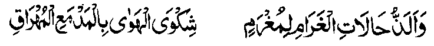
“Si-i ko sakatao a pephangabaya, na aya masa a piphaporo-an a kapipiya ginawa na giyoto so, igira sa hadapan o pekhababaya-an niyan, na mapepeno sekaniyan a kazendit ago so kapakasegad sa tanto a mala. ”
Di penggaga-an matiya so tao inonta bo o ba niyan phelangagen so Qur’an. Patot ko Qur’an so kibetaden non ko mipapanggao a darepa o di si-i ko Lihar (titibaba-an a pebatogan sa Qur’an igira pembatiya-an) o di na ibatog sa olona. Di khapakay o ba pakimbitiyara-i so tao sa salakao igira pembatiya. Opama khategel so tao a makimbitiyara-i sa salakao, na lekhebi niyan da-an so Qur’an na go bo pakimbitiyara-i, oriyan niyan na batiya-a niyan so Ta’awwudh (so ‘A’odho Billahi minas Shaitaanir Rajeem), na go bo batiya pharoman sa Qur’an. O so manga tao a maka-oobay na aden a gi-i ran nggalebeken, na taralebi so kabatiya sa maipes na so salakao si-i na taralebi so kabatiya sa matanog.
So manga Masha-ikh (manga Lokes tano) na miya-loy siran sa nem a mapayag ago nem a masolen a bitikan (Adab) o pada-adat ko kabatiya sa Qur’an, a pagaloin ko oriyan na-i:
Marayag a Bitikan a Pada-adat:
1. So kapagabedas na oriyan niyan a montod a somasangor sa Qiblat sa tanto a kambilangatao.
2. Di ka penggaga-an, sa matiya ka si-i ko manga takes ago ontol a koropan.
3. So kasegad, apiya ba ngka den mategel so ginawa ngka.
4. So kanggola-ola-a ngka ko patot a zowa-an igira aya Ayaat na makatotoro sa Limo o di na siksa sa lagid o kiya-aloy niyan ko ona-ana-i.
5. So kabatiya na maipes, opama ka so ikhlas na ikhalek ka si-i ko makapantag reka ago sanggila o ba rimoreng so manga salakao reka. O di giyangka-i sabap na batiya ka sa matanog.
6. Batiya ka sa mapiya a lago sabap sa so kabatiya sa mapiya a lago na madakel a Hadith a inosay niyan angka-i.
Masolen a Bitikan a Pada-adat:
1. So poso na ipheno-on so kasesela-a ko Qur’an, ma-ana phikiren ta so kaporo a pangakatan niyan.
2. Nggedamen ko poso so Kaporo, Kala ago Kapakagagang-gam o Allah a Mala, a Sekaniyan-i tomiyoron sangka-iya Qur’an.
3. Zotin so poso ko langon o pangalang ago so kazasangka.
4. Pamimikirana ngka so manga ma-ana niyan ago padalemi ngka sa ginawa ngka so babaya ko kapembatiya-a ngka on.
So Rasulollah (Sallallaho ‘ Alaihi Wasallam) na miyaka-isa na so tenday o kagagawi-i a aya niyan bo gi-i khaso-kasoin angka-iya Ayaat:
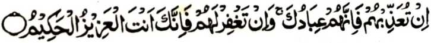
‘O siksa-a Ngka siran, na mata-an! a siran na manga oripen Ka. Na o napi-i Ngka siran na mata-an! a Seka na Seka so Mabager, a Maongangen,’ [Soorah Al-Maidah:118]
Miyaka-isa na so Hadrat Sa’id ibn-e-Jubair (Radhiallaho ‘ Anho)) na miyababasa-gawi-i na aya niyan bo gi-i khaso-kasoin angka-iya Ayaat:
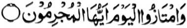
'Na sibay kano sa Alongan naya! Hay manga baradosa!'[Soorah Yaasin:59]
5. Padalema ngka ko poso-o ka so mitotoro angkoto a manga Ayaat a pembatiya-an ka. ibarat, o manga Ayaat a piyanothol iran so limo, na pheno-on so poso a kapipiya ginawa. So peman so manga Ayaat a makatotoro sa siksa, na so poso a phadalemen non so kalek.
6. So manga tangila na phakapamakinegen sa lagid den o ba so Allah na Sekaniyan den i gi-i tharo na so pembatiya na pephamamakinegen niyan Sekaniyan.
Phamangenin aken, sabap ko Limo ago Gagao o Allah, na kabegan tano sa kapakagaga ko kabatiya sa Qur’an mokit sangka-iya a miyanga-aaloy a manga bitikan a pada-adat.
Isa a Kepit ko Agama
So kilangagen ko saba-ad ko Qur’an a pagosaren ko gi-i kinggolalanen ko Sambayang na paliyogat o omani Muslim, ogaid na so kilangagen ko langowan o Qur’an na Fardh-e-Kifayat (ma-ana benar ka paliyogat ko langon, ogaid na khapakay a ayabo a makanggola-ola on na so saba-ad. Opama da-a isa bo a Hafiz, na langon khadosa so manga Muslim). So Mulla Ali Qari (Rahmatullahi ‘Alaihi) na miyapanothol iyan pen a miyakathitayan ko Zarkashi a, si-i ko isa a inged o di na bandara inged, a daden a sakatao bo a pembatiya sa Qur’an, na so langon o manga tao sangkoto a inged na langon madodosa.
Sangka-iya masa a maliboteng ago kada a meleng a so manga Muslim na miyadadag siran den ko kala-an ko Agama Islam, na aya den a kepit o kadakelan na da-a bali niyan ago kalalalongan so kilangagen ko Qur’an ago baden ilang a masa ago sendod a pamikiran so gi-i kazalosawa ko manga katharo-on a di bo zaboten so ma-an niyan. Opama ka giya-i bo-i kapakasosopak tano si-i ko paratiyaya, na aden a mala-a osayan a khisorat a makapantag si-i. Ogaid, na imanto na pembasa-ani so langon o manga ola-ola tano na langon mariribat go so langon o pamikiran tano na aya den reketano pephakadadag. Ay taman a kapakapemboko o tao ago ay taman a kala a kapaka-phagata-at iyan.
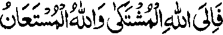
uNa si-i ko Allah a pephanonan tano ago si-i ReKaniyan tano phengeni sa tabang. ”
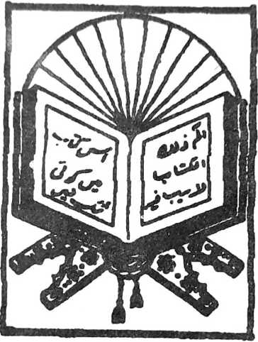
Ba-ad -1
PAT - POLO A MANGA HADITH
Hadith -1
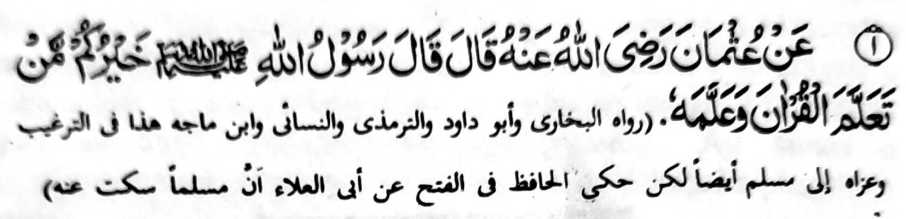
Miyakathitayan ko Uthman (Radhiallaho Anho) a pitharo iyan a pitharo o Rasulollah (Sallallaho Alaihi Wasallam), “Aya taralebi rekano na so too a piyaganad iyan so Qur’an go inipamangenda-o niyan. ”
Si-i ko kadakelan ko manga kitab.na giyangka-iya a Hadith na aya kiya-aloyaon na batanga a [ 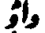
] (ma-ana “o di”), sa aya miyapema-ana niyan na “Aya taralebi rekano na so tao a piyaganad iyan so Qur’an o di na (so tao a) inipamangenda-o niyan (so Qur’an).”
Siyabot sangka-iya a kiyapaka-okit angkaiya a Hadith, a so balas na melagid, ma-ana zagit so tao na piyaganad iyan so Qur’an ago so tao a inipamangenda-o niyan (so Qur’an) ko manga ped a tao. Ma-ana melagid a khakowa iran a balas.
So Qur'an i bayanan o Agama a Islam, na ron misasangkot so kapakatitindeg angka-iya a paratiyaya ko kasisiyapa ago so di-i kipanolonen ko Qur’an. Sabap ro-o so kalbihan o kapaganada ago so di-i kipamamgenda-on ko Qur’an na tanto a marayag sa diden kailangan o ba osaya sa tanto a matas.
Ogaid, na piphangka-pangkat so kapakalelebi niyan. Aya piphaporo-an niyan na so kapaganada ko Qur’an sa rakhes o manga ma-ana niyan ago so tafsir iyan, na aya miyakababa-baba on na so bo so kabatiya-a on.
Giyangka-nan na miya-aloy a Hadith na miyabager mambo o isa a katharo o Rasulollah (Sallallaho ‘Alaihi Wasallam) a miyakathitayan ko Hadhrat Sa’id Ibn-i Salim (Radhiallaho ‘ Anho), “Opama ka so tao a miyakakowa sa sabot ko Qur’an na aden pen a tarima-an niyan a makalawan rekaniyan sa kiyapagontong a tao a aden a sowa iyan a salakao, na da niyan kapagadati so manga limo a inibegay ron o Allah ko kiyasowa-a niyan ko Qur’an.” Tanto a marayag ka sabap sa kagiya so Qur’an na mababaloy a Katharo o Allah, na makalelebi ko apiya antona-a katharo, sa kha-aloy bo ko saba-ad a manga Hadith ko oriyana-i, so kabatiya-aon ago so kipamangenda-o non na makalelebi ko apiya antona-a salakao ron.
So Mullah Ali Qari (Rahmatullahi ‘Alaihi) na miya-aloy niyan a salakao a Hadith a saden sa tao a makakowa sa ilmo a ped ko Qur’an na miyakatago sa ilmo a kananabi-i go bad-bad iyan.
So Sahl Tastari (Rahmatullahi ‘Alaihi) na pitharo iyan a aya tanda sa babaya ko Allah na so kaaden ko poso o tao o babaya ko Katharo o Allah.
Miya-aloy ko kitab a ‘Sharha Ihya’ so rirayan o manga tao a phakasirong ko ‘Arsh’ sangkoto a piyakalek-lek a Gawi-i a Kaphangokom, na ma-apedon so manga tao a ipephamangenda-o iran so Qur’an ko manga roroni a wata o manga Muslim ago so siran a piyaganad iran so Qur’an ko kaito iran pen na miyatatap so kapembatiya-a iran non taman ko kiyapamakala iran.
Hadith — 2
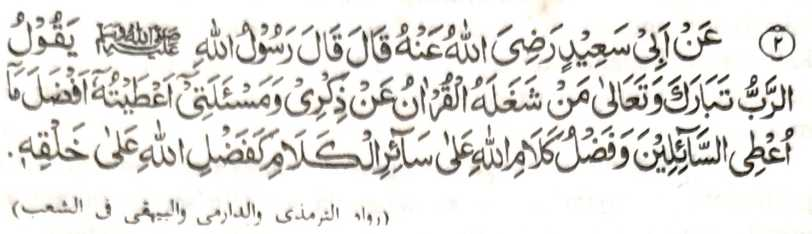
Miyakathitayan ko Abu Sa’eed (Radhiallaho ‘Anho) a pitharo iyan a pitharo o Rasulollah (Sallallaho ‘Alaihi Wasallam), “Pitharo o Kadenan a Mapom ago Mala, ‘Sa too a makatembangon so kapembatiya iyan sa Qur'an sa kakhatademi niyan Raken go so kapaka-phamangeni niyan Raken, na imbegay Aken non so (balas) a lebi mala a di so imbegay Aken ko langon o pephamangeni (Raken).' Aya kapakalelebi o katharo o Allah ko langon o ped a katharo na lagid o kapakalelebi o Allah ko langon o ka-aden Niyan. ”
Aya zaboten si-i na, opama baden pagabain ko siran a pephamangeni sa limo ko Allah, na mata-an a lebi a mapiya a imbegay Niyan ko tao a matataman sa kiphelangagen niyan ko Qur’an o di na matataman ko kapephaganada niyan ko ma-ana o Qur’an sa da-a a masa niyan a ba niyan mipamangeni.
Kalalayaman a igira aden a tao a pephamegay sa mamis, odi na (pephamegay sa) salakao a nganin ko manga ped a tao, na aden den a misesenggay niyan a bagi-an o tao a da makadarepa sangkoto a kalilimod sabap sa aden a inisogo-on angkoto a di-i mamegay. Si-i ko isa a Hadith a lagida-i sa isnad, na miya-aloy ron a so Allah a mbegan Niyan angkoto a tao sa lebi a mapiya balas a di so imbegay Niyan ko langon o oripen Niyan a mananalamat.
Hadith - 3
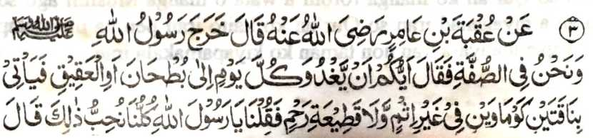
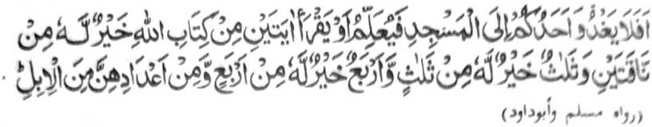
Miyakathitayan ko ‘Uqbah bin ‘Amir (Radhiallaho Anho) a pitharo) iyan, “Lominiyo so Rasulollah (Sallallaho ‘Alaihi Wasallam) (ko walay niyan) ko masa a zisi-i kami sa Suffah na pitharo iyan, ‘Antawa-a rekano i mabaya mamadi-an oman kapipita sa But-han o di na sa ‘Aqiq na makakowa-on sa dowa a babay a onia a daon madosa ago da a minitholaka iyan non a tonganay niyan?’ Pitharo ami, ‘Khababaya-an nami anan!’ Pitharo iyan, ‘So kasong o isa rekano sa Masjid na mangenda-o o di na matiya sa dowa a Ayaat a ped ko Kitab o Allah na mapiya rekaniyan a di so dowa a babay a onta, go so telo a Ayaat na mapiya rekaniyan a di so telo a babay a onta, go so pat a Ayaat na mapiya rekaniyan a di so pat a babay a onta, go so saden sa kadakel iyan a Ayaat na na mapiya rekaniyan a di so lagid iyan sa kadakel a babay a onta. ’”
So Suffah na ibebetho ko isa a darepa a mipoporo sa soled a Masjid o Rasulollah (Sallallaho ‘Alaihi Wasallam) sa Madina. Aya komakaden non na so manga miskin a manga Muslim a Muhajireen [madakel a manga Muhajir - tomiyogalin sa Madina pho-on sa Makkah]. Ibebetho kiran na so ‘Ashabus-Suffah’ [manga tao sa Suffah], So kadakel iran na pekhasalin-salin ko masa: So Allama Suyuti (Rahmatullahi ‘Alaihi) na mi-itong iyan a magatos ago sakatao ago inisorat iyan ko salakao a kitab so manga ngaran iran.
Giya But-han ago giya ‘Aqiq na dowa a manga ala a padi-an a parada-i sa onta sa obay a Madina. So onta, balabao ron so babay a onta na makapali bato-bato, na tanto a pekhababaya-an o manga Arab.
Giyangkoto a katharo sa “daon madosa” na mala-i kipantag So nganin a khakowa sa da kapelogati na odi miyaka-okit sa tegel nggolalan sa giyasab o di na miyokit sa piyanekhao. So Rasulollah (Sallallaho ‘Alaihi Wasallam) na tiyabiya iyan non angkoto a dowa a okit. So kapaka-kowa sa nganin a di kaphelogatan a go da a dosa on na tanto a khababaya-an o langon o tao, ogaid na taralcbi sa kapiya so kapaganad sa pira timan a Ayaat.
Marayag a benar a kena ba giyabo so isa o di na dowa a onta. ka apiya aya den makowa o tao so kadato ko pito a ‘Aqlim (ma-ana giya den a donya) na khaganatan bo o tao, o di imanto na mapita (ko masa a kapatay niyan), ogaid na so balas o isa bo a Ayaat na tani-tiyasa. Pekha-ilay tano den imanto a so tao na tomo-on niyan igira bigan sekaniyan sa salad bo a pirak (a kena baon ibabanay a khikasoy niyan), a di so tiyadinan sekaniyan sa sanggibo a pirak sa di mathay. Giyangkoto a tadin na ba sekaniyan den kiyatago-an sa awida akal sabap sangkoto a tadin a daden a miyanggona niyan non. Aya mata-an, na giyangka-iya a Hadith na tapa-os o ba tano milagid so nganin a di tatap ko nganin a tani-tiyasa. Melagid o di-i melogat o di na domedekha. na so tao na pephamimikirana niyan o so gi-i niyan kaperomasay na pekhailang ko gi-i kapanimo-a ko di tatap a kapakalaba si-i sangka-iya donya, o di na si-i niyan mi-aantap ko kaparoliya ko da-a tamana iyan (a kapaginetao). Kanogon niyan so miya-ilang a galebek a khasabapan sa tani-tiyasa a ringasa So oriyan a katharo sangkoto a Hadith a “go so saden sa kadakel iyan a Ayaat na mapiya rekaniyan a di so lagid iyan sa kadakel a babay a onta.” na telo a madadalemon a ma-ana: Paganay ron, taman ko bilangan a pat, na aya balas iyan na inosay ron. So sobra si-i, na makampet a kiya-aloya on sa saden sa kadakel a Ayaat a mabatiya iyan na kala a kapakalelebi niyan a di so lagid iyan a kadakel a onta. Si-i sangka-i na sa kaposan na aya inaloy ron na onta melagid o babay o di na mama a onta - go so kadakel iyan na lawan ko pat sabap sa taman bo sa pat so balas iyan na marayag a kiya-aloya on. Ika dowa a ma-ana niyan na so bilangan a miya-aloy na lagid den o mona a kiya-aloya on, sa aya mitotoro iyan na so lalayon kapaka-mbibida-bida o kabaya; aden a mababaya sa babay a onta na aden mambo a mababaya sa mama a onta. Giyoto-i sabap a so Rasulollah (Sallallaho Alaihi
Wasallam) na giya-i kiyapaka-okita niyan non sa makapemama-ana sa omani isa a Ayaat na taralebi a di so satiman a babay a onta ko manga tao a mababaya sa babay a onta, go so omani satiman Ayaat na taralebi a di so satiman a mama a onta ko manga tao a mababaya sa mama a onta. Ika telo a ma-ana niyan na so bilangan na lagid den o kiya-aloy niyan sa di kalawanan so pat. Si-i ko ika dowa a ma-ana niyan sa so isa a Ayaat na talaralebi a di so satiman a babay a onta o di na mama a onta na di ron khitarotop, ogaid na miyakaperakhes a dowa oto, ma-ana so isa a Ayaat na taralebi a di so pakaperakhesen so babay ago mama a onta. Ma-ana ini na omani Ayaat na taralebi a di so lagid iyan sa kadakel a babay ago mama a onta. Giyoto-i sabap a omani isa a Ayaat na lagid o down a babay ago mama a onta. So ama aken [Lindawan o Allah so Qobor iyan] na zosoramig sekaniyan sangka-iya osayan sabap sa kapakalelebi niyan sa kipantag. Kena ba aya ma-ana ini na aya balas o satiman a Ayaat na lagid o satiman o di na down liman a onta. Langona-i na baden pangoyat ago ibarat. Miya-aloy ko ona-ana-i a so satiman a Ayaat a aya balas iyan na tatap ago kakal na makalelebi ko apiya isa den a ndato-an ko pito a Aqlim, a aya khaoriyan non na khabinasa.
[So pito a Aqlim na giyoto so pito a mala a kadidiyamongan ko manga inged sa donya ma-ana giya: Asia, North America, South America, Europe, Africa. Australia, go giya Antarctica.]
So Mulla Ali Qari (Rahmatullahi ‘Alaihi) na inizorat iyan a tothol ko isa a barasimba a Shaikh a somiyong sa Makkah ka nomiyaik. So kiyapaka-oma niyan sa Jeddah, na so saba-ad ko manga ginawa-i niyan a manga padagang na piyangeni ran non a malo pagethay sa Jeddah, ka aden mala a malaba iran ko manga dagangan niran sabap ko barakah o katatago iyan kiran. Aya pen a mapipikir iran na aden makanggona so saba-ad ko manga panakawan angkoto a Shaikh ko pekhalaba iran ko dagangan niran. Paganay na pitharo angkoto so di niyan kakharawa ko ba sekaniyan pagethay kiran, ogaid na sabap ko kapethegela iran non, na ini-iza iyan kiran o ay taman a kala pekhalaba iran ko dagangan niran. Pitharo iran a mbaram-barang, ogaid na aya pithaman niyan na makatakep siran. Pitharo angkoto a Shaikh,
"Tanto niyo den a gi-i peromasayan angka-iya a maito a laba; Sabap ko da-a rarantek iyan a laba na diyaken kharao o bako mibagak so Sambayang si-i sa Haram a aya balas o omani Sambayang na gi-i thake-takepen sa magatos nggibo.” Aya mata-an na seketano a manga Muslim na pamimikiranen tano o anda sabap a pantag bo ko tanto a maito a laba sangka-iya donya, na pekhasalak pen a aya tano pekhiraga so taralebi a mala a kamapiya-an o niyawa
‘Hadith — 4
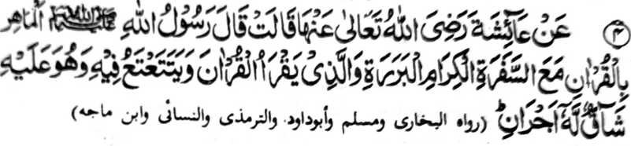
Miyakathitayan ko A'isha (RadhiAllaho Anha) (a pitharo iyan a pitharo o Rasulollah (Sallallaho ‘Alaihi Wasallam), “So tao a mapa-sang-i kabatiya sa Qur'an na khaped sekaniyan ko manga Malaikat a panonorat a manga pemamasela-an go so tao a batiya-an niyan so Qur'an a pephamangisozong ogaid na peroromasayan niyan Iso kapembatiya-a niyan non] na bagi-an niyan so dowa a balas."
So katharo a “Mapasang-i kabatiya sa Qur’an” na aya ma-an niyan na so tao a mapasang-i kalangag ago kabatiya sa Qur’an Tanto a maporo a bantogan opama ka so tao na masowa iyan so ma-ana niyan ago so paka-antapan non. So kaped ko manga Malaikat na aya ma-ana niyan na, lagid o manga Mala-ikat a tomiyogalin ko Qur'an pho-on ko Lauhe-Mahfuz (Kasosoratan ko langowan taman si-i sa langit), a sekaniyan mambo na inisampay niyan so Qur’an ko salakao ron nggolalan ko kapembatiya-an niyan non na, sabap san na miakapelagid siran sa galebek, o di na khitapi sekaniyan sangkoto a manga Malaikat si-i ko Gawi-i a Kaphangokom. So tao a pephamangisozong sa kapembatiya iyan sa Qur'an na bagi-an niyan so dowa a balas - isa a balas sabap ko kapembatiya iyan sa Qur’an na ika dowa sabap ko kaperoromasay niyan sa kapembatiya-a niyan ko Qur’an, makimpen pephamangisozong.
Kena ba aya ma-ana ini na ba niyan khalawani so balas a khakowa o tao a mapasang-i kabatiya sa Qur’an So balas a mapembagi-an o tao a mapasang-i kabatiya sa Qur’an na tanto a makalalawan, sa aya den a miphagepeda iyan na so manga Mala-ikat a masasalebo. Aya osayan niyan na so dokao a madadalem ko kipekhisozong ago so karegen o kapembatiya-a ko Qur’an na aden a balas o omani isa kiran. Sabap sangkoto a maola-ola na oba bagaken o tao so kabatiya sa Qur’an, apiya pen so kipekhisozong na mabaloy a bangen.
So Mulla Ali Qari na miya-aloy niyan pho-on sa ‘riwayat' o Tibrani ago so Baihaqi a so tao a di niyan khilangag so Qur'an phiya-piya ogaid na tanto niyan a peroromasayan sa gi-i niyan non kapaganada na bagi-an niyan so takep a balas Lagidoto mambo so tao a mandidingan-dingan niyan a kilangagen niyan ko Qur’an ogaid na di niyan khagaga o ba niyan milangag, na o di niyan taregen so gi-i niyan non kanggalebeka, na si-i ko Gawi-i a Qiyamat na mbalowin sekaniyan o Allah a ped ko manga ‘Hufaaz’ [miyamakalangag sa Qur’an].
Hadith— 5

Miyatothitayan to Ibn Umar (Radhiallaho 'Anha a pilharo iyan a pitharo o Rasulollah (Sallallaho 'Alai hi Wasallam), "Da'a kapangasigi inonta si-i ko dowa: So mama a bigan o Allah sa [sabot ko] Qur’an a sekaniyan na ipamamayandeg iyan sekaniyan (a kabatiya sa Qur’an) to manga kagagawi-i ago so manga kadaan-dao, go so mama a bigan o Allah sa tamok a sekaniyan na gi-i niyan izasadeka to manga kagagawi-i ago so manga kadadaondao. ”
Si-i ko kiyapayag iyan ko kadakelan a Ayaat sa Qur’an ago so madakel a Hadith, na so ‘hasad’ [kapangasigi] na marata ago titho den a inisapar. Giyangka-iya a Hadith na lagid o ba niyan piyakay si-i ko kipangasigin ko dowa a mama. Sabap sa madakel a Hadith a piyagosay niyan so ‘hasad’, na so manga Ulama na tiyapsir nan angka-iya Hadith sa dowa a okit: Paganay ron, na so ‘hasad’ na aya isa a basa-on a Arab na ‘Ghibtah’, sa aya miyapema-ana niyan si-i na kapamagasiga. Aden a mbida-an o kasigi ago so kapagasiga. So ‘hasad’ na so kazinganina o tao a mada ko ped iyan angkoto a inikasigi niyan non melagid o makowa niyan angkoto a nganin o di na di niyan makowa, ogaid na so kapagasiga na giyoto so kazinganina ko kapakakowa sa lagid angkoto a inikasigi niyan melagid o mada sangkoto a salakao a tao antawa-a ka di. Sabap sa so ‘hasad’ na haram (ko kokoman non o Agama) na aya kokoman non ko ‘Ijma [kiyaopakatan ko manga Ulama], na so manga Ulama, sabap bo ko kapephaka-okit iyan sa abaya-bayan, na aya inipema-ana iran ko ‘hasad’ na ‘ghibtah’, ma-ana kapagasiga. So ‘ghibtah’ na piyakay ko kapaginetao sa donya ago inipangoyat makapantag ko galebek ko Agama.
Aya ika dowa a tapsir angka-iya Hadith na so ‘hasad’ na aya den a ma-ana niyan na giyangkoto a kalalayaman a ma-ana niyan, ma-ana opama ka khapakay bo so hasad sa maito bo na si-i bo miyapakay ko kikasigin pantag sangkoto a dowa a manosiya a miya-aloy.
Hadith - 6
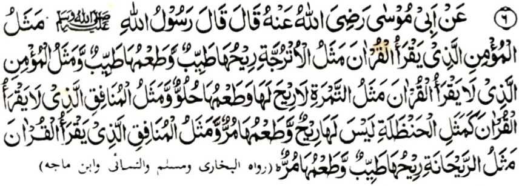
Miyakathitayan ko Abi Mosa (Radhiallaho ‘Anho) a pitharo iyan a pitharo o Rasulollah (Sallallaho ‘Alaihi Wasallam), “Aya ibarat o Mo'min a pembatiya-an niyan so Qur’an na layid o darangita a mamot ayo mamis; go aya ibarat o Mo’min a di niyan mbatiya-an so Qur'an na layid o korma a da-a bao niyan oyaid na mamis, go aya ibarat o Munafiq a di niyan mbatiya-an so Qur'an na lagid o ogo [phagetho’ sa kilid a kalasan a lagid sa paraas o obi] a da-a bao niyan ayo mapeledi ta-am; go aya ibarat o Munafiq a pembatiya-an niyan so Qur’an na layid o Raihan (obarobar) a mamot ogaid na mapa-it-i ta-am. ”
Si-i sangka-iya a Hadith na iniropa-on so kalbihan o kapembatiya-a ko Qur’an, sa ini-ibarat ko pekha-ilay a nganin ka aden miropa so mbida-bida-an o kabatiya ago so di kabatiya-a ko Qur’an. Aya mata-an na giyangka-iya a manga nganin si-i sangka-iya donya lagid o darangita o di na korma na di niyan khalagid so kamot ago kamis o Qur’an. Aden baden a masasalebo a zaboten sangka-iya manga ibarat, a mitotoro iyan so kadalem-i panarima o manga Nabi go miyatanto ko kaolad o sabot o Rasulollah (Sallallaho ‘Alaihi Wasallam). Ilain tano so ibarat o darangita, a mapiya-i ta-am ko ngari, pephakasoti ko soled a tiyan ago mapephakalebod iyan so kapheliyo o Najis. Giya-i mapepento a kalbihan o kapembatiya-a ko Qur’an sabap sa so kapiya o sengao, so kasosoti o masolen ago so kabager o niyawa na aya onga o kabatiya sa Qur’an. Miya-aloy pen a opama aden a darangita ko walay, na da-a phakasoledon a Jinn [a marata]. Opama ka benara-i na giyanan den-i kalbihan o Qur’an. So manga doctor na pitharo iran a so darangita na pekhabager iyan so kapiya o tanod ago miya-aloy si-i ko kitab a ‘Ihya’ a so AH (Radhiallaho ‘Anho) na pitharo iyan a telo a nganin a mapephakabager iran so tanod, ma-ana kasotiya ko ngipen a nggolalan sa miswak, so kaphowasa ago so kapembatiya-a ko Qur’an.
Si- ko kitab o Abu Daud, na miya-aloy ron si-i ko kaposan angka-iya miya-aloy a Hadith a aya mapiya ipephagonota na so padagang sa Misk (kastori). Apiya da ka makakowa sa mamot, ogaid na kiyanggona-an ka so kamot iyan.
Somarata a onota na lagid o kaobay ko tolang, a so obay niyan, na apiya da maka-item ogaid na da niyan kalidasi so bel iyan. Giyoto-i sabap a tanto den a paliyogat so kamapili o tao sa onota iyan, a siran so lalayon niyan gi-i mipelomameka.
Hadith - 7
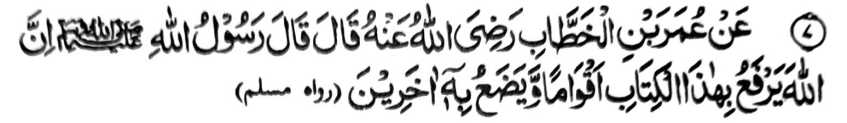
Miyakathitayan ko Umar ibn Al-Khattab (Radhiallaho Anho) a pitharo iyan a pitharo o Rasulollah (Sallallaho Alaihi Wasallam), “Mata-an a so Allah na iniporo Iyan misabap sangkanan a kitab so saba-ad a manga tao ago piyakadapanas iyan misabap sangkanan a kitab so saba-ad a manga tao. ”
So manga tao a piyaratiyaya iran angkanan a Soti a Kitab ago ininggolalan niran na bigan siran o Allah sa daradat a bantogan ago pada-adat, sangka-iya donya ago si-i sa Alongan a Maori, so peman so manga tao a da iran nggolalalnen angkanan na piyakadapanas siran o Allah. Giyangka-iya a okit na miya-aloy pen ko madakel a Ayaat ko Qur’an. Si-i ko isa a darepa na miyabatiya-on.
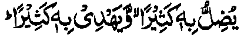
"...madakel a pendadagen Niyan sa sabap saya, go madakel a pethoro-on Niyan sa sabap saya.” [Al-Baqarah: 26 ]
Si-i pen ko salakao peman a darepa na kiyasagadan tano ron:
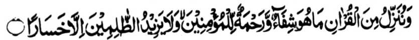
"Na ipethoron Nami a ped ko Quran so bolong go limo ko Miyamaratiyaya. Na baden pephakaoman ko manga darowaka sa kalogi." [Bani Israel:82]
So Nabi (Sallallaho ‘Alaihi Wasallam) na miyapanothol pen a miyatharo iyan, “Kadakelan ko manga Munafiq sangka-iya Ummat na ped ko manga Qurra, ma-ana manga pababatiya sa Qur’an.” Si-i ko kitab a ‘Ihya-ul Ulum’ na miyapanotholon a pho-on ko manga Mashaikh, “Anda den-i kapho-on matiya o tao ko isa ko manga ‘Surah’ ko Qur’an, na so manga Maia-ikat na phonan niran den so gi-i ran non kipamangenin sa limo taman ko di niyan kagenek; ogaid na aden o to a soden so kapho-on niyan matiya na pho-on den mambo so manga Mala-ikat ko gi-i ran non kipamaninta-an taman ko kapakapos iyan matiya.”
Saba-ad ko manga Ulama na pitharo iran a aden a pekhasalak a tao a pembatiya sa Qur’an ogaid na aya miyakowa niyan non na so morka rekaniyan a di niyan mai-inengka. Lagid opama o kabatiya-a niyan sa Qur’an ko:
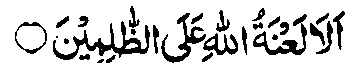
"....Tanodan! Ka so morka o Allah na ithom parak ko manga darowaka!!" [Surah Hud: 18]
a miyata-an niyan a ginawa niyan sangka-iya a paninta sabap ko manga dosa niyan. Sakamaoto mambo a batiya-an niyan sa Qur’an so:
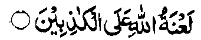
"....So morka o Allah na si-i ko manga bokhag!" [ Surah Aali-‘Imran:61]
Aya mata-an na minisanggar iyan a ginawa niyan ko [kasopi-it] o tapa-os sabap ko kababaloy o ginawa niyan a bokhag.
So ‘Amir ibn-e-Wathilah (Radhiallaho ‘Anho) na pitharo iyan a so Umar (Radhiallaho ‘Anho) na biyaloy niyan so Nafe ibn-e-Abdul Harith a governor sa Makkah. Miyaka-isa na iniza-an niyan so Nafe’ o antawa-a-i biyaloy niyan a komikibir ko ipangalasan. Inisembag o Nafe’ na, “So Ibn-e-Abzi”. Pitharo o
Umar (Radhiallaho ‘Anho), “Antawa-a so Ibn-e-Abzi?” Inisembag iyan, “Isa sekanryan ko manga panakawan nami ” Pitharo o Omar (Radhiallaho ‘Anho), “Inongka mbaloya so sakatao a oripen a ‘Amir?” Inisembag o Nafe, “Sabap sa pembatiya-an niyan so kitab o Allah.” Sabap si-i na piyanothol o Umar (Radhiallaho ‘Anho) angka-iya Hadith a miyatharo o Rasulollah (Sallallaho ‘Alaihi Wasallam) a sabap sangka-iy Kitab, na miniporo o Allah so daradat o madakel a mang tao ago miyapakadapanas iyan so saba-ad a madakel a tao.
Hadith — 8
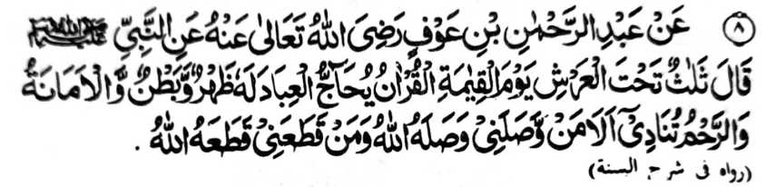
Miyakathitayan ko Abdur Rahman bin 'Auf (Radhiallaho Anho) a pitharo iyan a pitharo o Nabi (Sallallaho Alaiki Wasallam), ”Telo a matatago ko atag o ‘Arsh ko Cawi-i a Qiyamah: Paganay ron na so Qur'an a pagewakilan niyan so oripen go aden a mapayag ago masolen a ma-ana niyan; ikadowa so Amanah (sarig); na ikatelo so kathotonganaya a gi-i mamangeni [ko Allah] sa, 'Ompiya-an o Allah si tao a miphorong raken ago binasa-an Niyan so tao a pizapotol ako niyan."
So katatago angkoto a telo a nganin ko atag o ‘Arsh na mitotoro iyan so taman a karani ran si-i ko Allah. So kapagewakil o Qur’an na aya ma-ana niyan na zapa-aten niyan so manga tao a pembatiya-on ago ini-nggolalan niran so manga sogo-an niyan. Thabangan niyan siran ago phangeni myan a miporo so daradat iran. So Mullah Ali Qari na miyapanothol iyan a miyakathitayan ko Tirmizi (ped ko manga kitab a kasosoratan sa manga Hadith) a, si-i sa hadapan o Allah, na so Qur’an na phangeni sa kabegan sa zokoba a nditaren so tao a pembatiya-on. So Allah na began niyan sa sangkad a kiyabantogan. So Qur’an na mangeni peman sa kaomanan so
limo a bagi-an angkoto a tao. Oriyan niyan na began sekanivan o Allah sa zokoba a nditaren a tanto a kababantogan Pangenin peman o Qur'an a maso-at rekaniyan so Allah, na ipayag o Allah a miyaso-at Sekaniyan si-i rekaniyan
Si-i sangka-iya kapaginetao sa donya na so kaso-at reketa o tao a pekhababaya-an ta na tanto a mazisingayo a pamemegayan. Sakamaoto mambo, a si-i sa Alongan a Maori, na da-a a limo a ba niyan malagid so kasoso-at o Pekhababaya-an tano a Allah. So peman so manga tao a inindaramon mran so kabenar kiran o Qur’an, na phangoragisan niyan siran, Ino ba ko niyo siniyap? Ino ba niyo minitoman so kabenar aken rekano?”
Miyapanothol a miyakathitayan ko Imam Abu Hanifah (Rahmatullahi ‘Alaihi) ko kadadalem iyan ko kitab a ‘Ihya a kabenar o Qur’an a makadowa matamat ko soled o saragon. So langon o manga ped tano a di ran sisiyapen so kapembatiya-a iran ko Qur’an na pamimikirana iran o andamanaya-i kakhaiinidinga iran sa ginawa iran ko kaphanontot o tanto a mabager a phanontot. So kapatay na matatangked ago da-a phalagoyan non.
So katharo a “lawas ago niyawa” o Qur’an na marayag. So Qur’an na aden a marayag a ma-ana niyan a pezaboten o langon o tao, ogaid na so madalem a ma-ana niyan na kena ba zabota o kadakelan. Misabap si-i a so Rasulollah (Sallallaho ‘Alaihi Wasallam) na miyatharo iyan, “Saden sa tharo sa pamikiran niyan makapantag ko apiya anda sangkanan a Qur’an na miyaribat, apiya giyangkoto a pamikiran iyan na benar."
Saba-ad ko manga Ulama na aya paratiyaya iran sangkoto a “marayag”, ma-ana so lawas o Qur’an, na aya mitotoro iyan na so manga katharo o Qur’an a mapiya a kapembatiya-aon o kadakelan ago so katharo a “masolen”, ma-ana niyawa o Qur’an na aya mitotoro iyan na so manga ma-ana o Qur’an, ago so madadalemon a ongangen, a so kasaboti ron na gi-i makambida-bida sabap ko mbida-bida-an o kapasang o pembatiya.
So Hadhrat Ibn-Mas’ud (Radhiallaho ‘Anho) na pitharo iyan. “O thontot ka sa ilmo, na pamimikirana ngka so manga ma-ana o Qur’an, sabap sa kagaganggaman niyan so totholan ko miyaona a masa ago so khaoriyan.” Ogaid, na paliyogat so ka-okiti ko manga sarat o gi-i kapcma-ana-i ko Qur’an. Aya di patot a dadabi-atan sa masa imanto na sekaniyan so apiya so maito-i sabot odi na daden a sabot iyan ko basa Arab na pembegay siran sa osayan iran ko Qur’an a si-i bo makaphapasod ko saba-ad ko ma-ana o Qur’an ko basa iran. So manga pananapsir na mitad siran sa sapolo ago lima a phanamaran o siran a mbegay sa osayan ko Qur’an. Giyangka-i a manga sarat a pagaloin ko oriyana-i na khailay ron a maregen ko kadakelan so kasaboti ko madalem a ongangen ago titho a ma-ana o Qur’an:
(1) Lughat, ma-ana so paka-asal o basa, a phaka-ogop sa kakhasaboti ko titho a ma-ana o katharo. So Mujahid na pitharo iyan, “So tao a paparatiyaya-an niyan so Allah ago so Gawi-i a Kaphangokom na di niyan pagokasa so manga modol iyan pantag ko Qur’an, inonta bo o ba niyan katawi so paka-asal o basa a Arab. Aya den a kalilid na so katharo a Arab na madakel-i ma-ana. Khapakay a aya bo a katawan o tao na so isa odi na dowa ko ma-ana o katharo, ogaid na si-i ko satiman a katharo na khapakay a salakao a mapema-ana niyan.
(2) Nahu, ma-ana so sapak o ilmo ko basa, a pephaka-ogop sa kapekhasaboti ko kitotompok o isa a katharo ko salakao ron ago so I’rab (so kapekha-salin-salin o baris ago so batang o isa a katharo. So kapekhasalin o baris na giyoto den-i kapekhasalin o ma-ana.
(3) Sarf, ma-ana so kibtotogalin o basa, isa a sapak o 'Ilmo ko basa, a pephaka-ogop sa katokawi ko paka-asal o katharo a galebek (Fi-il) ago so kapekhasalin-salin niyan (mo-onot ko kapekhasalin o masa lagido miya-ipos.
kapapantagan, o di na dapen mitalingoma ago so kadakel o gomagalebek)
So Ibn-e Faris (Rahmatullahi ‘Alaihi) a pitharo iyan. “So tao a miyapapason so ‘limo ko Sarf na tanto a mala a miyalapison.” So ‘ Allamah Zimakhshari na miya-aloy niyan, a ibarat o tao na itogalin niyan so Ayaat a:
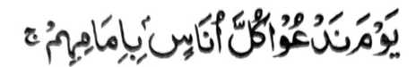
"Si-i ko alongan a itawag Ami ko omani manosiya so olowan niyan..." [Surah Bani Israil:71]
sa aya kitogalinen niyan non na "Si-i ko Gawi-i a tawagen Nami so manga tao pho-on ko manga ina iran”. Aya panarima iyan non na so katharo a Arab a “imam” ma-ana (sakatao a) olowan na aya ma-ana niyan na jama (madakel) o katharo a Arab a ‘Um (ina). Opama sekaniyan na aden a sabot iyan ko Sarf, na khatokawan niyan a aya jama’ o “Um” na kena ba so katharo a imam
(4) Ishtiqaq, so kiyasalinan ko katharo. Tanto a di mepzomala so katokawi ko kiyasalinan ko katharo ago so pakapo-on niyan, sabap sa opama ka so satnnan a katharo na si-i miyakapo-on ko dowa a mbida a katharo, na makapembida sa ma-ana, ibarat o katharo a ‘masih’ a miyakapo-on ko katharo a aya ma-ana niyan na “sekho-on” o di na “so kasapowa a mawasa a lima” ago khapakay pen a miyakapo-on ko katharo a ‘masahat’ ma-ana takes.
(5) 'Ilm-ul Ma’ani, ma-ana so ‘ilmo ko ma-ana o pananaro-on, sabap sa so katharo a mababa na isa a kakhasaboti ko ma-ana niyan na so kiyabaloy niyan a isa a pananaro-on.
(6) Ilm-ul-Bayan, ma-ana so kakenala ko manga ropa o katharo, lagid o ropa a marayag ago so ropa a madalem, a pekhisabap kiran a so katharo o di na so kagaganggaman o ma-ana o di na ropa-an niyan na miyarinayag odi na miyakadalem.
(7) Ilm-ul-Badi’, ma-ana so kakenala ko katharo sa lalag, giyanan so ‘ilmo a miyannayag iyan so bontal o katharo (a Arab) rakhes o paka-antapan ko ma-ana niyan.
Giyangkanan a telo a miya-ori na manga sapak o ‘Ilm-ul-Balaghat' (‘Ilmo ko katharo sa lalag), na langon siran mala-i gona a phangenalen, na so ‘Ilm-ul-Balaghah na isa ko manga ‘Ilmo a mala-i gona ko phanapsir, sabap sa so Qur’an a Maporo na tarotop a Mo’dizat na so piyakamememsa a kiyapanagombalaya-on na ayabo a phakasaboton na so tao a inaolad a kenal iyan sangkanan a miyanga-aaloy.
(8) 'Ilm-ul-Qirat', ma-ana so kenal ko kapangorop, sabap sa so gi-i kapakambida-bida o kabatiya na mbida-bida a ma-ana a gi-i niyan mbaloyan, na pekhasalak a so isa ko manga ma-ana na lebi a domada-it a di so manga ped iyan.
(9) 'Ilm-Ul-'Aqa'id', ma-ana kenal ko onayan o paratiyaya. Kailangan dena-i ko kaphagosaya ko saba-ad a manga abay-abayan. So mababao a ma-ana o omani basa makapantag ko Allah na khasalak a kena ba giyoto-i titho a ma-ana niyan. Ibarat, so abaya-bayan ko Ayaat:
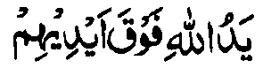
(...So Lima o Allah na maliliyawao ko manga lima iran..) [Surah Al-Fat’h:10]
na kailangan so kaosay niyan sabap sa so Allah na kena ba aden a pekha-ilay a Lima Niyan.
(10) Usul-e-Fiqha - Di den dowa-dowa a katawan niyan so ‘Ilmo ko Usul o Fiqhi sabap sa ron khatokawi so kiya-kowa o dalil go so kiyapaka-mbowata ko kokoman.
(11) Asbab-unaz-ul, ma-ana so manggogola-ola ko masa a kiyasabapan sa kinitoronen ko Ayaat. So ma-ana o Ayaat na lebi a kakhasaboti ron opama katawi tano so okit ago masa a kinitoron angkoto a Ayaat. Pekhasalak a so titho a ma-ana o Ayaat na ayabo a kakhasaboti ron na o katawi tano so manggogola-ola a aya kiyasabapan sa kinitoron angkoto a Ayaat.
(12) Nashik ago Mansukh, ma-ana so kenal ko manga kokoman a miyamansok (kiyalapisan) o di na kiyasambi-an, ka aden so Miyamasok (kiyalapisan) na makathadinisa ago so kapapantagan.
(13) ‘Ilm-ul-Fiqha’, Di den dowa-dowa a katawan niyan so ‘Ilmo ko Fiqhi sabap sa ron khaparoli so kakenala ko pizapangkatan o ‘Ilmo sa kenal a maolad a ron mambo khakenal so piyangadidiyamongan non.
(14) So kenal ko manga Hadith a ini-osay ko manga kakampet a Ayaat ko Qur’an.
(15) Aya mori ogaid na aya tanto a mala-i bali na so ‘Ilm-e-Wahbiy, ma-ana Ilham (‘Ilmo) a ipembegay o Allah ko manga tinindos Iyan, sa lagid o kiya-aloy niyan sa Hadith:
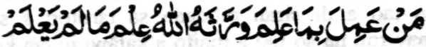
Sa tao a inggolalan niyan so siyabot iyan, na began sekaniyan a Allah sa ‘limo ko manga nganin a di niyan katawan.
Giyangka-iya a miyatindos a sabot (ko Agama) na mitotoro angkoto a sembag o Hadhrat Ali (Karamallaho Wajho) ko kini-iza-an non o manga tao o ba sekaniyan miyaka-kowa ko Rasulollah (Sallallaho ‘Alaihi Wasallam) sa liyo-liyoan a ‘Ilmo o di na enda-o a da makowa o manga ped. So Hadhrat Ali (Radhiallaho ‘Anho) na pitharo iyan, “Ibet ko Sekaniyan a Miyaden ko Sorga ago Miyaden ko niyawa, ka da a matatangan aken a liyo-liyowan inonta bo so maliwanag a sabot a ipembegay o Allah ko tao a khisabot iyan ko Qur’an.”
So Ibne-Abi-Dunya na pitharo iyan a so manga kenal ko Qur’an ago so manga gona a phakakowa-on na izan o kalodan a da a kilid iyan (ma-ana da a kaposan niyan).
So manga sapak o kata-o a inosay kagiya na maka-i-ibarat sa kasangkapan, ma-ana ma-ilot a sarat a khasowa o magosay (ko Qur’an). So osayan (tafsir) a inisorat o tao a maito a sabot iyan ko manga pizapakan o ‘Ilmo na aya bo a kapephasodan niyan na so pamikiran niyan, a giyanan na inisapar. So manga Sahabah (Radhiallaho ‘Anhom) na aya basa iran na so basa a Arab, ago minira-ot siran ko kadalem o manga ped ko ‘Ilmo sabap ko sindao a pekhakowa iran ko ka-aped kiran o Rasulollah (Sallallaho ‘Alaihi Wasallam).
So Allama Suyuti na pitharo iyan a so siran a aya pamikiran niran non a di ran kliagaga so ge-es o tao a zageb sa ‘Ilmo a ‘Ilm-e-Wahbi’ na mariribat siran. So kakowa-a ko lagid anan a kenal pho-on ko Allah, na so tao na kedega niyan angka-iya a okit, ma-ana so kinggolalanen ko ‘Ilmo a miya-sageb iyan ago palagowi niyan so Donya.
Miya-aloy si-i ko (kitab a) ‘Kimia-e-Sa’adat’ a telo a manga tao a di siran mbegan sa tarotop a sabot ko Qur’an: Paganay ron na so tao a maito a katawi niyan ko katharo a Arab, ika dowa so tao a tatapa kapephakasogok iyan sa mala a dosa ago gi-i nggola-ola sa bida-a (minipagoman ko Agama a diyon ped),
sabap sa giya ngkanan a galebek na miyapaka-item iyan so poso iyan, a giyoto peman-i miyakarenon sa kakhasabota niyan ko Qur’an; ika telo so tao a pawal, apiya makapantag ko Agama, ago pekhasi-iban igira aden a miyabatiya iyan a Ayaat ko Qur’an a di niyan khagaga mawal.
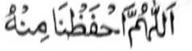
Ya Allah na lidasen kami Ngka san!
Hadith — 9

Miyakathitayan ko Abdullah bin Omar (Radkiallako Anhoma) a pitharo iyan a pitharo o Rasulollah (Sallalloho 'Alaihi Wasallam), “Petharo-on ko bolayoka o Quran (ko Alongan a Qiyamat) a batiya ka na phagisegen ka den so pangkatan ka (ko Sorga), go batiya ka sa lagid den o kapembatiya-a ka si-i ko masa ngka sa Donya. Na mata-an! A aya khadarepa-an ka na si-i ko taman a kaposan reka a Ayaat a miyabatiya a ka. ”
So “bolayoka o Qur’an” na aya ma-ana niyan na so Hafiz. So Mulla ‘Ali Qari (Rahinatullahi ‘Alaihi) na inosay niyan sa malendo a giyangka-iya bantogan na isesenggay ko Hafiz, a giyangkai mambo a hafiz na kena ba so tao a giyabo a kapephangadi iyan a phagilay niyan so Soti a Kitab. Paganay ron, na sabap sa so katharo a ‘Bolayoka o Qur’an’ na aya mitotoro iyan na Hafiz, na ika dowa na aden a Hadith (a miya-loy ko kitab a Musnad Ahmad)

Taman sa batiya-an niyan so nganin (a ped ko Qur an) a madadatem rekaniyan.
Giyangaka-iya a katharo na marayag a aya mitotoro iyan a Hafiz, ogaid na so tao a lalayon niyan pembatiya-an so Qur an na khapakay pen a mirakheson.
Miya-aloy ko (kitab a) Mirqat a giyangka nan a Hadith na di niapapatot ko pababatiya a ipephaninta o Qur’an. Minibagera-i ko Hadith a madakel a pababatiya sa Qur’an a pembatiya-an niran so Qur’an ogaid na so Qur’an na ipephamangeni niyan siran sa marata. Sabap roo na, so kaperabatiya-a o tao ko Qur’an a di matitiyulin so Aqa-id (ma-ana so paratiyaya) niyan na kena ba oto kasarigan a tiyarima (so amal iyan) o Allah. Madakel a Hadith a lagada-i a manonompang ko manga ‘Khawarij’ [Sagorompong a somiyopak ko Hadhrat ‘Ali (Radhiallaho ‘Anho)].
Si-i sangka-iya a osayan, na so Shah Abdul ‘Aziz (Rahmatullahi ‘Alaihi) na pitharo iyan a so katharo a ‘Tartil’ (a madadalem sangkanan a miya-aloy a Hadith) na aya ma-ana niyan sa basa na kabatiya a rakhes o mapiya ago maliwanag a koropan, ogaid na si-i ko titho a bitikan o Islam, na aya ma-ana niyan na so kabatiya si-i ko mapepento a manga okit a kati-i a pagaloyin:
(1) So manga batang o basa Arab na khoropen sa titho ka aden makatiyolin so kakoropa ko katharo sa lagid o mala a Ta na di milagid ko maito a Ta go so manga lagidaya a ibarat.
(2) So kadekha matiya ko manga pendekha-an, ka aden so kakhakampetan o di na kaposan o manga Ayaat na di matago ko di niyan darepa.
(3) So kakoropa phiya-piya ko I’rab (so gi-i zalinan o katharo pho-on ko kinisompat iyan o di na pho-on ko kiyadalem iyan ko kiya-okit o masa:
miya-ipos, kapapantagan, ago so dapen mitalingoma).
(4) So kiporo-on ko lago sa maito ka aden so manga katharo ko Qur’an a gi-i tharo-on o ngari na misampay ko manga tangila na kasabapan sa kararad iyan ko poso.
(5) So katiman o sigeng a lago sa okit a mapeno a kagedam sa maga-an a kararad iyan ko poso, sabap sa so sigeng a lago na maga-an a gi-i niyan kaperarad ko poso, go pephaka-onoton ago pekhabager iyan so paratiyaya.
So manga pamomolong na miyata-ayon siran sa opama ka so belong na phakaga-anen a kararadiyan ko poso, na tago-an sa kamot a nggolalan ko ikhakamotan, na opama ka so bolong na pakapheraraden ko atay na pakamisen sa tago-an sa gola sabap sa so atay na mababaya sa mamis. Giyoto-i sabap sa opama ka si-i ko masa a kambatiya na khakamotan so tao, na lebi a kakhararadi niyan ko poso.
(6) SoTashdid [ma-ana so kipekhipangkog o batang sabap ko kiyapakathondog o melagid a batang a aya mao-ona na so patay kiran a dowa], na khakorop phiya-piya sabap sa giya-i pephakarinayag ko kaporo o Qur’an na pephaka-oman ko kabager a rarad iyan.
(7) Lagid o kiya-aloy niyan sa miya-ona, a so poso o pembatiya na pephakigedamen niyan ko poso iyan so Ayaat a makatotoro sa limo o Allah ago so Ayaat a makatotoro sa siksa o Allah.
Giyangkanan a pito a manga bitikan na madidiyamongon so okit a kabatiya-a ko Qur’an, a bebethowan sa ‘Tartil’, go aya bo a antap angka-iya a miyanga-aaloy na so kira-ot ko titho a kasaboti ago so kaparoliya ko madalem a ma-ana o Qur’an a Soti.
So Hadhrat Umm-e-Salamah (Umm-ul-Mu’mineen) (Radhiallaho‘Anha) na miyaka-isa na iniza-an a antona-ai okit a kapembatiya-a o Rasulollah (Sallailaho ‘Alaihi Wasallam) ko Qur'an. Pitharo iyan, “Si-i ko okit a so manga sigeng o manga baris na tanto a maliwanag a kapezabota-on ago so koropan o manga batang na gi-i makathatadinisa.” Taralebi so kabatiya sa Qur'an phiya-piya apiya di zaboten so ma-ana niyan. So Ibn Abbas (Radhiallaho ‘Anho) na pitharo iyan a tomo-on niyan so kabatiya-a phiya-piya ko manga bababa a Sowar (manga Soorah) lagido Al-Qari’ah , o di na so IDHA ZULZILAT a di so kabatiya-a ko manga atas a Sowar lagid o Al-Baqarah go so Aali-‘Imran na di niyan kepephiya-piya-an.
So manga pananapsir ago so manga Mashaikh na inosay ran angkanan a miya-aloy a Hadith sa aya ma-ana niyan na, si-i ko omani Ayaat a batiya-an, na so pembatiya na ipangkat sa sapangkat so pangkatan niyan ko Sorga. Pho-on ko manga Riwayat o manga Hadith, a aya den a kadakel a pangkatan ko Sorga na saden sa kadakel a Ayaat ko Qur’an a Soti. Giyoto-i sabap a so pangkatan o tao na iphangkat ko pangkatan si-i ko Sorga sa lagid o kadakei a Ayaat a minilangag iyan. Sabap ro-o na so tao a minilangag iyan so Qur’an na aya phakaparoli sa pithamanan na maporo a pangkatan ko Sorga.
Pitharo o Mulla Ali Qari (Rahmatullahi ‘Alaihi), a miya-aloy sa isa a Hadith a da-a pangkatan ko Sorga a ba niyan kalawani so pangkatan a imbegay ko pembatiya sa Qur’an. Giyoto-i so pababatiya na phamanik so pangkatan niyan ko takes o kadakel a Ayaat a miyabatiya iyan si-i sa Donya. So Allama Dani (Rahmatullahi ‘Alaihi) na pitharo iyan a so manga Olama na miyata-ayon siran sa nem nggibo a manga Ayaat ko Qur’an. Ogaid na mbaram-barang a panarima ko pira-i kapakasosobra niyan ko nem nggibo. Giya-i ma mbaram-barang a kiyapanotholaon o di 204, 14, 19, 25, 36.
Misosorat ko (kitab a) Sharah-ul-ihya a omani isa a Ayaat na sapangkat mambo ko Sorga. Sabap ro-o na so pembatiya na petharo-on non a pephanik den ko tenday o kapembatiya iyan. So tao a miyabatiya iyan so langon o Qur an
na khira-ot ko pithamanan a pangkatan ko Sorga. So peman so ayabo a katawan niyan na so saba-ad ko Qur’an na khira-ot ko lagid iyan mambo sa takes a pangkatan. So kakampet iyan na so pangkatan a khara-ot na aya takes iyan na so kadakel o Ayaat a miyabatiya.
Si-i ko sabot aken non, na giyangkanan a Hadith na mbaram-barang a ma-ana niyan.

[Opama ka so panarima aken na benar na pho-on ko (taufiq o) Allah, o peman o ribat, na pho-on raken ago pho-on ko Shaitan, sa angiyason so Allah ago so Nabi Niyan.]
Aya pamikiran aken non na so manga pangkatan a miya-aloy sangka-iya a Hadith na kena ba sekaniyan so miyatendo o kadakel o Ayaat a mbatiya-an, ma-ana omani isa a Ayaat a mabatiya, na so pangkatan na ipangkat mambo sa sapangkat, melagid o kiyaphiya-piya-an matiya antawa ka da. Ogaid na giyangka-iya a Hadith na aya mitotoro iyan na salakao a kipangkat a si-i matatago sa darem a mitotompok ko kabatiya melagid o kiyaphiya-piya-an antawa ka da. Giyoto-i sabap a so tao na phakabatiya-an sa lagid den o okit a kapembatiya iyan sangka-iya kapaginetao sa donya. So Mulla ‘Ali Qari (Rahmatullahi ‘Alaihi) na miya-aloy pho-on sa isa a Hadith a, so tao na pembanya-an niyan so Qur’an lalayon si-i ko kawiyag-oyag iyan na khatademan niyan ko Alongan a Maori, ka odi niyan katademi na khalipatan niyan. Ogopan tano o Allah ro-o. Madakel reketano a minilangag iyan so Qur’an ko kaito iran pen sabap ko panagontaman o mbala a lokes iran, ogaid na sabap ko kadarainon ago kada-o siyap iran, na kiyalipatan niran ko kinitolod o omor iran. Miya-aloy sa isa a Hadith a so tao a matay a gi-i meromasay ago gi-i managontaman sa kilangagen niyan ko Qur’an na ithapi sekaniyan ko manga Huffaz. So limo o Allah na da-a tamana iyan. Patot so kambanoga tano ron. Lagid o katharo o maongangen:

Hay Shahidi! So manga Limo Iyan na pilagi-lagidan o langon (o ka-aden). Di kaon den mapapas opama ka seka na patot reka.
Hadith - 10
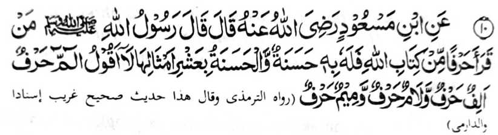
Miyakathitayan ko Ibn Mas’od (Radhiallaho ‘Anho) a pithaw iyan a pitharo o Rasulollah (Sallallaho ‘Alaihi Wasallam), “Sa tao a matiya sa satiman bo a batang ko Qur’an na bagi-an niyan so isa a mapiya, na so isa a mapiya na thakepen sa makasapolo. Kena ba ko pitharo a so [ Alif Lam Mim ] na ba isa a batang, ka so Alif na isa a batang, naso Lam na isa a batang, go so Mim na isa a batang. ”
Giyangka-iya a Hadith na tiyangked iyan a kagiya, aya kalalayaman na so ‘ Amaal na aya kakhaparoliya ko balas iyan na amay ka matarotop [sa lagid o Sambayang a aya kakhakowa-a ko balas iyan na amay ka minggolalan so langon o rak’at iyan. Ogaid na giyangka-iya Hadith na inaloy niyan a so Qur’an na kena ba oto lagid, ka apiya bo so saba-adon-i mabatiya a ka na mbalasan den. Sabap ro-o, na so kabatiya-a ko omani isa a batang na ipagitong sa isa a mapiya. Go so omani isa a mapiya na thakepen sa sapolo, sa lagid den o kinidiyandi-in non o Allah.
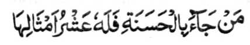
"Sa tao a mitalingoma niyan so mapiya na aden a bagi-an niyan a sapolo a manga lagid iyan (a manga pipiya)...” [Surah Al-An’Aam. 160]
Ogaid na so sapolo takep na giyoto-i pithamanan a mababa a khabaloyan non.
"...Na so Allah na pethake-tekepen niyan ko tao a kabaya Iyan.." [Surah Al-Baqarah:261]
So pizatimanan o Ayaat sa Qur’an, igira biyatiya, na mini-itong sa isa a mapiya, na miya-osay o Rasulollah (Sallallaho ‘ Alaihi Wasallam) ko kiyatharo-a niyan sa so [Alif Lam Mim] na kena ba isa a batang, ka so Alif so Lam so Mim na telo a mbida-bida a manga batang, sa so [Alif Lam Mim] na telo polo a mapiya. Miyakam-bida-bida so panarima o manga Olama o ba so [Alif Lam Mim] na giyoto so po-onan o Soorah Al-Baqarah o di na giyoto so ALAM a po-onan o Soorah Al-Fil. Opama ka giyoto so po-onan o Soorah Al-Baqarah, na telo-telo a batang a miya-itong, sa lagid o kisosorat iyan san. O peman o giyoto so po-onan o Soorah Al-Fil na so Alif Lam Mim a po-onan o Soorah Al-Baqarah na mimbaloy a siyao a batang. Sabap ro-o na minbaloy so balas iyan a siyao-polo a mapiya.
So Baihaqi (Rahmatullahi ‘Alaihi) na miya-aloy niyan a isa a Hadith a lagid den sa ma-ana anggkanan a miya-aloy a Hadith, ma-ana, “kena ba ko pitharo a so Bismilllah na ba satiman a batang, ka tiyangked aken a so Ba, so Sin ago so Mim, go so manga ped iran, na mbida-bida a manga batang.
Hadith -11


Miyaknthitayan ko Mo’az Johanie (Rndhiallaho ‘Anto) a pitharo iyan a pitharo o Rasulollah (Sallallato ‘Alaihi Wasallam), “Sa tao a matiya sa Qur’an yo inggolalan niyan so madadalemon [a sogo-an] na sangkadan so mbala a lakes iyan sa sanykad ko Gawi-i a Qiyamat a matihaya a di so alonyan opama baden matago ko walay [o isa rekano] sa donya. Na antona-a i pandapat iyo ko [tao a] sekaniyani minggolalan sangkanan [a manga sogo-an]?”
Sabap ro-o, na pho-on ko kalbihan ago kabarakat o kapembatiya-a niyan ko Qur’an ago so kininggolalanen niyan non, na so mbala a lokes iyan na zangkadan sa bantogan, a aya katihaya niyan na matihaya a di so alongan apiya giyangkanan a alongan na [pakaranin] sa tago-on ko walay o tao. So alongan na tanto reketano a mawatan ogaid na so sindao niyan na tanto a mabager. Opama ka so alongan na tomepad ko walay o tao, na so katihaya niyan na mapethake-takep. So katihaya o sangkad a khisangkad ko mbala a lokes o pababatiya na lawan non pen sa katihaya. O giya-i ididiyandi ko mbala a lokes, na antona-i balas a khakowa o pababatiya? Mata-an a opama ka so waris na mala-a khakowa niyan, na so balas o sekaniyan a kiyasabapan non na lebi a mala. So mbala a lokes na miyakakowa siran sa balas sabap bo sa siran-i kiyasabapan sa kiyatago sa donya angkoto a wata ago siran-i miyakapaganadon sa ‘Ilmo.
Ped ro-o pen sangkoto a katihaya o alongan a phagomareg amay ka matago ko walay o tao, na giyangka-iya ibarat na aden pen a madalem a zaboten non. So babaya ago so kitompok ko satiman a nganin na pephagomareg si-i ko tenday a katatago iyan ko tao. Sabap ro-o na so katawi sa so alongan na man-dikatawan sabap ko kawatan niyan, na khasambi-an sa babaya sabap ko kiyapakarani niyan lalayon ko tao. Giyoto-i sabap, a ped ko kiniropa-an ko katihaya angkoto a sangkad, na giyangka-iya Hadith na piyaka-ilat iyan so babaya sangkoto a
sangkad ago so kala a kakhaso-at o tao. Omani isa na gj-i makanggona ko alongan, oga-id na o baden began sa sakatao, na anda taman-i kakhababaya iyan.
So Hakim (Rahmatullahi ‘Alaihi) na miyapanothol iyan a pho-on ko Buraida (Radhiallaho ‘ Anho) a katharo o Rasulollah (Sallallaho ‘Alaihi Wasallam), “Sa tao a batiya-an niyan so Qur’an taros a inggolalan niyan na pakapezangkaden sa sangkad a ayaden a piyakandama-i na sindao go so mbala a lokes iyan na pakapenditaren sa nditaren a mala-i arga a di so donya.” Tharo-on niran, “Ya Allah! Ino kami makapenditar sa lagida-i?” Isembag kiran, “Sabap ko kiyabatiya-a o wata iyo ko Qur’an.”
Miya-aloy ko [kitab a] Jama-ul-Fawa-id o Tibrani (Rahmatullahi ‘Alaihi) a so Hadhrat Anas (Radiallaho ‘Anho) na piyanothol iyan a katharo o Rasulollah (Sallallaho ‘Alaihi Wasallam), “Saden sa ipangenda-o niyan so kabatiya a ko Qur’an ko wata iyan a mama (apiya da niyan milangag), na so langon o dosa niyan, melagid o miya-ona o di na da pen mitalingoma, na palayaden perila-an, na sa peman sa paki langag iyan so Qur’an ko wata iyan na pagoyagen sekaniyan ko Gawi-i a Kaphangokom sa lagid o katihaya o ika pat a talin ko ayag; na so wata iyan na tharo-on non a pho-on den matiya [sa Qur’an], na omani isa a Ayaat a mabatiya o wata iyan na ipangkat mambo so pangkatan niyan (a ama iyan) sa sapangkat ko Sorga, taman sa matamat so Qur’an.”
Giyanan man-i manga kalbihan ko kipangenda-on ko Qur’an ko manga wata iyo. Kena ba giya-i bo. Aden pen a salakao ron. [Phangenin aken a] di pakinggola ola o Allah, opama papasa ngka ko wata aka so Timo ko Agama sabap bo ko maito a nganin, na kena ba bo aya miyapapas ka on na so tanitiyasa a balas ka zomariya angka pen sa hadapan o Allah. Ba di kena a pephapasen ka so pekhababaya-an ka a wata a ka ko kabatiya-a ko Qur’an sabap ko kawan ka sa so langon a manga Ulama ago so manga Huffaz ko oriyan o kilangagen niran ko Qur’an na mimbaloy siran a mangandaki balas ko salakao kiran? Tatademi ngka a kena ba giyabo a kinisanggaren ka ko manga wata a ka ko tanitiyasa a kamboko ka miyaka-aden kapen ko manga waga ngka sa mapened a somariya. So Hadith a:

Omani isa rekano na pephagipat go omani isa rekano na pagiza-an ko pephagipaten niyan.
Na aya ma-ana niyan na omani isa na pagiza-an ko langon o kamimilikan niyan ago manga ta-alok rekaniyan o anda taman-i kiyazinanadan niyan kiran ko Agama. Mata-an a so tao na siyapa niyan a ginawa niyan ago so manga ta-alok rekaniyan sangka-iya a manga karibatan. So [thigon o pananaro-on] “Ino ba pagenda-i o tao so nditareh niyan sabap sa kalek ko manga tom?” Di, ka so tao na paliyogaton so kasosotiya niyan ko manga nditaren niyan. O zinanada ngka so manga wata a ka ko Agama na miyapokas ka ginawa ngka sangka-iya a atas-tanggongan. Si-i ko tenday o kawiyago-yag angkoto a wata, na apiya antona-a mapiya ‘amal-i manggalebek iyan, go so sambayang a ipenggolalan niyan ago so kapangeni sa rila si-i ko Allah a gi-i niyan nggola-ola-an pantag reka, na pephakaporo oto ko daradat ka si-i ko Sorga. Pantag bo sangka-iya kapaginetao ago so maito a arga, na biyaloy ngka so wata aka a da-a meleng iyan ko Agama, na kena ba giyabo a kipemboko-on ka sangka-iya a karibatan ka so langon o khasogok iyan a marata ago manga dosa niyan na di ka on makalilidas. Sabap bo ko soa-soat ko Allah, na kapedi-in niyo so manga ginawa niyo. Giyangka-iya a kawiyag-oyag na baden sagad go so kapatay na thago-an niyan sa tamana so langon o maregen, apiya-i kala iyan, ogaid na so kamboko a da-a tamana iyan, na tani-tiyasa.
Hadith — 12
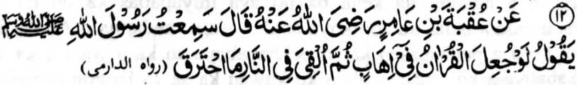
Miyakathitayan ko ‘Uqbah bin 'Amir (Radhiallaho ‘Anho) na pitharo iyan, ‘Miyaneg aken so Rasulollah (Sallallaho ‘Alaihi Wasallam) a gi-i niyan
tharo-on, ‘Opama tago-a so Qur'an ko kobal oriyan niyan na totongen ko apoy na di niyan khatotong.'"
So manga Ulama sa hadith, na tiyapsir iran angka-iya a hadith sa dowa a okit. So sabagi na aya dena kinowa niyan na so ma-ana o kobal ago so apoy. Sabap si-i na giyangka-iya a Hadith nn minotoro iyan angkoto a isa a miyanggola-ola mo-odizat ko masa o Rasulollah (Sallallaho 'Alaihi Wasallam) sa lagid den o manga mo-odizat n miyanggola-ola ko mans o manga miyanga o-ona n manga Nabi. Si-i ko ika down a okit, na aya inipema-ana iran ko kobal na so kobal o manosiya na so apoy na so apoy ko Naraka. Mimbaloy a langkap a miyapema-ana angka-iya a Hadith kena bn si-i bo ko mapepento a masa. Aya ma-ana niyan na opama ka aden a Hafiz a maolog sa Naraka sabap ko miyanga-oona dosa niyan na di sekaniyan kapheraradan o apoy ko Naraka. Si-i ko isa a Hadith na miya-aloy ron a so apoy ko Naraka na di niyan pen khasekho angkoto a tao. Giyangkanan a ika dowa a tapsir angkanan a Hadith na miyabager o isa a Hadith a piyanothol o Abu-Umamah (Radhiallaho ‘Anho) ago misosorat ko kitab a Sharah-ul-Sunnah o Mulla Ali Qari a pitharo iyan, “Langagen niyo so Qur’an, sabap sa so Allah na di Niyan ziksa-an so poso a kadadaleman sa Qur’an.” Si-i ko manga ma-ana niyan na giyangka-iya Hadith na tanto a marayag ago biyager o Qur’an. So langon o tao a aya katawi ran non na so kilangagen ko Qur’an na da-a kipantag iyan na, sabap ko soa-soat ko Allah, na pamimikirana niyan angka-iya manga kalbihan. Giyangkanan a miya-ori ma-aloy a Hadith na kiyatang ka-an den a makasogo ko omani isa ko kisenggay niyan ko ginawa niyan ko kilangagen ko Qur’an, sabap sa da-a isa bo a ba da madosa a baon da mapatot so apoy ko Naraka.
Si-i ko [kitab] a Sharah-ul-ihya na isosoraton a manga tao a phakasirong ko atag o Limo o Allah sangkoto a piyakalek-lek a Gawi-i a Kaphangokom. Miya-aloy ron a, pitharo o isa a Hadith, a piyanothol o Hadhrat ‘Ali (Radhiallaho ‘Anho) a minggolalan ko Dailmi (Rahmatullahi ‘Alaihi) a so manga tao a somisiyap ko Qur’an, ma-ana minilangag iran so Qur’an, na khatago siran sa linding o Allah, a ped iran so manga Nabi ago so manga barasimba a manga tao.
Hadith -13

Miyakathitayan ko Hadrat ‘Ali (Radhiallaho ‘Anho) a pitharo iyan a pitharo o Rasulollah (Sallallaho ‘Alaihi Wasallam), “Sa too a batiya-an niyan so Qur'an taros a milangag iyan, go pakahalalen niyan so piyakahalal o Qur’an, go pakaharamen niyan so piyakaharam o Qur’an, na pakasoleden sekaniyan o Allah ko Sorga go phakasapa-at sa sapolo ko manga ta-alok rekaniyan a siran noto na sabenar a miyapatot kiran so Naraka. ”
Sabap ko limo o Allah, na so kapakasoled ko Sorga na matatangked a bagi-an o omani miyaratiyaya makim pen mata-alik ko oriyan o kisiksa-an non ko manga dosa niyan. Ogaid, na so Hafiz na phakasoled sekaniyan ko Sorga si-i pen ko paganay. So sapolo a manga tao a khasapa-at iyan na giyoto so manga baradosa a manga Muslim, a miyakasogok siran sa manga ala a dosa. Da-a sapa-at a bagi-an o manga Kafir. So Allah na miyatharo Iyan:

'...Mata-an naya a saden sa mba-al sa sakoto o Allah na sabenar a hiyaramon o Allah so Sorga go darepa iyan so Naraka. Na da-a bagi-an o manga darowaka a phamakatabang." [Surah Al-Maidah:72]

"Da mapatot ko Nabi ago so siran a Miyamaratiyaya i ba iran phangenin sa ma-ap so manga pananakoto ma piya pen-i katotonganay ran non..." [Surah At-Taubah:113]
Giyangakanan a manga Ayaat sa Qur’an na rininayag iran a so manga Mushrikin [pananakoto] na diden perila-an. So sapa-at o manga Huffaz na si-i bo ko manga Muslim a aya kiyatago iran ko Naraka na sabap ko manga dosa iran.
So kena ba manga Huffaz, ago di ran khilangag so Qur’an na aya minos na senggay sekaniyan sa isa ko manga sisipeg iyan sa makalangag sa Qur’an ka oba kalo-kalo na sabap ko Gagao Niyan na malinding sekaniyan ko manga dosa niyan.
Patot so kapephanalamati ko Allah sabap ko limo Iyan sangkoto a tao a so ama iyan, so manga bapa iyan ago so manga ama iyan a dato ko mbala a lokes iyan na palayaden Huffaz. [Giya-i na miyaparoli angka-iya lokes tano a mizorat sangka-iya kitab. Ikalimo sekaniyan o Allah sa lebi a madakel]
Hadith -14
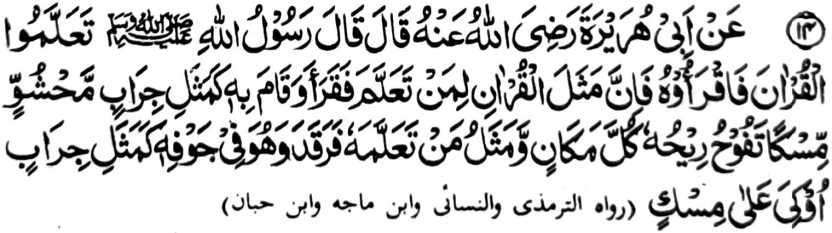
Miyakathitayan ko Abu Hurairah (Radhiallaho Anho) a pitharo iyan a pitharo o Rasulollah (Sallallaho Alaihi Wasallam), “Paganada niyo so Qur’an go batiya-a niyo sekaniyan ka mata-an a aya ibarat o Qur’an ko tao a miyaganadon ago pembatiya-an niyan ago gi-i niyan ipamayandeg [ko Sambayang]
na lagid o tago-ay sa mamot a kaleleka-an so ngari iyan na phelangkap so kanayo iyan ko mbala-bala, go aya ibarat o tao a piyaganad iyan sekaniyan [a Qur'an] a makatotorog a so rareb iyan na ndodon sekaniyan [a Qur'an] na lagid o tago-ay sa mamot a so ngari iyan na kalelekheban. ”
Aya ma-ana niyan na aya ibarat o tao a piyaganad iyan so Qur'an na taros a siniyap iyan ago pembatiya-an niyan ko Sambayang a Tahajjud na lagido tago-ay sa mamot a opama leka-i ngka so ngari iyan na giyangkoto a walay na khapeno o kanayo iyan. Sakamaoto, a so walay na khapeno a sindao ago manga pipiya misabap sa kapembatiya o Hafiz. Apiya pen baden makatotorog so Hafiz o di na di sekaniyan mbatiya sabap sa kadarainon, na so Qur’an a madadalem ko poso iyan na aya mamot. Giyangka-iya kadarainon na aya mini onga niyan na madakel a kiyapapasan ko manga kalbihan o Qur’an, ogaid na so poso iyan, na madadalemon so kamot o Qur’an.
Hadith -15
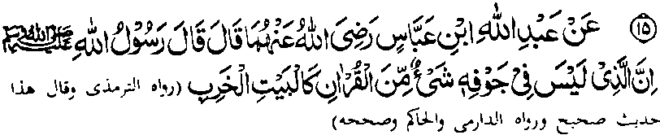
Miyakathitayan ko Ibn Abbas (Radhiallaho ‘Anhoma a pitharo iyan a pitharo o Rasulollah (Sallallaho 'Alaihi Wasallam), “Mata-an a so sikanian a daden a madadalem ko rareb iyan a maito bo a ped ko Qur’an na lagid o walay a inawa-an. ”
So abaya-bayan ko inawa-an a walay na madalem-i ma-ana, a miya-aloy o isa a pananaro-on a “so pamikiran o mama a da-a galebek iyan na limbaga o shaytan” (ma-ana so shaytan na pekhipa-ar iyan so walay a inawa-an). Sakamaoto a so poso a daden a matatago-on a ped ko Qur’an, na pephagomareg a kapekhakowa-aon o shaytan. Tanto a mapiya a osayan a madadalem sangka-iya Hadith pantag ko kilangagen ko Qur’an,
a so poso na da niyan maparoli so Qur’an na ini-ibarat sa walay a inawa-an.
So Hadrat Abu Hurairah (Radhiallaho ‘Anho) na pitharo iyan, “Si-i ko walay a pembatiya-an non so Qur’an, na pephagoman [so bilangan] o manga tao ron, so balas ago so manga pipiya na gi-i mathake-takep, so manga Mala-ikat na pethoron kiran na so shaytan na phagawa-on. So peman so walay a di ron khabatiya so Qur’an, na so kapephaginetao ron na pephakasimpit ago pekhapapason so manga pipiya go phagawa-on so manga Mala-ikat ago so shaytan na pembalingan niyan.”
So Hadrat Ibn Mas’ud (Radhiallaho ‘Anho) ago so saba-ad ko manga ped iyan na miyapanothol iran so Rasulollah (Sallallaho ‘Alaihi Wasallam) a miyatharo iyan a aya walay a inawa-an na giyoto so di ron khabatiya so Qur’an.
Hadith -16
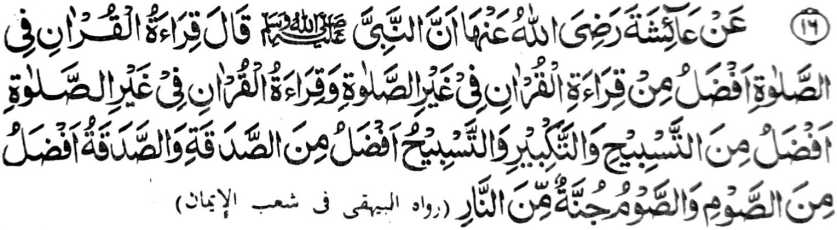
Miyakathitayan ko A’isha (Radhiallaho ‘Anha) a pitharo iyan a mata-an a so Nabi (Sallallaho Alaihi Wasallam) na pitharo iyan, “So kabatiya-a ko Qur'an si-i ko soled o Sambayang na makalelebi ko kabatiya-aon si-i ko liyo o Sambayang, so kabatiya-a ko Qur’an ko liyo o Sambayang na makalelebi ko Tasbih go so Takbir, na so Tasbih na makalelebi ko Sadaqah, na so Sadaqah na makalelebi ko powasa, na so powasa na rending ko apoy. ”
So kapakalelebi o kapembatiya-a ko Qur’an ko manga Dhikr na tanto a marayag sabap sa so Qur’an na katharo o Allah.
Lagid o kiya-aloya on ko paganay, a aya kapakalelebi o Katharo o Allah ko langon o manga katharo a salakao na lagid o kapakelelebi Niyan ko langon o ka-aden Niyan. So kapakalelebi o Dhikr ko Sadaqah na madakel a kiya-aloya non a Hadith. Ogaid na so kapakalelebi o Sadaqah ko powasa a miya-aloy sangka-rya Hadith, na lagid o ba niyan miyasopak so manga ped a Hadith a so powasa na taralebi a di so Sadaqah. Giyangkanan a kiyapakambida iran na sabap ko mbida-bida-an o manga tao ago so betad o kapephaginetao iran.
Miya-aloy sangka-iya a Hadith a so powasa na aya mori-pori ma-aloy. Opama ka so powasa a rending ko apoy ko Naraka, antona-ai pamikiran tano ko manga kalbihan o kapembatiya-a ko Qur’an.
So mizorat ko ‘Ihya’ na piyanothol iyan a miyakathitayan ko Hadrat ‘Ali (Radhiallaho ‘Anho) a omani isa a batang a mabatrya na kapadadaleman sa magatos a mapiya a bagi-an o tao a pembatiya-an rriyan so Qur’an ko masa a ititi ndeg iyan so Sambayang, lima polo a mapiya a bagi-an o tao a pembatiya-an niyan so Qur’an ko masa a kao-ontod iyan ko Sambayang [aden a okit a kazambayang a mo-ontod so tao lagid o pekhasakit], dowa-polo ago lima a bagi-an o tao a pembatiya sa madadalem sekaniyan a abdas, sapolo a bagi-an o tao a pembatiya-an niyan so Qur’an a da-a abedas iyan [mbida so kabatiya ago so kapangadi a totolongan so Qur’an], ago isa a bagi-an o tao a di niyan mbatiya-an so Qur’an ka baden pephamamakineg.
Hadith-17
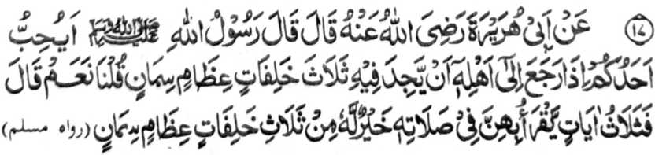
Miyakathitayan ko Abu Hurairah (Radhiallaho ‘Anho) a pitharo iyan a pitharo o Rasulollah (Sallallaho ‘Alaihi Wasallam), “Ino ba kabaya o isa rekano a amay ka maling ko manga ta-alok rekaniyan
na ay a kaoma-an niyan ro-o na telo a manga o-ogat, go manga ka-olit a babay a onta? Pitharo ami, ‘Oway." Pitharo iyan, “So telo a Ayaat sa Qur'an a batiya-an o isa rekano ko Sambayang iyan na taralebi rekaniyan a di so telo a manga o-ogat, go manga ka-olit a babay a onta. ”
Aden a lagida-i a osayan a miniropa si-i ko Hadith a ika 3. Si-i sangka-iyaa Hadith na aden a inaloy ron a osayan ko kapembatiya-a ko Qur’an si-i ko Sambayang a taralebi a di so kapembatiya-a on igira kena ba kazambayang. Giya-i sabap a aya kiniropa-an non na inilagid sa maogat a babay a onta. Aya sabapa-i na, si-i ko isa a sabap, na mitotoro iyan so dowa a kalbihan: so Sambayang ago so kabatiya, na si-i ko ika dowa sabap na aya miya-aloy ron na dowa a nganin: so kababaloy niyan a babay a onta ago so kaogat iyan. Miya-aloy si-i ko soled o Hadith a ika 3 a so manga Hadith a lagida-i na pantag bo sa abaya-bayan, ka so tani-tiyasa a balas o isa bo a Ayaat na mala-i arga a di so nggibo-nggibo a manga babay a onta a palayaden phatay.
Hadith - 18
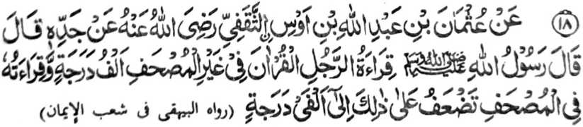
Miyakathitayan ko ‘Uthman bin Abdullah bin Aus Ath-Thaqfi a piyanotholon o ama iyan a datu a pitharo iyan a pitharo o Rasulollah (Sallallaho ‘Alaihi Wasallam), “So kapembatiya-a o mama ko Qur'an a pho-on sa langag iyan na sanggibo a daradat a pangkatan niyan. So kapembatiya iyan sa Qur’an a phagilayn niyan so kitab na pekhatakep iyan so daradat iyan taman sa dowa nggibo pangkat."
Madakel a kalbihan o kababaloy o tao a Hafiz a miya-aloy den. Oga-id na sangka-iya Hadith a piyakataralebi niyan so kapephangadi-i ko kitab a Qur’an a di so kapembatiya-aon a pho-on ko kilalangagen non, sabap sa so kapangadi na kena ba giyabo a kapephakabegay niyan sa madalem a sabot ago kapamimikiran ka aden pen a madadalemon a manga ped a simba, lagido kalbihan o kaphagilaya ko Qur’an ago so kapekhakapeti ron go so manga ped iyan. So kiyapakambida-bida o marayag a ma-ana o manga Hadith na aya mini-onga niyan na so kiyapakadakel o mbida-ida-an a panarima o manga Ulama sa Hadith o so kapangadi-i ko kitab a Qur’an na ba taralebi ko kabatiya-aon pho-on sa langag. Pho-on ko sabap sangka-nan a miya-aloy a Hadith ago so kagiya igira pephangadi-an so kitab a Qur’an na pekhalidasan so manga karibat a rakhes o kalbihan o kaphagilaya ko kitab, na so saba-ad ko manga ‘Ulama na piyakataralebi ran so kapangadi-i ko kitab a Qur’an ko kapembatiya-aon pho-on sa langag. So peman so sabap a miya-aloy ko manga ped a Hadith ago sabap sa so kabatiya pho-on sa langag na kapapadaleman sa mala a panamar ago da-a baon Ria (kapaki-ilay-layn) ago giya-i okit a kapembatiya o Rasulollah (Sallallaho ‘Alaihi Wasallam), na so saba-ad ko manga ‘Ulama na piyakataralebi ran so kapembatiya a pho-on sa langag. So Imam Nawawi (Rahmatullahi ‘Alaihi) na tiyangked iyan a so kapakapelebiya angkanan a dowa a okit na si-i matatago ko tao. Aden a manga tao a mapiya a kapekhatekhes o ni-at iran ago kapephaka-pamimikiran iran igira aya iran pephangadi-an so kitab a Qur’an, na aden mambo a manga tao a aya kapiya a kapekhatekhes o ni-at iran ago kapephaka-pamimikiran iran na igira pembatiya siran pho-on sa langag. Giyoto-i sabap a so kapephangadi-i ko kitab na tomo-on o saba-ad, na so mambo so kapembatiya pho-on sa langag a tomo-on mambo so saba-ad. So Hafiz (Rahmatullahi ‘Alaihi) na miyaka-ayon mambo o sangka-iya osayan [a misorat iyan] ko kitab iyan a Fath-ul-Bari.
Miya-aloy a sabap ko kapanonobra o kapangadi sa Qur’an o Hadrat ‘Uthman (Radhiallaho ‘Anho) na miyakisi so dowa lekat ko Qur’an. So Amr-ibne-Maimun (Rahmatullahi ‘Alaihi) na miya-aloy niyan ko kitab a Sarah-ul-ihya, a so tao a okaben niyan so Qur’an ko oriyan o Sambayang a Fajr (Sobo) na
mangadi sa magatos a Ayaat na makaparoli sa balas a mala a di giyangka-iya a donya. So kapangadi-i ko kitab a Qur’an na miyapanothol a ikapiya o mata. So Hadrat Abu Ubaidah (Radhiallaho 'Anho) na miya-aloy niyan a matasa Hadith a omani isa ko miyanothol na pitharo iyan a aden a sakit o mata niyan na so goro niyan na inipando iyan non a kapangadi-i niyan ko Qur'an sa phagilayn niyan so kitab. So Hadrat Imam Shafi-e (Rahmatullahi ‘Alaihi) na aya ola-ola niyan na okaben niyan so kitab a Qur’an ko oriyan o Sambayang a ‘Isha na maonto a lekheban niyan ko kaga-an katalingoma o Sambayang a Fajr.
Hadith -19
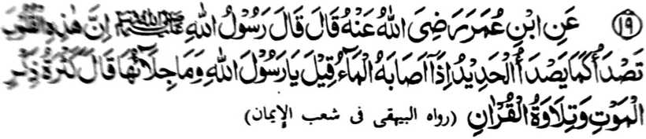
Miyakathitayan ko Ibn ‘Umar (Radhiallaho Anhoma) a pitharo iyan a pitharo o Rasulollah (Sallallaho ‘Alaihi Wasallam), “Mata-an a giyangka-iya a manga poso na pethangisen sa lagid o kapethangisa ko potao igira miyasogat a ig. Pitharo iran, “Ya Rasulollah, antona-ai phalalas son?” Pitharo iyan, ‘So kapakandakela ko katatademi ko kapatay ago so kapembatiya-a ko Qur’an. ’
So kitaralo o kandosa ago so kindarainonen ko taden-tadem ko Allah na gi-i thangis so poso, sa lagid den o potao a gi-i niyan kathangis misabap ko ig. So kapembatiya-a ko Qur’an ago so taden-tadem ko kapatay na mapephakatihaya niyan so poso a thatangis. So poso na lagid o pagalongan. O di masizing, na di niyan kha-along so sagipa ko Allah. Saden sa katihaya ago kasinao niyan, na kapiya a kakhailaya niyan ko sindao. Giyoto-i sabap a saden sa kisaled tano ko nenga ago so manga rarata a ola-ola, na giyoto den-i kinitaralo o di tano kakhainengka-a ko Allah. Sabap ko kepit a kasinao o pagalongan o poso a so manga Auliya na ipapaliyogat iran ko manga morit iran ko gi-i ran
kaperomasay sa kasoti ago kagenggena iran ko manga ginawa iran go so kanggalebek iran sa manga simba, go so taden-tadem ko Allah.
Miya-aloy ko saba-ad a manga Hadith a igira miyadosa so tao na katago-an sa maitem a daket so poso iyan. O thaobata niyan noto na mada-on angkoto a daket, ogaid na o baden madosa pharoman na kiyatago-an sa isa peman a daket. O giya-i den-i mikalilidon a gi-i niyan kandosa na so poso iyan na langon maka-item. Sa manaya na so poso iyan na biyokel den ko kanggalebek sa mapiya ago si-i mizoramig ko kanggalebek sa marata.
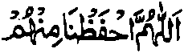
Ya Allah! na lidasen kami Ngka rekaniyan.
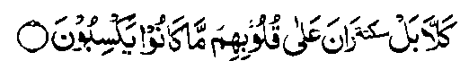
"...Sabenar, a kena, kami-tha-ab ko manga poso so pinggalebek iran (a dosa)?” [Surah Al-Mutaffifeen:14]
Miya-aloy ko isa a Hadith a so Rasulollah (Sallallaho ‘Alaihi Wasallam) na pitharo iyan, “Miyagak ako sa dowa a Pephangosiyat - so isa na gi-i makatharo na so ika dowa na di petharo. So gi-i ron makatharo na so Qur’an na so di petharo na so katatademi ko kapatay.”
Mata-an a so manga katharo o Rasulollah (Sallallaho ‘Alaihi Wasallam) na patot so kaparatiyaya-aon. Ogaid na sobo so siran a phamamakineg phiya-piya-i maka-penggona ko manga wasiyat. O peman o aya paratiyaya tano na so Agama na da-a kipantag iyan a galebek ago pangalang ko kapaka-ozor, na di tano den magedam o ba tano kailangan sa wasiyat aya pen o ba tano nggolalanen.
So Hadrat Hasan Basri (Rahmatullahi ‘Alaihi) na pitharo iyan “So manga tao a miyanga-oona na paparatiyaya-an niran so Qur’an na sogo-an o Allah, na pephamimikiranen niran ko
mababasa gawi-i na gi-i ran inggolalan ko soled o kadaon-dao. Imanto na sekano na aya niyo pilalawana-an na so kakoropa ko manga batang iyan ogaid na di niyo paparatiyaya-an sa ba Sogo-an o Allah ago di niyo phamimikiranen.
Hadith - 20

Miyakathitayan ko A’isha (Radhiallaho Anha) a pitharo iyan a pitharo o Rasulollah (Sallallaho 'Alaihi Wasallam), “Matawan a si-i ko omani nganin na aden a mapiya-on a ipephangandag sekaniyan, na mata-an a aya pangandag o manga Ummat aken na so Qur'an. "
So manga tao na pephaki-ilay ran so kaporo irani daradat ago bantogan niran misabap ko bangensa iran, go so kadakel iran a mbata-bata-a ago so manga ped san a sabap. So Qur’an na aya kasasabapan ko kaporo ago pangandag o Ummat sabap sa so kapangadi iron, so kabatiya-aon, so kipangenda-o non, go so kinggolalanen non, so katimbel iyan na langon a mitotompokon, na pekhabegan niyan siran sa bantogan. Anda manaya-i di niyan kebebenar? Sekaniyan na Katharo o Pekhababaya-an ago Sogo-an o Datu. So daradat iyan na kao-ombawan niyan so langon o bantogan ko donya apiya-i kala iyan. So kakawasa-an sangka-iya donya, apiya-i kala iyan na, mathay maga-an, na khada, ogaid na so bantogan ago daradat o Qur’an na tani-tiyssa ago da katago-i sa tamana.
Giyabo angkoto a mababa ko manga sipat o Qur’an, na khapakay den a ipangandag, apiya giyabo angkoto a kapiya niyan ko manga ped a sarat, ibarat, o kapiya a kiyandiyator o basa niyan, so pakamemesa a kiyapaka-pagayon-ayon niyan, so kiyapento o titho a basa, so kiyasagogod o manga osayan, so totholan ko miya-ona a masa ago so dapen mitalingoma. So manga ongat-ongat iyan ko saba-ad a manga tao na diden khasangka, ibarat o katharo Iyan pantag ko manga Yahodi, a gi-i
ran tharo-on so babaya iran ko Allah, ogaid na di ran bo mapezinganin so kapatay. So pephamamakineg na tanto a pekhaliwanagan ko kapembtaiya-aon ago so pembatiya na di phakagedam sa dokao ko kapembatiya iyan. Kalalayaman a apiya-i kapiya o katharo o di na sorat a pho-on ko pagida-an a ikabibira-i o tao, na pendokawan non bo matiya ko oriyan o ika dowa polo taon matiya opama ka da taon dokawi ko ika sapolo taon matiya, o di na dokawan ta bo ko oriyan o ika pat-polo taon matiya opama ka da taon dokawi ko oriyan o ika dowa-polo taon matiya. Ogaid na o aden a milangag ta a maito bo ko Qur’an, na khapakay a makadowa-gatos ta mabatiya o di na pat-gatos mabatiya na taman pen ko tenday o omor ta, na di ron den masemo so tao. O aden pen a makaren non ko babaya ta on (matiya) na di bo oto mathay. Aya mata-an na saden sa kathay a kapembatiya-a ko Qur’an, na kala angkoto a babaya ago kapipiya ginawa taon. Opama ka aden bo a pira timan sangkanan a mapiya sipat a mato-on ko salakao a kitab, na patot so kabantoga tano ron. Opama ka langon angka-iya miya-aloy a sipat na mato-on ko isa a kitab sa tarotop, na mata-an patot so kapagadati ron sa katago-i ron sa pithamanan a maporo a bantogan ago mala a pangandag.
Imanto, na ilayn tano so mambebetad tano. Pira reketano-i pekhagedam iyan so kasoso-at igira nrinilangag iyan so Qur’an langon. Ino ba so manga Huffaz na paga-adatan si-i bo ko pangilay-layan tano? Phamli-in! so bantogan tano ago so pangandag tano na si-i madadalem ko pangkatan a makapopo-on ko manga poporo a paganadan (university), si-i ko manga poporo a gerar, si-i ko kanggaya-gomaya ko donya ago so kapaki-ilay-lain, ago si-i ko pathamo-tamokan, a palaya tano den khibagak ko oriyan o kapatay. Ya Allah!, kalimo-n kami Ngka.
Hadith - 21
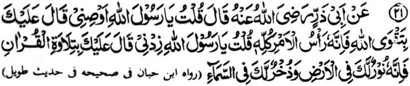
Miyakathitayan ko Abu Zar a pitharo iyan, ‘Pitharo aken a Ya Rasulollah (Sallallaho ‘Alaihi Wasallam), osiyati ako ngka!” Pitharo iyan, ‘Padalema ngka ko ginawangka so kalek ko Allah ka mata-an a sekaniyan-i olo o langowan o mapiya a galebek,”Pitharo aken a Ya Rasulollah (Sallallaho ‘Alaihi Wasallam), omani ngka raken!” Pitharo iyan, ‘Pembatiya-a ngka so Qur’an ka mata-an a sekaniyan na sindao ngka si-i sa donya go loto-o ka ko langit [Alongan a Maori]. ”
So kalek ko Allah na aya bekao o langon o mapiya a ‘amal. So tao a mipepeno ko poso iyan so kalek ko Allah, na di sekaniyan makapendosa ago di phakasagad sa maregen.
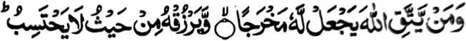
..Na sa tao a ikalek iyan so Allah, na senggayan Niyan sa milidas iyan ko maregen, go mbegan Niyan sa pageper a di niyan mapipikir.... [Surah At-Talaq:2-3]
Saba-ad ko miyanga-oona a manga Hadith na rininayag iran a so Qur’an na pephakabegay sa sindao. Si-i ko [kitab a] Sharh-ul-Ihya, na so Hadrat Abu Naim (Radhiallaho ‘Anho) na miya-aloy niyan a so Hadrat Basit (Radhiallaho ‘Anho) na piyanothol iyan pho-on ko Rasulollah (Sallallaho ‘Alaihi Wasallam) a so manga walay a pembatiya-an non so Qur’an na pezigay ko manga ka-aden sa langit sa lagid o kasigay o manga bito-on ko manga ka-aden ko lopa.
Giyangka-iya a Hadith, a inabat pho-on ko [kitab a] At-Targhib na baden sabagi ko matas a Hadith a miyapanothol a miyaka-po-on ko Ibn-e-Habban go inosay sa masagogod o Mulla ‘Ali Qari (Rahmatullahi ‘Alaihi) ago [inosay o] Suyyuti (Rahmatullahi ‘Alaihi) sa makampet. Minsan pen giyangkanan a miya-aloy ron kagiya na kiyasana-an den ko antap angka-iya kitab, ogaid na so kalangowan angka-iya a Hadith na aden pen a madakel a paliyogat ago mala-i gona a osayan, sa giyoto-i sabap, a giyangkanan a osayan na pagaloin ko oriyan na-i.
So Hadrat Abu Zar (Radhiallaho ‘Anho) na pitharo iyan a iniza-an niyan so Rasulollah (Sallallaho ‘Alaihi Wasallam) pantag ko kadakel o kitab a initoron o Allah. Inisembag o Rasulollah (Sallallaho ‘Alaihi Wasallam), “Magatos a maroni a kitab [sohof] ago pat a mala-a kitab. Lima polo a maroni a kitab a initoron ko Hadrat Shith (‘Alaihis Salaam), telo polo a maroni a kitab a initoron ko Hadrat Idris (‘Alaihis Salaam), sapolo a maroni a kitab a initoron ko Hadrat Ibrahim (‘Alaihis Salaam), sapolo a maroni a kitab a initoron ko Hadrat Mosa (‘Alaihis Salaam) ko ona-an o Taurat. Ped ro-o, so pat a manga ala a kitab, ma-ana so Taurat, so Injeel, so Zaboor, ago so Qur’an, a initoron o Allah.” So Hadrat Abu Zar (Radhiallaho ‘Anho) na ini-iza iyan o antona-ai madadalem ko maroni a kitab a initoron ko Hadrat Ibrahim (‘Alaihis Salaam). Pitharo o Rasulollah (Sallallaho ‘Alaihi Wasallam),
“Kapapadaleman sa manga pananaro-on, ibarat o ‘Hay sakatao a mabager ago takabor a datu! Kena ba Ko seka biyaloy a dato ka ba angka makapanimo sa tamok, ka [aya kiyabaloya reka a datu] anka maren so pangeni o kasasalimbotan sa di niyan Raken kira-ot a mibegay ngka on nggaga-an so kabenar iyan, sabap sa di Aken thapelisen so pangeni o tao a kiyasalimbotan apiya sekaniyan na kafir. ”
[Giyangka-iya a lokes tano a mizorat sangka-iya kitab na pitharo iyan a igira aden a biyaloy o Rasulollah (Sallallaho ‘Alaihi Wasallam) Amir o di na Gobernador ko manga Sahabah niyan, na ped ko manga pando-an niyan non, na lalayon niyan non gi-i pagosa-in:
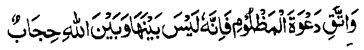
Kaleken ka so pangeni o kasasalimbotan ka mata-an a sekaniyan [a pangeni] na daden a let iyan ago so Allah a maito bo a rending.
Lagid o pananaro-on o sakatao a tag-a Persia:
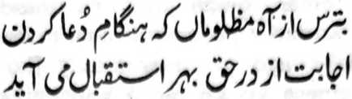
Iktiyari ngka so kaginawa sa mala o manga tao a kasasalimbotan, ko masa a kapephamangeni ran ka a-alaon a tarima o Kadenan
Giya pen angka-iya a manga roroni a kitab na inaloy ran pen a paliyogat ko tao a aden a ongangen niyan, so kabagi-a niyan ko masa niyan sa telo ba-ad Inonta bo o ba kada-i sa tanod: isa on so izimba niyan ko Kadenan niyan; ika dowa so iphamimikiran niyan ko ginawa niyan ko antona-ai miyanggalebek iyan a mapiya ago marata; na ika telo so iphaningkawiyagen niyam. Paliyogaton pen so katikay niyan ko masa niyan ago iphagawid iyan a akal so kaphagozor o betad iyan ago so kasiyapa niyan ko dila iyan ko da-a rarantek iyan ago da-a kipantag iyan a katharo. Sa tao a genggenen iyan so katharo iyan na so dila iyan na maito a mapetharo iyan a ilang a katharo.
Ped ro-o, na so manga tao a aden a ongangen niyan na aya bo a iphelalakao niyan na telo a sabap, giyoto so gi-i niyan kanggalebeka ko mapheloto iyan ko Alongan a Maori, so iphaningkawiyagen niyan, ago so piyakay o Agama a kambatalo.
So Hadrat Abu Zar (Radhiallaho ‘Anho) na ini-iza iyan peman o antona-ai madadalem ko maroni a kitab a initoron ko Hadrat Mosa (‘Alaihis Salaam). Pitharo o Rasulollah (Sallallaho ‘Alaihi Wasallam), “Kadadaleman sa manga thoma, ibarat o, ‘Pephamemesa ko, ko tao a pephakato-on pen sa kapipiya ginawa makim pen paparatiyaya-an niyan a matatangked so kapatay.” [Kalalayaman a amay ka so tao na katawan niyan so kambitina on na ko masa a miyatago sekaniyan sangkoto a pephamitinan na di den pen a kato-onan niyan sa kapipiya ginawa.] ‘Pephamemesa ko ko tao a pephakasinga pen makim pen paparatiyaya-an niyan ko katatangked o kapatay.’ ‘Pephamemesa ko ko tao a pekha-ilay niyan den so manga
pephamangitalemba, go so oman den a kapekha-alin o betad ago mosim o donya oman oman den, na masoso-aton pen,’ 'Pephamemesa ko ko tao a paparatiyaya-an niyan so Okoran na gi-i pen makamboko ago gi-i meromasay [ko kakowa-a ko donya].’ ‘Pephamemesa ko ko tao a paparatiyaya-an niyan a sekaniyan na zomariya-an na di pen penggalebek sa mapiya ‘amal.’
So Hadrat Abu Zar (Radhiallaho ‘Anho) na initaros iyan pen a miyangeni sa ped pen a wasiyat. So Rasulollah (Sallallaho ‘Alaihi Wasaliam) na piyando-an niyan sa kapamola-on o kalek ko Allah sabap sa giyangkanan-i bekao ago poonan o langon a simba. So Hadrat Abu Zar (Radhiallaho ‘Anho) na miyangeni peman sa ped pen a pando-an. Pitharo o Rasulollah (Sallallaho ‘Alaihi Wasaliam), “Tatapa ngka so kabatiya sa Qur’an ago so tadem ko Allah, sabap sa sindao ko donya ago loto [Zakirah] ko Akhirat.” So Hadrat Abu Zar (Radhiallaho ‘Anho) na miyangeni peman sa kaomanan so wasiyat na pitharo-on, “Thalenda-i ngka so kakhala sa mitataralo, sabap sa pekhalayon niyan so poso, ago pephakasalen ko [katihaya] o paras.” [So kitaralo o kakhala na phakabinasa ko mapayag ago masolen o tao]
So Hadrat Abu Zar (Radhiallaho ‘Anho) na miyangeni peman sa kaomanan noto, sa pitharo on o Rasulollah (Sallallaho ‘Alaihi Wasaliam), “Kepiti ngka so Jihad ka giyanan-i Rahbaniyyah [kapag-Auliya ko miyanga-oona a Ummat] ko manga Ummat aken.”
So Hadrat Abu Zar (Radhiallaho ‘Anho) na miyangeni peman sa kaomanan sa pando-an na so Rasulollah (Sallallaho ‘Alaihi Wasaliam) na pitharo iyan, “Pakimbolayoka ka ko manga miskin ago so manga pekhamer-meran, pakingginawa-i ka kiran ago si-i ka kiran tatapi.” Kagiya so Hadrat Abu Zar (Radhiallaho ‘Anho) na mangeni peman sa ped a pando-an na pitharo o Rasulollah (Sallallaho ‘Alaihi Wasaliam), “Aya phagilayan ngka na so manga kababa-an ka sa daradat (ka angka malayam sa kapanalamat) go di ngka phagilaya so kaporo-an ka sa daradat, ka amay-amay na di ngka matarima so manga limo reka o Allah.”
Kagiya so Hadrat Abu Zar (Radhiallaho ‘Anho) na pangenin niyan peman a kaomanan so pando-an non na pitharo o Rasulollah (Sallallaho ‘Alaihi Wasallam), “Baloya ngka so pa-awing ka a makaren reka sa kapha-awingi ngka ko salakao reka ago di ngka phagilaya so karibatan o manga ped, sabap sa miyasogok ka mambo oto. Kiyatangka-an so katawi ngka sa seka na miyasala a makaren reka sa kaphagilaya ngka ko manga karibatan o manga ped a apiya seka na zisi-i reka, a baden di ngka siran mai-inengka, a giyoto-i kiyasabapan sa kapekha-ilaya ngka sangkoto a manga karibatan a apiya seka na mapapadalem reka.” Oriyan noto na so Rasulollah (Sallallaho ‘Alaihi Wasallam) na initephi iyan ko rareb o Abu Zar (Radhiallaho ‘Anho) so lima niyan a mazisingayo sa pitharo iyan, “Hay Abu Zar! Da pen a ongangen a ba niyan kalawani so kambilanga tao, da a paratiyaya a ba niyan kalawani so kalidasi ko manga Haraam, ago da-a kaporo a bangsa a ba niyan kalawani so kapiya-i parangay.”
[Si-i ko kaphagaloya ko madadalem sangka-iya a matas a Hadith, na so antap ago so ma-ana niyan na aya mala a kiyabegan sa osayan, kena ba so ma-ana o pizatimanan a kalimah niyan.]
Hadith — 22

Miyakathitayan ko Abu Hurairah (Radhiallaho Anho) a mata-an a so Rasulollah (Sallallaho 'Alaihi Wasallam) na pitharo iyan, “Da ko kathimo-timo o manga tao si-i ko walay a ped ko manga walay o Allah a pembatiya-an niran non so kitab o Allah ago gi-i ran ipamagenda-owa a ba di tomoron kiran so Sakinah (kalilintad o mokarna) go mibongkos kiran so Rahmat
go libeten siran o manga Mala-ikat go ipangandag siran o Allah ko [manga Mala-ikat a] lomilibeton. ”
Giyangka-iya a Hadith na iniropa niyan so makalalawan a kalbihan o manga gi-i paganadan ko Agama ago so manga Madrasah. So kaparoliya ko apiya anda sangkanan a miya-aloy a manga balas na tanto a maporo [a daradat] sa apiya so tenday o kaoyag-oyag o tao na langon niyan non misanggar na daden malapis. Ogaid na si-i na madakel a manga balas, balabao ron angkoto a miya-ori ma-aloy. So ka-aloy si-i sa Hadapan o Allah ago so kiyatademi [reketa] o Pekhababaya-an ta na okor a daden a lawan niyan.
So kathoron o Sakinah na miya-aloy ko madakel a Hadith. So manga Ulama sa Hadith na inosay ran sa madakel a okit so titho a kapiya niyan. So kiyapaka mbararm-mbarang o osayan na kena ba miyakazosopaka ka khapakay a baden makapagayon-ayon.
So Hadrat ‘Ali (Radhiallaho ‘Anho) na inosay niyan so Sakinah sa isa a mamot a ‘endo’, a aya paras iyan na lagid o paras o manosiya.
So Allamah Suddi (Rahmatullahi ‘Alaihi) na miyapanothol a miyatharo iyan a giyanan so ngaran o satiman a palanggana a bolawan si-i ko Sorga a ron phagonabi so manga poso o manga Anbiya (‘Alaihimos Salaam)
Aden pen a aya rek iran non na liyo-liyowan a nan a okit a limo.
So Tibri (Rahmatullahi ‘Alaihi) na si-i raramig so pamikiran niyan ko kepit a aya ma-ana niyan na kalilintad o poso. Aden a aya inipema-ana niyan non na gagao, aden pen a aya rek iyan non na bantogan, go aden pen a aya rek iran non na manga Mala-ikat. Madakel pen a osayan niyan mambo. So Hafiz na inisorat iyan ko [kitab a] Fath-ul-Bari’ a so Sakinah na langon niyan ma-ana angkanan a miyanga-aaloy. So pamikiran non o Nawawi (Rahmatullahi ‘Alaihi), nakiyazolbiya-an o kalilintad,
limo, go so manga lagid iyan, a pethoron a ped o manga Mala-ikat. Aya kiya-aloya on sa Qur’an na kati-i:

...Na piyakatoron o Adah so Sakinah. Niyan si-i rekaniyan [a Nabi]... [Surah At-Taubah:40]

Seka-niyan [so Allah] a piyakataron Niyan so kathatakna ko manga poso o Miyamaratiyaya... [Surah Al-Fath:4]

...katatago-an sa Sakinah a pho-on ko Kadenan niyo.. [Surah Al-Baqarah:248]
Giyoto-i giyangka-iya mapiya a limo na inaloy ko madakel a Ayaat sa Qur’an, ago tanto a madakel a Hadith a kapapadaleman sa mapiya a tothol pantag si-i.
Miya-aloy ko [kitab a] Ihya a miyaka-isa na so Ibn-e-Thauban (Radhiallaho ‘Anho) na miyakiphasada ko isa ko manga tonganay niyan sa si-i kiran pethankas, ogaid na aya kinisampay niyan ko walay o lolot iyan na kagiya mapita. Miyaka-kheno so lolot iyan sangkoto a kiyatarasao niyan, na pitharo iyan, “O da bo ka kagiya aden a pasad ta na di aken reka den tharo-on o antona-ai miyakabalam-ban raken sa kazong aken reka. Miyasalak a aya kiyapakanao aken na kagiya mara-ot so Sambayang ko 'Isha. Miyapikir aken a imasaden ngko da-an so Sambayang aken a Witr (wajib a Sambayang a telo ka rak’at ko oriyan o 'Isha) ka amay-amay na ba ako den miyatay sangkoto a gagawi-i a da ko kazambayangi, sabap sa da-a kasarigan pantag ko diyandi o kapatay. Soden so kiya Qonot aken [liyo-liyowan a pangeni ko soled o Sambayang a Witr], na miya-ilay aken so manga gadong a sapadan ko Sorga, a langon non mapapadalem so pimbarang a obarobar. Miyabira-i ako ron baden taman ko kiya-sobo niyan.” Phipira gatos a lagida-i a miyanggola-ola si-i ko kiyapaginetao o manga barasimba a manga lokes tano.
Giyangkanan a manga nganin, na aya bo a kapekhasagadi ron na amay ka mabelag so tao sa tarotop ko langon a nganin a salakao ko Allah, go so tarotop a inengka si-i Rekaniyan.
Sakamaoto mambo a madakel a Hadith a inaloy ran so miyanggola-ola a kaphelibet o manga Mala-ikat. Aden a masagogod a tothoian ko Usaid ibn-e-Hudhair (Radhiallaho ‘Anho) a miya-aloy ko manga kitab a Hadith. Miyapanothol a si-i ko kapembatiya iyan sa Qur’an, na miyagedam iyan a kiyabongkosan sekaniyan sa gabon. So Rasulollah (Sallallaho ‘Alaihi Wasallam) na pitharo iyan non a giyoto so manga Mala-ikat a mithimo ka phamamakinegen niran so kapembatiya-a ko Qur’an. Sabap ko kadakel iran na aya kiya-ilaya kiran na lagid o gabon.
Miyaka-isa na aden a Sahabi (Radhiallaho ‘Anho) a miyagedam iyan a kiyabongkosan sa gabon. Pitharo on o Rasulollah (Sallallaho ‘Alaihi Wasallam) a giyoto so Sakinah, a piyakitoron sabap ko kapembatiya iyan sa Qur’an.
Si-i ko [manga kitab a] Muslim Sharif, na giyangka-iya a Hadith na masagogod a kiya-aloya-on. Aya kiyaposan non na:

Sa tao a ma-awat sekaniyan o ‘amal iyan [a marata ko limo o Allah] na di sekaniyanon maphakarani [pharoman] o bangensa niyan.
Giyoto-i sabap a so tao a maporo-i bangensa, ogaid na gi-i nggalebek sa sopak ago dosa, na di niyan den matimbang sa Pangilalayan o Allah so tao a Muslim a mababa-i bangensa ago manga-ngalimbaba-an, ogaid na ma-aleken ko Allah ago barasimba.

..Mata-an! A aya pemamasela-an rekano si-i ko Allah na so mala rekano-i kalek paratiyaya [ko Allah] [Surah Al-Hujurat:13]
Hadith — 23
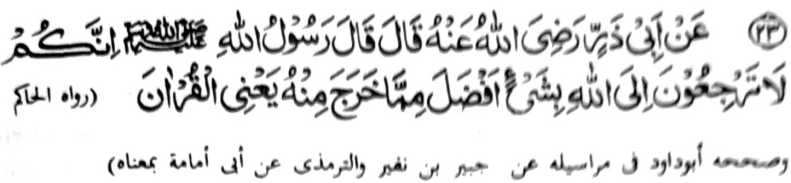
Miyakalhilayan ko Hadrat Abu Zar (Radhiallaho ‘Anho) a pitharo iyan a pitharo o Rasulollah (Sallallaho ‘Alaihi Wasallam), “Mata-an a sekano na di kano den makarani ko Allah a nggolalan ko apiya antona-a nganin a ba baniyan kalawani so nganin a miyakapo-on Rekaniyan, ma-ana so Qur’an. ”
Marayag ko kiya-aloy niyan ko madakel a Hadith a daden a taralebi a okit a iphakarani ko Allah a ba niyan kalawani so kapembatiya-a ko Qur’an. So Imam Ahmad ibn-e-Hambal (Rahmatullahi ‘Alaihi) na pitharo iyan, “Miya-ilay aken so Allah si-i ko taginepen aken na ini-iza aken Non o antona-ai taralebi a okit a iphakarani Rekaniyan. Pitharo o Allah, ‘Hay Ahmad! So Katharo Aken (ma-ana so Qur’an).’ Ini-iza aken Non peman o ba so kapembatiya-aon a rakhes o ma-ana niyan, o di na so kapembatiya-aon apiya di zaboten so ma-ana niyan. Pitharo o Allah, ‘Melagid o pezabota so ma-ana niyan antawa-a ka di, na palayaden iphakarani Raken.’”
So kababaloy o kapembatiya-a ko Qur’an a taralebi okit a iphakarani ko Allah na inosay ko tapsir o Maulana Shah Abdul ‘Aziz Dehlvi [Nawwar-Allaho Marqadaho (Lindawan o Allah so Qobor iyan)], a isa sekaniyan a mala-i sabot ko kiyapakaged-ged [o manga Hadith]. Aya onayan niyan na so ‘Suluk-ela-Allah’ [okit o manga Auliya] a isa a ipembetho ron na ‘Martabe Ihsan’ [piphangka-pangkatan o karani ko Allah] na khakowa o telo a okit:
(1) ‘Tasawwur', aya katawi ron sa Shari’at na madalem a kapamimikiran, na aya katawi ron sa basa o manga Auliya na Muraqahah.
(2) So kathaden-tademi ko Allah nggolalan sa gi-i kakhaso-kasoya ko podi Rekaniyan.
(3) So kapembatiya-a ko Qur’an.
Sabap sa kagiya giyangkoto a paganay a okit na taden-tadem a mo-okit ko poso, na mimbaloy baden a dowa a okit: Paganay ron na so taden-tadem a mokit ko poso ago so katharo. na ika dowa na so kapembatiya-a ko Qur’an. Aya ma-ana o Dhikr na so katharo a maka-aantap ko Allah na lalayon gi-i khaso-kasowin. So gi-i ron kakhaso-kasoya na pephaka-ogop ko ‘Mudrakah’ [so kapekha-aden o sabot] kapekha-satiman o pamikiran maka-antap ko tao a pethademan. Aya onga niyan na so kakhagedama sa lagid o makamamasa angkoto a tao [a pethademan]. So katatap sangka-iya a ola-ola na aya ipembetho ron na ‘ma’iyat’ [ka-aden o tarotop a kapagepeda], a aya ma-aantap angka-iya a Hadith a phakatondog si-i:
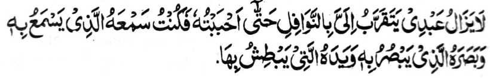
"Diden kharintas so oripen Aken ko kapephakarani niyan Raken a nggolalan ko manga [simba a] nawafil [manga sonnat] taman sa kababaya-an Aken sekaniyan, na Saken-i mabaloy a tangila niyan a gi-i niyan ipamamakineg, go mata niyan a gi-i niyan ipangilay-lay, go lima niyan a gi-i niyan ipangawa-kawa, go manga a-i niyan a iphelalakao niyan.. *
Aya ma-ana niyan na igira so tao, sabap ko kitaralo o simba, na gi-i mbaloy a pekhababaya-an o Allah, na so Allah a aya somisiyap ko langowan o anggaota o lawas iyan sa so manga mata niyan, so manga tangila niyan, go so manga ped iyan, na langon miphasiyonot ko Kabaya Iyan. Giyangka-iya a mapiya na miya-aloy a aya onga o katatatap o manga Sambayang a Sunnat, sabap sa so Paralo a manga Sambayang na raapepento a go di khapakay o ba kalawani [sa kadakel], na so kapakarani ago
lalayon kitotompok na aya sarat iyan na so katatap ago katetekhes, sa lagid o kiya-aloy niyan kagiya.
Ogaid na giyangka-iya okit a kambanoga ko kapakarani na pantag bo ini ko Sekaniyan a Soti ago Pekhababaya-an [Allah] , go di khaparo so kazinganina ko kapakarani ko apiya antawa-a a giyabo a gi-i khaso-kasoya ko ingaran niyan. Aya sabapa-i na so sekaniyan a gi-i zinganinen so kapakarani ron na dowa a sipat iyan: Paganay ron, na sekaniyan na aden a sipat iyan a Kata-o ko langowan taman sa kazabota niyan ko Dhikr o langon o Zakirin [Manga tao a mapasang-i kathaden-tadem] melagid o phaka-oktt sa dila o di na si-i ko poso, ko apiya antona-a basa, apiya antona-a masa ago apiya anda darepa. Ika dowa, aden a kaphakagaga niyan sa kasindawi niyan ko sabot ago khitoman niyan so ndingan-dingan o tao a gi-i thaden-tadem, a siran so ‘dunu’ [karani], so ‘tadalli’ [so kapakararani], so ‘nuzul’ [so katoron], ago so ‘qurb’ [kapakararani]. Sabap sa giyangka-iya a dowa sipat na ayabo a makatatangan non na so Allah, na giyangkanan a miya-aloy a manga okit o kazinganin sa kapakarani na Ron bo mapapatot. Giyangka-iya a kha-aloy a Hadith-e-Qudsi [katharo o Allah a inaloy o Rasulollah (Sallallaho ‘Alaihi Wasallam)] na mitotoro iyan angkanan a osayan:
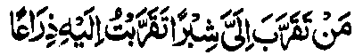
u..sa makarani Raken sa sarangao na miseg Ako ron sa repeng a barokan, na sa makarani Raken sa repeng a barokan na miseg Ako ron sa sarepa, na sa somong Raken a phelalakao na alaon Aken a palalagoy.."
Giyangka-iya a ibarat na pantag bo ini sa osayan. O kena ba pantag bo sa osayan, na so Allah na kena ba kailangan sa kalalakao o di na kapalalagoy. Aya ma-ana niyan na so langon a pethadem ago pephakarani si-i Rekaniyan na pethabangan ago sisiyapen siran o Allah si-i ko takes a kalalawanan so madadalem kiran a panamar ago panagontaman. Aya sabapa-i na kagiya giya-i domada-it ko kala Iyan-i Gagao. Sabap ro-o, na so kaphantang o manga tao a pephakatadem Rekaniyan na aya okit iyan na katetekhes o ni-at na aya khaoriyan non na so
kapakatoron o limo o Allah, a Maporo So Qur’an na langon taden-tadem ko Allah, sabap sa daden a Ayaat ko Qur’an a ba di kapapadalemi sa taden-tadem ago inengka ko Allah, na sabap san na miya-awidan niyan so wara-an o zikr sa lagid o kiya-aloya-on kagiya. Aden pen a isa a kibibida o Qur’an, a pekhasabapan sa gi-i kapagomareg o kapephakarani ko Allah, na giya-i: so omani isa a katharo-on na ka-aawidan niyan so manga sipat ago kala-i kapa-ar o gi-i tharo. Marayag a igira pembatiya-an so manga bayok o manga baradosa na pephakararad sa marata ago igira inaloy so manga katharo o manga barasimba a manga tao na aya onga niyan na mapiya. Giya-i sabap a so kitaralo a gi-i kapaganada ko manga kapagongangen na phagonga sa katakabor ago kapangimporo-an, go so kitaralo a gi-i kapaganada ko ‘Ilmo ko Hadith na phagonga sa kapangalimbaba-an. Makimpen so basa a English ago so basa a Persia na melagid, ogaid na mbida a gi-i ran kaperarad ko manga pembatiya sabap ko kiyapaka-mbidadia o paratiyaya ago paparangayan o langona gi-i manorat [sa kitab], Aya oriyana-i na khapakay a tharo-on a so lalayon kapembatiya-a ko Qur’an na aya iphagonga niyan na so pembatiya na pekhararadan o manga sipat o Pho-onan niyan [so Allah] ago pekhalayam siran non. Opama ka aden a tao a pekhababaya-an niyan so inizorat o isa a panonorat, na pekhapanagombalay so babaya iyan [a panonorat] sangkoto a tao. Giyoto mambo-i sabap a so pembatiya sa Qur’an na makasasarig sa kakhakowa-a niyan ko mala a gagao o Allah, a giyoto peman-i a pephaka-ogop sa kapakarani si-i Rekaniyan. Ikalimo tano o Allah.
Hadith - 24
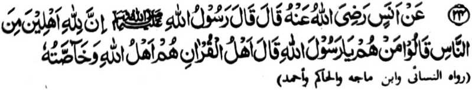
Miyakathitayan ko Anas (Radhiallaho Anho) a pitharo iyan a pitharo o Rasulollah (Sallallaho 'Alaihi Wasallam), “Mata-an! A aden a ta-alok ko Allah si-i ko manga manosiya. ” Pitharo iran [a manga Sahabah],
“Antawa-a siran Ya Rasulollah (Sallallaho ‘Alaihi Wasallam)!?” Pitharo iyan, “Siran so manga too o Qur'an ka siran-i manga ta-alok o Allah go miyangapipili Iyan. ”
“So manga tao o Qur’an” na giyoto so lalayon matetembang ko Qur’an ago aden a miyasalebo a babaya iyan non. So kababaloy ran a manga ta-alok ko Allah na tanto a marayag. Maliwanag pho-on sangka-iya osayan a amay ka so tao na matembang ko Qur’an, na so makalalawan a limo o Allah na tatap so kapephakatoron niyan kiran. Mata-an a so manga tao a lalayon mipelolomameka o isa a tao na gi-i mbaloy a isa ko manga ta-alok rekaniyan. Tanto a maporo a bantogan a kaped ko ta-alok Rekaniyan a maped ta ko itongan o “Manga tao o Allah” go mimbaloy a pekhababaya-an Niyan, pantag bo sa tanto a maito a kaperomasay. Tanto a mala a kaperomasay ago tamok a pekhibalabag o manga tao pantag bo ko kapakarani ko manga dato sa donya o di na makaped ko manga mosawira o dato. Pephamoday niran so manga tao a mboto ago langon a okit a kapangalimbaba-an na siyowa iran; na ibebetad iran noto sa mala-i kipantag. Ogaid na so kaperomasay pantag ko Qur’an na ibebetad sa ilang a masa ago ilang a bager.
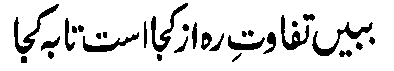
Ilaya niyo so kiyapaka mbida o manga okit; tanto a mala a kiyapakasilay niyan.
Hadith - 25
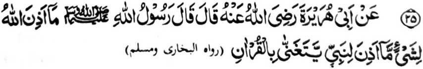
Miyakathitayan ko Abu Hurairah (Radhiallaho Anho) a pilharo iyan a pitharo 0 Rasulollah (Sallallaho Alaihi Wasallam), “Da-a piyamakineg [phiya-piya] o Allah a nganin a ba niyan kalawani so
kapephamamakinega Niyan ko sakatao a Nabi a pembatiya-an niyan so Qur'an phiya-piya ko mapiya lago. ”
Miya-aloy sa paganay a so Allah na tatandingan niyan sa pamakineg so kapembatiya-a ko Qur’an, a katharo Iyan. Sabap sa so manga Nabi na inggogolalan niran sa tarotop so pada-adat ago so manga bitikan o kabatiya sa Qur’an, na marayag a karina sa kapephamamakinega kiran o Allah. So kinipharasen non ko mapiya a lago na miyaka-oman non sa kapiya. So peman so manga ped a tao a salakao ko manga Nabi, na so kapembatiya iran na pephakagamit sa pamakinegan o Allah si-i ko takes a kapiya niyan.
Hadith -26

Miyakathitayan ko Rudhadah ibn-e ‘Ubaid Radiallaho Anho a pitharo iyan a Rasulollah (Sallallaho Alaihi Wasallam), “So Allah na lebi a kapephamamakinega Niyan ko pembatiya sa Qur'an a di so kapephamamakinega o khirek ko pababayok ko bayok iyan. ”
Kalalayaman a so kambayok na pephakabirai. So peman so manga bara-agama a manga tao na di ran phamamakinegen so kambayok sabap ko manga bitikan o Islam. Ogaid, na so Islam na da niyan saparen so kapamama-kinega ko gi-i kambayok o oripen o tao a babay a kamimilikan niyan, apiya pen tanto niyan a magawi so pamamakinegan o tao.
Baden so Qur’an na di khapakay o ba aya kabatiya-aon na maka-ibarat sa ida-ida, sabap sa so kanggola-ola-a ro-o na
inisapar ko kiya-aloya on ko inadakel a Hadith. Si-i ko isa a Hadith, na miya-aloy ron:

Pananggila-i niyo o ba niyo mabatiya so Qur'an sa lagid o manga-nganakan ko gi-i niyan kambayok.
So manga lokes tano na pitharo iran a so tao a batiya-an niyan so Qur’an sa lagid o kambayok na isa sekaniyan a Fasiq (Baradosa), na apiya so pepharnamakinegon na pekhadosa. Ogaid na mapiya so kabatiya-a ko Qur’an sa mapiya lago asar ka kena ba miyokit sa kambayok. Madakel a mbara-mbarang a Hadith a kadadaleman sa kipephangoyaten ko kabatiya sa Qur’an mokit sa mapiya lago. Miyaka-isa na pitharo o Rasulollah (Sallallaho ‘Alaihi Wasallam), ‘Pharasen niyo ko Qur’an so mapiya lago.” Si-i ko salakao a Hadith na miya-aloy ron: “So mapiya ago na pekhatakep iyan so kapiya-i bontal o Qur’an.”
So Hadhrat Shiekh Abdul Qadir Jilani (Rahmatullahi Alaihi) na isosorat iyan ko kitab iyan [ ] (Ghuniyah) a miyaka isa na so Abdullah ibn-e Mas’ud (Radhiallaho ‘Anho) na siyagadan niyan a satiman a darepa sa kilid a inged a Kufa na miyaka-ilay ron sa malilimod a manga baradosa ko satiman a walay. Aden a pababayok a so Zazan na gi-i magida-ida a rakhes o manga boni-boniyan niyan. So kiyanega niyan ko lago niyan, na so Ibn-e Mas’ud (Radhiallaho ‘Anho) na pitharo iyan, “Tanto a mapiya a lago o si-i maosar ko kapembatiya-a ko Qur’an.” Oriyan noto na siyali-kombongan niyan so olo niyan sa dinis na go bo okit. Miya-ilay o Zazan a aden a gi-i niyan tharo-on. So kini-iza-an niyan non ko manga tao, na kiyatokawan niyan a so Ibn-e Mas’ud (Radhiallaho ‘Anho) a isa sekaniyan a Sahabi o Rasulollah (Sallallaho ‘Alaihi Wasallam) a aya bes somiyagad a pitharo iyan noto. Tanto a miyalek so Zazan sa aden maga-an so tothol, na bininasa niyan so manga boni-boniyan niyan na miyaganad baden ko Ibn-e Mas’ud (Radhiallaho ‘Anho) sa aya kiya-oriyan non na mimbaloy sekaniyan a isa ko minitayao a 'Alim ko masa niyan.
Madakel a Hadith a inipangoyat iran so kabatiya sa Qur'an a nggolalan sa mapiya a lago ago sareta iyan a inisapar iyan a o ba baden maka-iring sa bayok ago ida-ida.
So Huzaifah (Radhiallaho ‘Anho) na piyanothol iyan a pitharo o Rasulollah (Sallallaho ‘Alaihi Wasallam), "Batiya-a niyo so Qur’an ko okit a kabaliya-aon o manga Arab, go di niyo mbatiya-a si-i ko kapelago o manganganakan o di na lagid o kapelago o manga Yahodi ago so manga Nasrani. Aden a phakasalono a manga tao a mbatiya-an niran so Qur’an sa lagid o kambayok ago so kandidiyagao, na giya ngkoto a kapembatiya iran na di kiran phaka-ompiya sa maito bo. Ba siran den khapitna rakhes o manga tao a masoso-at ko kapembatiya iran.
So Ta’us (Rahmatullahi ‘Alaihi) na pitharo iyan a aden a miniza ko Rasulollah (Sallallaho ‘Alaihi Wasallam), “Antawa-ai miyabatiya iyan so Qur’an sa mapiya lago?” Inisembag o Rasulollah (Sallallaho ‘Alaihi Wasallam), “Sekaniyan so maneg iyo na aya magedam iyo na madadalem sekaniyan ko kalek ko Allah.” (Ma-ana so lago niyan na aya den a kanega on na sekaniyan na tatabaden sa kalek ko Allah). Giya-i na sabap ko mitataralo a gagao o Allah, na kena ba Niyan phaliyogaten ko tao so di niyan khagaga. Aden a Hadith a pezogo so Allah sa isa a Mala-ikat. Igira aden a pembatiya sa Qur’an, a di niyan khaontol si-i ko titho a okit iyan, na giyangkoto a
Mala-ikat na pephaka-ontolen niyan so kapembatiya iyan ko ona-an pen o da niyan non kinaiken ko langit.

Ya Allah! Di a ken khagaga men ray so podi a miyapatot Reka
Hadith - 27


Miyakathitayan ko Ubaidah Mulaikie (Radhiallaho ‘Anho)) a pitharo iyan a pitharo o Rasulollah (Sallallaho ‘Alaihi Wasallam), “Hay so bigan ko Qur'an! Di niyo mbaloya so Qur'an a olona, go batiya-a niyo ko okil a kabatiya-aon ko manga kagagawi-i ago so manga kada-daondao. Go panolonen niyo sekaniyan ago batiya-a niyo ko mapiya a lago go pamimikirana niyo so madadalemon ka angkano thagompiya. Go oba kano mbabanog sa balas (sangka-iya donya) ka aden a mala a balas iyan [sa Alongan a Maori]. ”
Kati-i so saba-ad ko zaboten sangka-iya Hadith:
1. So da kapakay o ba oloni so Qur’an na dowa a Mafhoom (pekhasabot ton): Paganay ron na so kathato sa di khapakay o ba oloni so Qur’an na sabap ko giyanan na makasosopak ko pada-adat o kabatiya ko Qur’am. Pitharo o Ibn-e-Hajar (Rahmatullahi ‘Alaihi) a so kaoloni ko Qur’an, so kadaseli ron, go so kadapo-i ron, go so katalikhodi ron na manga ola-ola a inisapar. Ika dowa na so katharo a ‘baloin a olona’ na isa mitotoro iyan na so kindarainonen ko Qur’an. Daden a kipantag iyan ko kibatogen non ko olona, go lagid o gi-i nggola-ola-an o manga tao ko saba-ad a manga darepa a ibabatog sa lihar ko kilid o qobor a ni-at sa katago-i ron sa barakah. Giya-i pithamanan a di kasiyapa ko Soti a Kitab. Kabenar reketano o Qur’an so kabatiya-a on.
2. So katharo a ‘batiya-a niyo ko okit a kabatiya-a on’ na aya ma-ana niyan na mbatiya-an si-i ko
pithamanan o pada-adat. Giyangka-iya a sogo-an na si-i den mapapadalem ko Qur’an:

So siran noto a inibegay Ami kiran so Kitab (a Qur’an] a pephangadi-t ran ko ontol a kapangadi-i ron ... [Surah Al-Baqarah:121]
3. So katharo a ‘Panolonen niyo so Qur’an’ na aya ma-ana niyan na ipenggolalan tano to a mokit sa katharo, o di na kazorat, o di na pangangapin, o di na kinggolalanen non, o di apiya antona-a a okit a khaparo.
So Rasulollah (Sallallaho ‘Alaihi Wasallam) na inipaliyogat iyan so kipanolonen ago kapakalangkap, ogaid na so saba-ad ko manga mamponay tano sa pamikiran na inibetad iran sa ilang a galebek, go sarta a tatarima-an niran a mala siran-i babaya ko Rasulollah (Sallallaho ‘Alaihi Wasallam) ago so Islam.
Pitharo o satiman a bayok a taga Persia:

Pekhalek ako, hay sakatao a Badawe! Ka o ba ka baden di mira-ot sa Ka-abah sabap sa aya titindegan kana so lalan a ipezongsa Turkistan.
So Rasulollah (Sallallaho ‘Alaihi Wasallam) na inisogo iyan so kapakadaya-manga ko Qur’an, ogaid na di bo malebod a kapephanago-i tano sa pimbarang a pangalang so kapephakalangkapa on. Pephangemba-al tano sa manga bitikan ko kapaganad sa kata-o ko okit a so manga wata tano, saliyo ko kasowa-a iran ko Qur’an, na initegel kiran so kitapi ko manga iskowila. Di tano masoso-at ko manga goro sa Madrasah ko [pangandam tano sa] kabinasa-a iran ko kapagintao o manga wata
tano, giyoto-i sabap n di tano kiran phakasongen so manga wata tano. Apiya giyangka-iya pangandam na aden n kabebenar iyan, ogaid na kena ha ini phakasaliyo ko atas-tanggongan tano kiran. Aya liyo si-i na so atas-tanggongan tano na baden miyagomareg, sabap sa paliyogat reketano so kipanolonen ko Qur’an, melagid si-i ko pithnnggisa-an o di na so kalangowan tano. So manga goro na dosa iran so di ran kaphaka-tarotop, ogaid na o aya sabap a di tano kaphakasonga ko manga wata tano sa Madrasah na kagiya di siran makatatarotop, sa aya baden a matomo tano na so manga pando-an a pho-on ko manga iskowila-an a giyanan-i khasabapan sa kitegelen ko manga wata tano a kindarainonen niran ko kaphaganada iran ko Qur’an, na miyaka-ibarat sa kapembono-a tano ko gi-i merayor sa kapembegi tano ron sa doti. So kipenda-owa-an tano ko di kapaka-tatarotop o manga goro na mababao a dalina, na giyangka-iya da-owa na daden a kipantag iyan ko Kokoman o Allah. Khapakay a ipangenda-o tano ko manga wata tano so manga phaganaden sa iskowila-an lagid o kata-o sa kapagitong, pantag bo sa kabaloy ran a khapakayan thinda o di na kapakakowa iran sa galebek ko pangadapan ko parinta, ogaid na so Allah na pitharo Iyan a so kapaganada ko Qur’an na aya lebi a mala-i gona.
4. So kabatiya na nggolalan sa mapiya lago na miya-aloy dena-i ko miya-ipos a Hadith.
5. Inipaliyogat reketano so kapephamimikirana tano ko ma-ana o Qur’an. Aden a katharo pho-on ko Taurat a misosorat ko kitab a ‘Ihya’ a pitharo o Allah, “Hay Oripen Aken! Ba ka di khaya ko ola-ola ngka Raken? O maka-kowa ka sa sorat pho-on ko ginawa-i ngka ko masa a phelalakao ka ko lalan na thareg ka den na phangiloba ka sa mapiya a darepa na mbatiya-an kaon sa tanto ka a tatandingan sa mapiya pamakineg ka-an ka masabot so pithanggisa-an a katharo a madadalemon. Ogaid na so Kitab Aken, a o-osain Aken non so langowan taman ago lalayon
Aken gi-i khaso-kasoin mamagosay so langon o manga ala-i kipantag a nganin, ka-an ka mapcphamimikiran ago masabot, na lagid o di ngka i enengka-an. Ba aya kibebetaden ka Raken na mababa a di so bolayoka aka? Hay Oripen Aken! So saba-ad ko manga bolayoka aka na phagobay reka ago gi-i reka makimbitiyara-i, na tanto ngka siran a pephamamakinegen. Gi-i ngka siran gi-i pamamakinegen ago pephanamaran ka a kasaboti ngka kiran. O aden a zarebak na pezaparan ka sa nggolalan sa siniyas. Gi-i Ako reka makimbitiyara-i a nggolalan ko Kitab Aken, ogaid na di ka phamamakineg. Ba aya katawi ngka Raken na mababa a di so manga ginawa-i ngka?” So kalbihan o kapamimikiran ago so kindalen-dalemen ko matatago ko Qur’an na andang den a miya-aloy si-i ko Pamekasan angka-iya kitab ago si-i pen ko Hadith a ika 8.
6. So katharo a “oba ka mbabanog sa sokay” na aya ma-ana niyan na di khapakay so kakowa sa sokay sabap ko kabatiya sa Qur’an sabap sa so kapembatiya-aon na aden a khakowa ngkaon a mala a balas ko Akhirat.
So kakowa sa balas pantag on sangka-iya donya na lagid o kaso-at ko kapakakowa sa lokhabang a di so kapakakowa sa pirak. So Rasulollah (Sallallaho ‘Alaihi Wasallam) na pitharo iyan, “Anda den-i kapemasela-a o manga Ummat aken ko pirak na khada kiran so bantogan o Islam a inibegay niyan kiran, na amay ka itareg iran so kisogo-on ko mapiya ago so kisaparen ko marata na mapapas kiran so kapiya o Initoron [ma-ana so kata-o ko Qur’an].

Ya Allah! na pakalidasa kami Ngka si-i
Hadith — 28
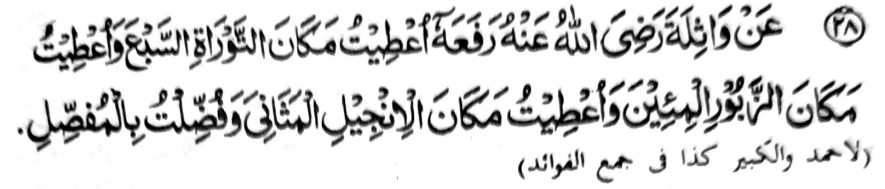
Miyakathitayan ko Wathilah (Radhiallaho 'Anho) a pitharo iyan a pitharo o Rasulollah (Sallallaho ‘Alaihi Wasallam), “Inibegay raken a sambi o Taurat so As-Sab’a Tuwalin, go inibegay raken a sambi o Zabor so Al-Mi’in, go inibegay raken a sambi o Injeel so Al-Mathani, go so Al-Mufassal a milelebi aken.”
So paganay a pito a Sowar (manga Soorah) na aya bebethowan sa As-Sab’a Tuwalin [pito a manga atas], so makatotondog kiran a sapolo ago isa a sowar na aya bebethowan sa Al-Mi’in [manga sowar a mararani magatos a Ayaat a katas iran], so makatotondog kiran a dowa polo a sowar na aya bebethowan sa Al-Mathani [lalayon-pekhakasoy matiya a sowar], na so liyo ro-o a manga sowar na bebethowan sa Al-Mufassal [so misesenggay]. So kiyamba-a-ba-ad na si-i kiyatokawan ko lomalangkap a osayan, ogaid na aden ?. kiyapaka-mbidabida o pamikiran o ba so isa a soorah na ped ko As-Sab’a Tuwalin o di na si-i ped ko Al’Mi’in. Lagid oto mambo so ped a soorah o anda ma-aped: si-i ko Al-Mathani o si-i ko Al-Mufassal. Ogaid na giyangka-iya a kiyapaka-mbida-bida o pamikiran na da niyan marambit so ma-ana ago antap angka-iya Hadith. Giyangka-iya a Hadith na piyakisabotan niyan a so Qur’an na madadalemon so timbang o langon o manga ala a Kitab a pho-on sa Langit a initoron ko miyanga-oona, sa lawan ro-o, na madadalemon so Al-Mufassal a mibibinta iyan, a so lagid iyan na da mato-on ko miyanga-oona a manga kitab.
Hadith - 29

Miyakathitayan ko Abu Sa-id Al-Khudrie (Radhiallaho Anho) a pitharo iyan, “Mo-ontod ako ko obay o manga lolobay ko manga Muhajireen a mata-an a so saba-ad kiran na kasasawa-an so saba-ad ko manga Aurat iran go aden a Qari’ [pababatiya sa Qur’an] a pembatiya-an niyan rekami so Qur’an. Miyakatalingoma so Rasulollah (Sallallaho Alaihi Wasallam) na tominindeg ko zaron-sarongan nami. So kiyapaka-tindeg o Rasulollah (Sallallaho Alaihi Wasallam) na tomiyareg so Qari’ na siyalam kami niyan oriyan niyan na pitharo iyan, Antona-ai pezowa-n niyo?’ Pitharo ami a pephamamakinegen nami so Kitab o Allah. Pitharo iyan, Alhamdo Lillah! Sekaniyan-i miyaden a ped ko manga Ummat aken so manga tao a inisogo raken a kaphantang aken ko ginawa ko a ped kiran. ’ Oriyan niyan na miyontod ko zaron-sarongan nami. Kiyapay kami niyan sa mobay kami na langon kami ron somiyangor. Pitharo iyan, ‘Pakapipiya-a niyo a ginawa niyo Hay manga miskin a manga Muhajireen ko kambegi rekano sa tarotop a sindao ko Gawi-i a Qiyamat! Go phakasoled
kano ko Sorga ko ona-an o manga ala rekano-i tamok so sapotol sa alongan go giyanan na [aya kalendo niyan na] lima gatos ragon."'
So manga Muhajireen ko kasasawa-i ko saba-ad ko manga Aurat iran na aya mitotoro Oto na so saba-ad ko manga lawas iran na kena ba paliyogat so kasapengi ron ka da-a sapeng iyan. Ogaid sa si-i ko ka-ilay o madakel a tao na ipekhaya pen so kasawa-i sangkoto a saba-ad ko lawas makimpen kena ba haram so ka-ilaya on. Giya-i sabap a domadalong so saba-ad ko saba-ad.
Da iran ma-inengka so kiyapakatalingoma o Rasulollah (Sallallaho ‘Alaihi Wasallain) sabap sa katetembang iran. Miya-ilay ran sekaniyan ko tanto niyan a kiyapaka-obay, na sabap ko adat iran non, na tomiyareg matiya so Qari’.
Makimpen miya-ilay o Rasulollah (Sallallaho ‘Alaihi Wasallam) so isa kiran a pembatiya-an niyan kiran so Qur’an, na ini-iza iyan pen o antona-ai gi-i ran nggola-olaan. Giyangka-iya paka-iza na aya mitotoro iyan na so babaya iyan ko miya-ilay niyan a gi-i ran nggola-ola-an.
So salongan sa Akhirat na aya timbang iyan na sanggibo ragon sangka-iya donya, na miya-aloy sa Qur’an:

Go Mata-an a so salongan si-i ko Kadenan ka na lagid o sanggibo ragon ko itongan niyo. [Surah Al-Hajj:47]
Giya-i sabap a so katharo a Arab a ‘Ghadan’ (Mapita) na aya kalalayami ron a mitotoro iyan na so Gawi-i a Kaphangokom. Apiya giya-i na arangana-i a kalendo o salongan ko kalilid a miyaratiyaya. So peman so da paratiyaya, na pitharo o Qur’an,

“...Si-i ko Alongan a miyabaloy so diyangka iyan na limapolo nggibo ragon [Surah Al-Ma-arij:4]
Si-i peman ko titho a miyaratiyaya na giyangka-iya a gawi-i na mababa si-i ko takes o daradat o paratiyaya niyan. Miyapanothol a si-i ko saba-ad a titho a miyaratiyaya, na aya diyangka iyan na lagid o dowa rak’at a Sambayang ko waqto a Sobo.
So kalbihan o kapembatiya-a ko Qur’an, na miya-aloy ko madakel a Hadith. Sakamaoto mambo, a so kalbihan o kapamakinega ko Qur’an na madakel mambo a kiya-aloya non a Hadith. So kapephamakinega ko kapembatiya-a ko Qur’an na tanto a mala-i kipantag sa so Rasulollah (Sallallaho ‘Alaihi Wasallam) na inisogo-on a kaped iyan kiran a pembatiya sa Qur’an, sa lagid o kiya-aloy niyan sangka-iya Hadith. Saba-ad ko manga poporo a manga Olama na aya kepit iran non na so kapephamamakinega ko kapembatiya-a ko Qur’an na mala-i kalbihan a di so kapembatiya-a on. sabap sa so kabatiya sa Qur’an na Nafl na so kapamamakineganna Paralo na so paralo na mala-i kalbihan a di so Sunnat.
\
Po-on sangka-iya Hadith na aden pen a isa a zaboten non, pantag ko kiyazopa-sopakan sa pamikiran o manga Olama. Aya da pagayoni na anda-i taralebi ko miskin a pati-is a piyagema iyan so mambebetad iyan ko salakao ron ago so mala-i tamok a mananalamat ko Allah ago initoman niyan so manga atas-tanggongan niyan. Giyangka-iya a Hadith na migay sekaniyan sa isa a sabap a kapakalelebi o manga miskin a pati-is.
Hadith - 30

Miyakathitayan ko Abu Hurairah (Radhiallaho ‘Anho) a pitharo iyan a pitharo o Rasulollah (Sallallaho ‘Alaihi Wasallam), “Sa tao a mamakineg sa isa bo a Ayaat a ped ko Kitab o Allah na isorat a bagi-an niyan so dowa takep a mapiya go sa tao a batiya-an niyan sekaniyan [a Kitab o Allah] na mapembagi-an niyan so sindao ko Gawi-i a Qiyamat. "
So manga Olama sa Hadith na sasangka a niran angka-iya Hadith pantag ko kiyapo-onan niyan, ogaid na so osayan niyan na miyabager mambo o manga ped a tothol a mitotoro iran a so kapamakinega ko kapembatiya-a ko Qur’an na mala-i balas, taman sa so saba-ad ko manga Olama na pitharo iran a so kapamakineg ko kapembatiya-a ko Qur’an na mala-i balas a di so kapembatiya-a on. So Ibn-e-Mas’ud (Radhiallaho ‘Anho; na piyanothol iyan a miyaka-isa na so Rasulollah (Sallallaho ‘Alaihi Wasallam) na mo-ontod si-i ko mimbar na pitharo iyan non, “Batiya-a ngka raken so Qur’an!” Pitharo o Ibn-e-Masud, “Di raken domada-it o ba ko reka batiya-a so Qur’an sabap sa si-i reka initoron.” Pitharo o Rasulollah (Sallallaho ‘Alaihi Wasallam), “Pekhababaya-an aken so kapamakineg.” Inipagomanon o Ibn-e-Abbas (Radhiallaho ‘Anhoma), soden so kiyabatiya iyan sa Qur’an na miyangatatak so manga lo’ pho-on ko manga mata o Rasulollah (Sallallaho ‘Alaihi Wasallam). Miyaka-isa na so Salim (Radhiallaho ‘Anho), a piyakamaradika a oripen o Huzaifah (Radhiallaho ‘Anho), na pembatiya-an niyan so Qur’an na so Rasulollah (Sallallaho ‘Alaihi Wasallam) na tomitindeg ko obay niyan, na piyamakineg iyan sa da mathay. Miyaka-isa na so Rasulollah (Sallallaho ‘Alaihi Wasallam) na piyamakineg iyan so kapembatiya-a ko Qur’an o Abu Musa Ash’ari (Radhiallaho ‘Anho) na tanto niyan a kiyababaya-an so kabatiya iyan.
Hadith - 31
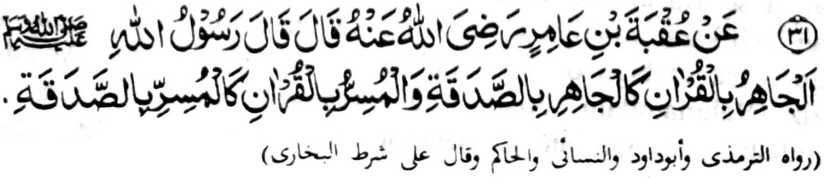
Miyakathitayan ko 'Uqbah bin Amir (Radhiallaho 'Anho) a pitharo iyan a pitharo o Rasulollah (Sallallaho ‘Alaihi Wasallam). “So kipakatanoyen ko kabatiya sa Qur'an na lagid o gi-i zadka sa marayag, go sa tao a maipes-i kabatiya sa Qur’an na lagid o tao a gi-i zadka sa pagenes."
Pekhasalak a mala-i balas so kazadka sa mapayag, igira aden a mapiya sabap ago aya ni-at na so ka-oyati ko manga ped a nggolalan sa ladiyawan. Si-i peman ko ped a masa, na so kazadka sa pagenes na taralebi a mala-i balas, ibarat, igira sanggila ko kapaki-ilay-lain si-i ko phamemegay, go kapaka-ito ko mbegan.
Lagidoto mambo, so kabatiya sa Qur’an sa matanog na mala-i balas igira ipephangoyat ko manga ped; go isa on pen na aden a balas o manga tao a pephakanegon. Aden mambo a pekhato-on a masa a taralebi so kabatiya sa maipes, ka aden kalidasi so kaphakabowing iyan ko manga ped a tao ago aden kalidasi so kapaki-ilay-lain ko pembatiya. Apiya anda san a okit, na so kabatiya na salakao a balas iyan. Aden a pekhasalak a taralebi so isa a okit (ma-ana so maipes), na aden mambo a masa a taralebi angkoto a ika dowa a okit.
Madakel a manga tao a aya da-owa iran a makaphapasod sangka-iya a Hadith na so kabatiya sa pagenes na taralebi a mala-i balas. So Imam Baihaqi (Rahmatullahi ‘Alaihi), na si-i ko kitab iyan a ‘Kitab-ush-Shu’ab’, na inisorat iyan a so Hadhrat A’isha (Radhi Allaho ‘Anha) na miyapanothol iyan a so balas o kanggalebek sa ‘amal a pagenes na pito-polo takep a kapakalelebi niyan ko balas o ‘amal a mapayag. Ogaid, na so bitikan a ibebetad o manga Muhaddithin (Manga Olama ko Hadith), na giyangka-iya a Hadith na dha’if (malobay).
So Hadhrat Jabir (Radhiallaho ‘Anho) na piyanothol iyan a so Rasulollah (Sallallaho ‘Alaihi Wasallam) na pitharo iyan, “Di kano mbatiya sa matanog, ka amay-amay na maramo o lago o isa so Iago o ped iyan.” So Hazrat ‘Umar Ibne-Abdul-Aziz (Rahmatullahi ‘Alaihi) na miyato-on niyan a mama a pembatiya sa Qur’an sa matanog si-i sa soled a Masjid-e
Nabawwi na siyaparan niyan. So mama a pembatiya na domiya-owa na so ‘Umar Ibne-Abdul-Aziz (Rahmatullahi ‘Alaihi) na pitharo iyan. “O pembatiya ka sa soa-soat ko Allah na batiya ka sa maipes go opama peman ka aya kapembatiya-a ka na pantag ko [kapaki-ilay-lain ko] manga manosiya, na giyangkanan a kapembatiya-a ka na daden a kipantag iyan.”
Lagidoto a aden mambo a miyapanothol a pando-an o Rasulollah (Sallallaho ‘Alaihi Wasallam) ko kapembatiya-a ko Qur'an sa matanog.
Si-i ko ‘Sharah-ul-ihya’ na madadalemon so dowa a ‘RiwAyaat’ (manga tothol) ago ‘athar’ [manga katharo o manga Sahabah] a ipezogo iyan so kabatiya sa Qur’an sa odi matanog na pagenes.
Hadith — 32

Miyakathitayan ko Jabir (Radhiallaho ‘Anho) a pitharo o Nabi (Sallallaho Alaihi Wasallam), “So Qur'an na manapa-at a phakasapa-at, go wakil a phakada-owa. Sa tao a tago-on niyan sekaniyan [a Qur'an/ ko kasasangoran niyan na khidolog iyan ko Sorga, na sa tao a si-i niyan sekaniyan tagoa-a ko talikhodan niyan na pozangen niyan ko Naraka. ”
Aya ma-ana ini na, amay ka so Qur'an na sapa-aten niyan so tao, na so sapa-at iyan na tharima-an o Allah. So khapanapa-at o Qur’an na miya-aloy den ko ika 8 a Hadith: So Qur’an na phangeni niyan sa hadapan o Kokoman o Allah so kiporo o daradat o manga tao a ininggolalan niran sekaniyan, ago masiksa so manga tao a mindarainon non. O tago-a o tao ko kasasangoran niyan, ma-ana inggolalan niyan so manga sogo-an
a madadalemon ko tenday o kapephaginetao niyan, na khidolog iyan si-i ko Sorga. Amay ka talikhodan niyan sekaniyan, ma-ana da niyan nggolalanen, na miyatangked so kakha-olog iyan ko landeng ko Naraka Pitharo angka-iya a mizorat [sangka-iya a kitab] a so kindarainonen ko Qur’an na ped pen sa kapethago-a ko Qur’an si-i ko talikhodan. Si-i ko madakel a Hadith na madakel a miya-aloy ron a manga tapa-os ko manga tao a inindarainon niran so Katharo o Allah. Si-i ko kitab a ‘Sahih-ul-Bukhari’ na aden a marawa a Hadith, a miya-aloy ron a so Rasulollah (Sallallaho ‘Alaihi Wasallam) na miyaka-isa na piyaki-ilay ron o Allah so saba-ad ko manga siksa o manga baradosa. Piyaki-ilay ron a tao a phagodalan sa lakongan so olo niyan sa diyangka a pekhapesa so olo niyan. Si-i ko kini-iza-an non o Rasulollah (Sallallaho ‘Alaihi Wasallam), na miya-aloy a giyangka-iya a tao na ininda-o ron o Allah so Maporo a Katharo Iyan, ogaid na da niyan batiya-a ko manga kagagawi-i ago da niyan nggolalanen ko manga kadadaon-dao, sa imanto na giyangkanan a siksa sa midadayon den taman ko Gawi-i a Kaphangokom. Phamangenin tano ko Allah sabap ko limo Iyan a pakalidasen tano Niyan ko siksa Iyan. Aya mata-an, na so Qur’an na tanto a mala a ontong sa sobo so kindarainonen rekaniyan na miyakapatot sa malipedes a siksa.
Hadith - 33
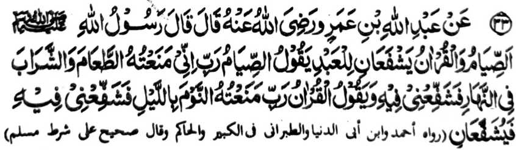
Miyakathitayan ko Abdullah ibn-e Amr (Radhiallaho Anho) a pitharo iyan a pitharo o Rasulollah (Sallallaho Alaihi Wasallam), "So Powasa ago so Qur’an na dowa a phanapa-at ko oripen. Tharo-on o powasa, ‘Kadenan ko na mata-an a saken na inisapar aken rekaniyan so pangenengken ago panginginomen ko kadaondao na pakisapa-aten Ka raken sekaniyan. ’Tharo-on mambo o Qur’an, ‘Kadenan
ko na mataan a saken na inisapar aken rekaniyan so torog ko kagagawi-i na pakisapa-atm Ka raken.' Na pakisapa-at kiran [so oripen] sekaniyan. "
Si-i ko kitab a ‘Targhib’, na giyangka-iya a Hadith na miya-aloy niyan so manga kalima a ‘ta’am’ ago ‘sharab’, ma-ana pangenengken ago panginginomen, sa lagid o kinitogalinen non sangkanan a miya-aloy a Hadith ogaid na si-i ko kitab o Hakim na aya miyato-on tano ron so basa a ‘shahwaat’ (baya-a a ginawa) a misasarobi ko ’sharab’ (panginginomen), ma-ana so powasa na minisapar iyan ko tao so kakan ago so kao-noti ko baya-a ginawa a ribat. Aya mitotoro-ini na so tao na tigera niyan apiya so galebek a iphakapiya ginawa a aden a kapapakay niyan lagid o ka-areki ago so kagakesa ko karoma o tao. Miya-aloy sa manga Hadith a so Qur’an na phaniyaropa sa sakatao a mata-id a mangoda na petharo-on niyan, “Piyakathoday aken seka ko kagagawi-i ago piyakathalogedam aken seka sa kawao ko manga kadaon-dao.”
Giyangka-iya a Hadith na aya mitotoro iyan na so isa a Hafiz na batiya-a niyan so Qur’an si-i ko Sambayang a manga Sunnat si-i ko gagawi-i, sa lagid o kiya-aloy niyan ko Hadith 27. Si-i ko madakel a darepa si-i ko Qur’an na miya-aloy ron so manga pangoyat ko lagida-i. Saba-ad ko manga Ayaat na kati-i a pagalowin:
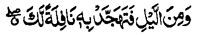
1. Na so saba-ad ko kagagawi-i na pephagenaon ka so Quran: a malalawan. ko manga paliyogat reka.. [Surah lsra:79]
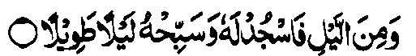
2. Go so saba-ad ko kagagawi-i na pezojod ka Rekaniyan go phoro-poroon ka Sekaniyan ko ka gagawi-i sa malayat [Surah Ad-Dahr:26]
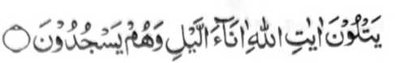
3. .....a pephangadi-an niran so manga Ayaat o Allah ko manga oras ko kagagawi-i a siran na pephamanojod siran. [Surah Aali-‘Jmran. 113]
4. Go so siran na gi-i siran mbabasagawi-i sa rek o Kadenan niran a khisosojod go khigaganat. [Surah Al-Furqan.64]
Sabap ro-o na so Rasulollah (Sallallaho ‘Alaihi Wasallam) ago so manga Sahabah niyan na pekhasalak a so mababasa gawi-i na pembatiya-an niran so Qur’an. Miya-aloy makapantag ko Hadrat Uthman (Radhiallaho ‘Anho) a pekhasalak a pekhatamat iyan so Qur’an si-i so saraka-at a Sambayang a Witr. Sakamaoto mambo so Abdullah ibn-e-Zubair (Radhiallaho ‘Anho) na lalayon niyan pekhatamat so Qur’an si-i ko mababasa gawi-i. So Sa’id ibn-e-Jubair (Radhiallaho ‘Anho) na pekhatamat iyan so Qur’an si-i ko dowa rak’at so soled a Ka’bah. So Thabit Banani na lalayon niyan pekhatamat so Qur’an ko mababasa alongan ago mababasa gawi-i, sa lagidoto mambo so Abu Hurairah (Radhiallaho ‘Anho). So Abu Shaikh Hanai (Rahmatullahi ‘Alaihi) na pitharo iyan, “Pekhatamat aken so Qur’an ago sapolo ka Juz’ ko mababasa gawi-i. O kabaya aken na kathamat aken sa makatelo.” Si-i ko kaphelalag iyan sa kapezong iyan sa Hajj, na so Saleh ibn-e-Kaisan (Radhiallaho ‘Anho) na pekhatamat iyan so Qur’an sa makadowa oman gagawi-i. So Mansur ibn-e-Zasan (Rahmatullahi ‘Alaihi) na pethamaten niyan so Qur’an ko Sambayang iyan a Sunnat ko da niyan pen kapelohor, go pethamaten niyan peman sa ika dowa ko pageletan o Sambayang ko Dhohor ago so Sambayang ko ‘Asr, na so mababasa gawi-i na pephanambayang sekaniyan sa Sunnat a penggora-ok sekaniyan a tanto taman sa so sagayadan o turban niyan na pekhabasa. Lagidoto mambo so gi-i manggola-ola o kadakelan, ko kiya-osayaon o Mohammad ibn-e-Nasr (Rahmatullahi ‘Alaihi) ko kitab iyan a ‘Qiyam-ul Lail”.
Minisorat ko Sharah-ul-ihya a so manga lokes tano ko Agama na mbida-bida so okit a kapethamata iran ko Qur an. So saba-ad kiran na pekhatamat iran so Qur’an oman gawi-i. sa lagid o ola-ola o Imam Shafa-i (Rahmatullahi ‘Alaihi) si-i o manga olanolan a salakao ko Ramadhan; go so saba-ad na makadowa iran matamat so Qur’an oman gawi-i, sa lagid o ola-ola o Imam Shafa-i igira bolan a Ramadhan. Lagidoto mambo so ola-ola o Aswad, Saleh bin Kaisan, Saeed bin Jubair (Rahmatullahi 'Alaihi) ago so madakel pen a salakao kiran. Aden pen a makatelo niyan matamat oman gawi-i. Giya-i ola-ola o Sulaiman ibn-e-Atar, a isa a mala-i kata-o ko manga Tabi-e (Romiya-ot ko manga Sahabah). Miyaka-onot sekaniyan ko kiyagobata sa Miser si-i ko masa o Hadrat Umar (Radhiallaho ‘Anho) ago miyapili sekaniyan a Amir sa Qasas o Hadrat Amir Mu’awiah (Radhiallaho ‘Anho). Lalayon niyan pekhatamat so Qur’an sa maka telo oman gagawi-i.
So Imam Nawawi na inisorat iyan ko kitab a Kitab-ul-Adhkar'a so pithamanan a mala a kiyapakatamat oman gawi-i na isa a tao a aya ngaran iyan na so Ibn-ul-Katib a lalayon niyan pekhatamat so Qur’an sa maka walo oman kagagawi-i ago kadaondao. So Ibn-e-Qudamah na piyanothol iyan pitharo o Ibn Hambal (Rahmatullahi ‘Alaihi) a da-a tamana angka-iya a ola-ola ago si-i matatago ko ka-ooyat o tao a pembatiya. So manga miyanothol ko miyanggola-ola (historians) na miya-aloy ron pen a so Imam ‘Azam (Rahmatullahi ‘Alaihi) na lalayon niyan pekhatamat so Qur’an sa maka nem-polo ago isa ko soled o Ramadhan -maka isa oman kadaon-dao, maka-isa oman gagawi-i ago maka-isa oman Sambayang a Tarawih (manga Sunnat Mu’akkadah ko oriyan o Isha igira Ramadhan.)
So mambo so Rasulollah (Sallallaho ‘Alaihi Wasallam) na miyatharo iyan a so tao a pekhatamat iyan so Qur’an ko dikhatelo gawi-i na di niyan maphamimikiran so ma-ana niyan. Sabap si-i na so Ibn-e-Hazam (Rahmatullahi ‘Alaihi) ago so manga ped iyan na aya kepit iran non na so katamata ko Qur’an sa di mirampay sa telo gawi-i na inisapar. Pitharo angka-iya a [lokes tano a] mizorat si-i, a giyangka-iya Hadith na aya mitotoro iyan na so khagaga o kadakelan a pembatiya sa Qur’an, ka aya di si-i salakao na so miya-aloy ron a sagorompong a
manga Sahabah a pekhatamat iran so Qur’an a di khisampay sa telo gawi-i. Sakamaoto mambo a aya kepiton o Jomhor (opakat o manga Ulama), na da a tamana o kalendo o masa a kakhatamata ko Qur an. So katamat na si-i matatago ko kapaparo o tao. Ogaid na so saba-ad ko manga Ulama na pitharo iran a aya diyangka o katamat sa Qur’an na di makalepas sa pat polo gawi-i. Aya ma-ana ini na di maminos sa telo ko pat bagi ko isa ka Juz a mabatiya oman gawi-i go opama, aden a sabap, a di magaga o tao a makabatiya sa lagida-i katas, na khatapalan niyan ko phakatondog a gawi-i, ka aden matamat si-i ko soled a pat polo gawi-i. So peman so kadakelan, na kena ba ini paliyogat, ogaid na so saba-ad ko manga Ulama na piyakataralebi ran so kapakabatiya sa di maminos so lagida-i sa katas. Giyangka-iya kepit na miyabager o saba-ad a manga Hadith, So mizorat ko [Kitab a] Majma’ na piyanothol iyan a isa a Hadith:
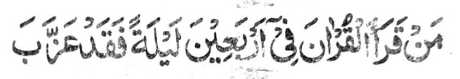
Sa tao a matamat iyan so Qur'an ko soled o pat polo gawi-i na sabenar a miya-ori.
So manga Ulama na miya-opakat siran sa so katamat na si-i ko oman saolan, minsan pen taralebi so katamat ko oman pito gawi-i, sa lagid o ola-ola o kadakelan ko manga Sahabah. Pho-on so tao igira alongan a Juma’at na batiya sa isa ka manzil oman gawi-i, ka aden matamat ko alongan a Khamis. Miya-aloy den a, pitharo o Imam Abu Hanifah (Rahmatullahi ‘Alaihi), a kabenar reketano o Qur’an a makadowa tano matamat ko oman saragon. Giyoto-i sabap a o ba ndarainonen o tao a ba niyan di matamat sa di maminos ko lagida-i.
Aden a Hadith a pitharo iyan, opama ka so Qur’an na matamat si-i ko paganay pen ko kadaondao, na so manga Mala-ikat na ipephamangeni ran sa limo angkoto a tao ko soled o mababasa alongan, o di na si-i ko soled o mababasa gawi-i amay ka aya kiyapakatamat iyan na si-i ko paganay ko kagagawi-i. Saba-ad ko manga Masha-ikh na aya kepit iran non na so katamat sa Qur’an na si-i pethabon ko paganay a kadaondao igira mosim a la-on ago si-i ko paganay ko kagagawi-i igira mosim a panenggao, ka aden mala a maparoli niyan ko pangeni o manga
Mala-ikat sabap ko kalendo o masa. [Igira pangola-on na matas so kadaondao a di so gagawi-i, go igira panenggao na matas so gagawi-i a di so kadaondao].
Hadith — 34
Miyakathitayan ko Sa'id bin Sulaim (Radhiallaho ‘Anho) Mursalan a pitharo iyan a pitharo o Rasulollah (Sallallaho ‘Alaihi Wasallam), “Da a maporo-i daradal a phanapa-at sa hadapan o Allah ko Gawi-i a Kaphangokom a ba niyan kalawani so Qur’an, apiya antawa-a Nabi ago apiya antawa-a Mala-ikat, go apiya antawa-a salakao ro-o. ”
Kiyatokawan ko madakel a Hadith a so Qur’an na phanapa-at - phanapa-at a so sapa-at iyan na tharima-an. Phangenin tano ko Allah a pakisapa-at tano Niyan ko Qur’an langon, ago di Niyan balowin a mizopaka o di na manontot reketano.
Si-i ko [kitaba a] La’ali Masnu’ah, na miya-aloy ron a pho-on sa tothol o Bazzar, a kena ba malobay a katharo:, ‘Kagiya matay a sakatao a mama a so manga lolot iyan na gi-i ran ndiyatoren a kipelebengen non, na aden a tanto a mata-id a mangoda a tomitindeg ko obay o olo o mama. So kiyakapana sangkoto a mama, na somiyolek so mangoda ko pageletan o onong ago so rareb angkoto a miyatay. So kiyabaling o manga tao ko oriyan o kiyapaka-kobor iran, na so dowa Mala-ikat, a Munkar ago Nakir, na miyaka-oma siran sangkoto a Qobor na biya-as iran a mabelag angkoto a mangoda sangkoto a miyatay ka-an niran misibay ko kapagiza-i ran non pantag ko paratiyaya niyan. Ogaid na aya pitharo kiran angkoto a mangoda na, Bolayoka aken sekaniyan, ginawa-i aken sekaniyan, di aken sekaniyan mbelagen apiya antona-ai miyasowa, O ba kano
sosogo-a sa kaphangingiza iyo na nggola-ola a niyo, ka di aken sekaniyan mbelagen taman sa di ko sekaniyan misoled ko Sorga.' Oriyan niyan na diningiIan niyan so miyatay a bolayoka iyan na tharo-on niyan, ‘Saken so Qur’an, a lalayon ka pembatiya-an sa maka-isa na matanog a Iago ago maka-isa peman na si-i ko masolen. Di ka pemboko. Oriyan o somariya o Munkar ago so Nakir, na di ka den sagaden a boko.’ Anda den-i kapasad o somariya, na giya ngkoto a mata-id a mangoda na ndiyatoren niyan den a makapo-on ko manga poporo a manga Mala-ikat a [bebethowan sa] AI-Mala-il-A’la so iga-an a sotra a khakamotan sa kastori. Pangeninta a ibegay reketanowa-i langon o Allah.
Giyangka-iya a Hadith ko katatarotop o madadalemon na madakel a inosay niyan a kalbihan a da tano si-i aloya langon sabap sa aden makababa so osayan non.
Hadith - 35

Miyakathitayan ko Abdullah ibn-e-Amr (Radhiallaho Anho) a mata-an a so Rasulollah (Sallallaho Alaihi Wasallam) na pitharo iyan, “Soden sa matiya sa Qur’an na sabenar a miyakaparoli sa ilmo a kananabi-i apiya da sekaniyan toroni sa Wahi na di patot ko bigan sa sabot ko Qur’an o ba di pakiphawala ko tao a pawal o di na ba di nggola-ola sa ola-ola o da-a meleng iyan a lagid o manga boda, a so rareb iyan a ndodon so Katharo o Allah. ’
Sabap sa so kipethoronen ko Wahi na miyapos ko Rasulollah (Sallallaho ‘Alaihi Wasallam), na daden pen a khitoron a Wahi. Ogaid na sabap sa so Qur’an na Katharo o
Allah, na titho den a kapadadaleman sa ‘ilmo a Nabuwwat (kananabi-i.) na o aden a tao a katago-an sangka-iya a ‘ilmo, na paliyogaton so kapharangay niyan sa tanto a mapiya, ago kapananggila-i niyan ko manga rarata a ola-ola. So Fudhail ibn-e-Ayaz (Rahmatullahi ‘Alaihi) na miyatharo iyan a so Hafiz sa Qur’an na siran-i ma-awid ko pandi o Islam, na sabap ro-o na di ron patot o ba pethapi ko manga tao a di-i nggalebek sa da-a kipantag iyan, o di na ba pephamangeped ko manga tao a madara-inon, o di na ba phelo-ok ko manga begatan.
Hadith - 36

Miyakathitayan ko Ibn-e-‘Umar (Radhiallaho Anhoma)a pitharo iyan a pitharo Rasulollah (Sallallaho Alaihi Wasallam), “Telo a manga tao a di den zagaden o Kalek a lebi a Mala [ko Gawi-i a Qiyamat], ago di siran zomariya-an, a siran na si-i siran kakaden ko manga darepa a manga-a mot a di so kastori taman sa kapasad o kapezomariya-a ko manga ka-aden: [Paganay ron] so Mama a biyatiya [piyaganad] iyan so Qur’an sa kasoso-at o Allah sa pephagimaman niyan so manga tao a siran na masoso-at siran non, [ika dowa] go so gi-i manolon a ipephan olon niyan so Sambayang a so-aso-at iyan ko Allah, [ika telo] go so mama a mapiya-i kapakindolona ko maporo iyan ago so kababa-an niyan. ”
So kasopi-it, so kalek, ago so sawan go so manga ringasa ko Gawi-i a Qiyamat na tanto a mala sa da a titho a Muslim a ba niyan kalilipati o di na ba niyan di ma-i inengka. So kapakalidas
sangkanan a boko a nggolalan ko apiya antona-a okit, sangkoto a Gawi-i a Qiyamah, na limo a kalelebiyan niyan so phipira nggibo a manga pipiya ago nggibo-nggibo a kapipiya ginawa. So siran a phakadekha-an ago phakapiya-an a ginawa niyan [o Allah] tanto den a miyamagontong. So tanto a kabinasa-an ago kalapis na bagi-an o siran a da-a sabot iyan a tatarima-an niran a so kabatiya-a ko Qur'an na da-a kipantag iyan ago ilang a masa.
Si-i ko [kitab a] a ‘Mu'jam Kabir’ na misosoraton angka-iya a Hadith a so kiyathitayanan niyan, a so Hadrat Abdullah ibn-e-‘Umar (Radhiallaho ‘Anhoma), a Sahabi o Rasulollah (Sallallaho ‘Alaihi Wasallam) na pitharo iyan, "O da ko maneg angka-iya a Hadith oman-oman (miyaka-pito niyan makasoy), na diyaken den panotholen.”
Hadith -37
Miyakathitayan ko Abi Zarr (Radhiallaho Anho) a pitharo iyan a pitharo o Rasuloliah (Sallallaho Alaihi Wasallam), “Hay Abu Zarr! Ora-ota ka a kapita na makasowa ka sa isa bo a Ayaat a ped ko Kitab o Allah na tomo reka oto a di so magatos ka raka-at a Sunnah a nafl a Sambayang, go ora-ota ka a kapita na makasowa ka sa pinto a ped ko 'ilmo melagid o ।
minggolalan ka antawa-a ka di na tomo reka oto a di so ba ka panambayang sa sanggibo ka raka’at Sunnah, 'a nafl.
Miya-aloy sa madakel a Hadith a so kathontot sa ‘Ilmo ko Agama na mala-i kipantag a di so salakao a simba. Tanto a madakel a Hadith a makapantag ko kalbihan o kapaganad sa ‘Ilmo a di khagaga o ba ma-aloy si-i langon. So Rasulollah (Sallallaho ‘Alaihi Wasallam) na pitharo iyan, “Aya kapaka-lelebi o sakatao a ‘Alim ko sakatao a barasimba na lagid o
kapaka-lelebi aken ko pithamanan rekano a mababa (sa paratiyaya).” Miya-aloy pen a miyatharo iyan a so sakatao a 'Faqih' (Maporo a ‘Olama) na ipekhalek o Shaitan a di so sanggibo a barasimba.

Miyakathitayan ko Abu Hurairah (Radhiallaho Anho) a pitharo iyan a pitharo o Rasulollah (Sallallaho Alaihi Wasallam), “Sa tao a matiya sa sapolo a Ayaat ko kagagawi-i na di sekaniyan izorat a ped ko madarainon. ”
Di khapira ka minotos a imbatiya sa sapolo a Ayaat. So kanggola-ola a ro-o na miyalinding iyan so manosiya ko ki-itongen non a ped ko madarainonen, sangkoto a kagagawi-i. Tanto a mala a balas.
Hadith - 39
Miyakathitayan ko Abu Hurairah (Radhiallaho Anho) a pitharo iyan a pitharo o Rasulollah (Sallallaho Alaihi Wasallam), “Sa tao a siyapen niyan angka-iya a manga Sambayang a paliyogat na di sekaniyan izorat a ped ko manga tao a madarainonen, go sa tao a matiya sangkoto a gagawi-i sa magatos a Ayaat na izorat sekaniyan a ped ko manga Qaniteen [Maonoten]”
Hadith - 38
So Hadrat Hassan Basri (Rahmatullahi ‘Alaihi) na piyanothol iyan a so Rasulollah (Sallallaho ‘Alaihi Wasallam) na pitharo iyan. “Sa tao a matiya sa magatos a Ayaat si-i ko gagawi-i na phakalidas sekaniyan ko pan nontot o Qur’an, go sa tao a matiya sa dowa gatos a Ayaat na balasan sa lagid o ba miyanambayang sa miyababasa gawi-i, go sa tao a matiya sa lima gatos taman sa sanggibo a Ayaat na balasan sa isa ka Qintar.” Im-iza o manga Sahabah, ‘Antona-ai ma-ana angkanan a isa ka Qintar?’’ Pitharo o Rasulollah (Sallallaho ‘Alaihi Wasallam), “Timbang a sapolo ago dowa nggibo a Darahim [jama’ o Dirham] odi na Dananir [jama’ o Dinar a manga pirak sa lopa a Hijaz ko masa o Rasulollah (Sallallaho ‘Alaihi Wasallam)].
Hadith -40

Miyakathitayan ko Ibn-e Abbas (Radhiallaho 'Anhoma) a pitharo iyan, “Tomiyoron so Jibrael (Alaihis Salaam) ko Rasulollah (Sallallaho ‘Alaihi Wasallam) na piyanothol iyan non a mata-an a phaka-oma den so tiyoba. Pitharo iyan, “Antona-ai khilidason, Hay Jibrael?” Pitharo iyan, “So Kitab o Allah.”
So kinggolalanen ko Kitab o Allah a khabaloy a linding ko tiyoba, go so kabatiya-a on na okit a kapalidas ko manga rarata. Miya-aloy den ko Hadith a ika 22 a opama ka so Qur’an na pembatiya-an ko walay, na tomoron non so kalilintad ago so limo, go awa-an o Shaitan. So manga Ulama na initapsir iran ko tiyoba na so kaphaka-oma o Dajjal [Rido-ai o Isa (Alaihis Salaam)], o di na so kiyagobat o manga Tartars, ago so manga lagid iyan a miyanggola-ola. Aden a matas a ‘riwayat’ a pho-on ko Ali (Radhiallaho ‘Anho) a miyadalemon mambo so lagid o madadalem sangka-iya a Hadith.
Miya-aloy sangkoto a riwayat a pho-on ko Ali (Radhiallaho ‘Anho) a so Hadrat Yahya (Alaihis Salaam) na pitharo iyan ko Bani Israel, “Inisogo rekano o Allah so kabatiya-a ko Kitab Iyan, ka o nggola-ola-a niyo to na miyaka-ibarat kano ko tao a miyakasoled ko kota, sa apiya anda thampar so gomogobat na aya maba-ak iran na so Katharo o Allah a aya-on somisiyap na pekhabogao niyan siran.”

Ba-ad - II
KAPOSAN A BA-AD
Aden a saba-ad a manga Hadith a liyo-liyowan sangkanan a pat polo a Hadith a miya-ona ma-aloy, a patot den so ka-aloy ran, sabap ko kadada-it iyan sangka-iya a darepa.
Si-i sangka-iya a ba-adan, na phanotholen si-i so masasalebo a kalbihan o saba-ad a manga Sowar (jama’ o Surah). Giyangka-iya a manga Sowar na manga bababa, ogaid na manonobra so kalbihan ago manga balas iran. Ped ro-o, na aden a isa odi na dowa a mala-i gona, a patot a mipaka-inengka ko manga tao a mbatiya sa Qur’an.
Hadith 1
Miyakathitayan ko Abd-il Malik ibn-e Umair (Radhiallahu Anho) a pitharo iyan a pitharo o Rasulollah (Sallallaho Alaihi Wasaliam), “Madadalem ko Surah Al-Fatihah so bolong ko langowan o sakit."
So manga kalbihan o Surah Al-Fatihah na miyato-on ko madakel a Hadith. Miya-aloy ko isa a Hadith, “Aden a Sahabi a gi-i zambayang sa Sunnat. Tiyalowan sekaniyan o Rasulollah (Sallallaho ‘Alaihi Wasaliam), ogaid na sabap sa gi-i niyan kazambayang na da makasembag. Oriyan o kiyapakapasad iyan na somiyong sekaniyan ko Rasulollah (Sallallaho ‘Alaihi
Wasallam), na iniza-an sekaniyan o Rasulollah (Sallallaho Alaihi Wasallam) o ino to da makasembag ko oriyan o kiyatalowi niyan non. Pitharo iyan a da sekaniyan makasembag sabap ko gi-i niyan kazambayang. Ini-iza-on o Rasulollah (Sallallaho ‘Alaihi Wasallam) o ba niyan da mabatiya so Ayat sa Qur’an:
‘Hay so Miyamaratiyaya! Tarima-a niyo so Allah go so Sogo (Iyan) igira a tiyawag kano Niyan....' [Surah Al-Anfal:24]
Oriyan niyan na pitharo on o Rasulollah (Sallallaho '.Alaihi Wasallam), “Petharo-on ko reka a Surah a aya piyamoro-poro-an ago aya miyakalala-i balas ko Qur’an Giyoto so Surah Al-Hamd (so paganay a Surah sa Qur’an) a pito a Ayaat iyan. Giya-i so (bebethowan sa) Sab’al Mathani ago aya makasasaliyo ko Qur'an a Maporo.” Pitharo o saba-ad ko manga Auliya a so langon a madadalem ko miyanga o-ona a manga kitab na miyadiyamong sangkanan a Qur’an, na so peman so madadalem ko Qur’an na miyadiyamong sangkanan a Surah Al-Fatihah, na so peman so madadalem ko Surah Al-Fatihah na miyadiyamong si-i ko Bismillah, na so peman so madadalem ko Bismillah na miyadiyamong sangkoto a batang a Ba. Inosay ran a so Ba na batang a pekha-isa isa niyan so madakel a aya mitotoro iyan so kapaka-isa-isa. Mata-an a aya polimposan o antap na so kapaka-isa-isa o oripen ago so Allah. So manga Auliya na inisompat iran non pen a so madadalem ko Ba na miyadiyamong sangkanan a titik iyan, a mitotoro iyan so kaisa-isa o Allah - a nganin a lagid o titik a diden kaba-ad.
So manga Ulama na miyapanothol iran a giyangkoto a Ayat a:
“Seka bo-i pezoa-soaten nami go Suka bo-i phangeniyan nami sa tabang...” [Surah Al-Fatihah: 5]
na pangeni anan a kitoman o langon o antap tano, melagid o sa donya antawa-a si-i ko Akhirat. So pen so isa a Hadith, na miya-aloy a so Rasulollah (Sallallaho ‘Alaihi Wasallam) na pitharo iyan. “Ibet si-i Rekaniyan a Makatatangan ko kawiyag-oyag aken, ka so Surah a lagida-i na daden mitoron si-i ko Taurat ago si-i ko Injeel go si-i ko Zabur, go si-i ko ped a darepa ko Qur'an.”
So manga ‘Mashaikh” na miya-aloy ran a so kabatiya-a ko Surah Al-Fatihah sa titho a paratiyaya ago sarig na phakabolong ko langowan a sakit, melagid o sakit o niyawa odi na so badan, marayag sa masolen. So kapagadimata ko kisosorat iyan ago so kapendila-i ron na phakabolong ko sakit. Miya-aloy ko Sihah (Nem a kasasarigan a sosoratan ko manga Hadith) a so manga Sahabah na lalayon niran pembatiya-an so Surah Al-Fatihah ago iphagiyop iran ko manga tao a inebot a nipay o di na orang, ago apiya si-i ko penggedam sa kabereg, ago si-i ko maliliwat. So Rasulollah (Sallallaho ‘Alaihi Wasallam) na ini-iyog iyan angka-i. Aden pen a salakao a ‘riwayat’ a aya mitotoro iyan na so Rasulollah (Sallallaho ‘Alaihi Wasallam) na biyatiya iyan artgka-iya Surah na ini-iyop iyan ko Sa’ib ibn-e-Yazid ago ini-ibong iyan so doda iyan ko pezakit [ko Sa’ib]. Pitharo pen ko isa a Hadith, a opama ka si-i ko kathoroga ko tao, na batiya-an o tao so Surah Al-Fatihah go so Surah Ikhlas go i-iyop iyan ko ginawa niyan na phakalidas sekaniyan ko langon o marata inonta bo so kapatay.
Miya-aloy pen ko isa a riwayat, a so Surah Al-Fatihah na aya timbang iyan na so balas o dowa ko telo bagi ko Qur’an. Miyapanothol a so Rasulollah (Sallallaho ‘Alaihi Wasallam) na miya-tharo iyan, “Bigan ako sa pat a nganin a ped ko matitindos a kakaya-an ko ‘Arsh, a daden pen a bigan non ko miyanga-oona. Giyoto so Surah Al-Fatihah, so Ayat-ul Korsi, go so kaposan a manga Ayaat o Surah Al-Baqarah, ago so Surah Al-Kauthar.” So Hadrat Hassan Basri (Rahmatullahi ‘Alaihi) na piyanothol iyan a katharo o Rasulollah (Sallallaho ‘Alaihi Wasallam) a saden sa matiya ko Surah Al-Fatihah na lagid o tao a miyabatiya iyan so Taurat, go so Injeel, go so Zabur ago so Qur’an.
Miyapanothol ko isa a Hadith a so Shaitan na tanto a miyakamboko, ago miyakagora-ok go tiyaboyagan niyan sa bayanek so olo niyan ko pat a miyanggola-ola: Paganay ron na so kiyamorka-i ron; ika dowa na so kiyabogawaon ko Sorga; ika telo na so kiyabaloy o Muhammad (Sallallaho ‘Alaihi Wasallam) a Nabi; go ika pat na so kinitoronen ko Surah Al-Fatihah.
Miyapanothol pho-on ko Sha’bi (Rahmatullahi ‘Alaihi) a miyaka-isa na aden a mama a somiyongon na miyaphanon niyan non so kapezakit a kilid iyan. So Sha’bi (Rahmatullahi ‘Alaihi) na inipando iyan non so kabatiya-a niyan ko Assasul Qur’an (Onayan o Qur’an) ago iyopen niyan ko pezakiton. Kagiya i-iza iyan o antonaa-i ma-ana o Assasul Qur’an. Pitharo o Sha’bi (Rahmatullahi ‘Alaihi), “So Surah Al-Fatihah”.
Minisorat a paparangayan o manga Mashaikh a so Surah Al-Fatihah na ron madadalem so Isme-A’zam, ma-ana so piphaporo-an a ingaran o Allah, go paliyogat so kabatiya-aon sabap ko kakowa o langon o singanin. Dowa a okit a kabatiya-aon:
Isa a okit na so kabatiya-a ko Surah sa maka-pat polo ago isa ko soled o pat polo gawi-i, si-i ko pageletan o Sambayang a Sunnah ago so paralo a Sambayang ko waqto a Soboh. So (mim) ko (Bismillahir Rahmaanir Raheem) na pakapezomphten ago so [lam] ko [Al-hamdo Lillah]. Apiya antona-ai singanin, na Insha Allah, na khitoman. Si-i ko kapephamolongi ko pekhasakit o di na so piyangata-owan, na ithawar si-i ko ig a phaki-inom mon.
Ika dowa a okit na batiya-an sa maka-pito polo ko pageletan o Sambayang a Sunnah ago so Sambayang a paralo ko waqto a Soboh si-i ko paganay a alongan a Ahad a oriyan o kiyazaribolan niyan, na ipho-on ro-o na oman gawi-i na lebatan sa sapolo so kapembatiya-aon taman sa mbaloy a sapolo ko ika pito gawi-i. So pinggola-ola sangka-iya a pito gawi-i na khasowin peman ko ika dowa pito gawi-i taman sa maka pat ka pito gawi-i. Opama ka mitoman so singanin ko kapos o paganay a olan-olan na mapiya. O di peman na kasowin na-i ko ika dowa olan, taman maka-oma ko ika telo a olan-olan.
Giyangka-iya Surah na ipezorat, a aya dawat a phagosaren na inokopan a ig [initinda a tatago-an sa mamot a obar-obar], o di na kastori o di na saffron, sa pinggan, na so sorat na phagonaben non na pephaki-inom ko pekhasakit ko soled o pat polo gawi-i. Tantowa-i a bolong ko manga ala a paniyakit. So kabatiya-a on sa maka pito oriyan niyan na iphagiyop ko pekhasakit na tatarima-an pen a bolong sa sakit a ngipen, sakit a olo ago sakit a tiyan.
Langona-i na miya-aloy ko kitab a Mazahir-e-Haq'.
So Muslim Sharif na katatago-an sa Hadith a so Ibn-e-Abbas (Radhiallaho ‘Anhoma) na piyanothol iyan a miyaka-isa na so Rasulollah (Sallallaho ‘Alaihi Wasallam) na mo-ontod a peda mi na pitharo iyan, “Si-i ko langit na aden a kiyalekan-an non a pinto a daden kaleka-i ko miyanga-oona, na miyakapo-on non a Mala-ikat a daden makatoron ko miyanga-oona. Giyangkoto a Mala-ikat na pitharo iyan raken, ‘Tarima-a ngka a dowa a mapiya tothol a dowa a sindao a daden a bigan non ko miyanga-oona sa isa bo. Isa on so Surah Al-Fatihah ago ika dowa so kaposan a ba-ad ko Surah Al-Baqarah’. [ma-ana so mori a ‘Ruku’]. Giyangka-ia dowa a sowar na bithowan sa sindao sabap sa si-i ko Gawi-i a Kaphangokom, na melalakao angka-iya dowa ko ona-an o pembatiya kiran [ka an niran kasindawi so iphagokit iyan.]
Hadith 2
Miyakathitayan ko Ata ibn-e-Abi Rabah (Radhi Allahu 'Anho) a pitharo iyan ‘Minisampay raken a mata-an a so Rasulollah (Sallallaho Alaihi Wasallam) na pitharo iyan, ‘Sa tao a batiya-an niyan so Surah Yasin si-i ko pegangan o kadaondao, na angkosan non so langon o singanin niyan ko mabaasa alongan.
Madakel a kalbihan o Surah Yasin a miya-aloy ko manga Hadith. Miya-aloy niyan sa isa a Hadith, “Omani nganin a shaiy na aden a poso iyan, go aya poso o Qur’an na so Surah Yasin. Sa tao a batiya-an niyan so Surah Yasin, na pakisorat o Allah a bagi-an niyan a timbang o ba niyan miyaka-sapolo matamat so Qur’an.”
Miya-aloy niyan per ko isa a Hadith, a so Allah na biyatiya Iyan so Surah Yasin ago so Surah Taha ko miyaka-sanggibo ragon ko da Niyan pen ka-adena ko langit ago so lopa, na so kiyanega iran si-i na so manga Mala-ikat na pitharo iran, “Miyagontong so Ummat a kithoron non so Qur’an, go miyagontong so manga poso a khadaleman non, ma-ana phakalangagon, ago miyagontong so dila a phakabatiya-on.”
Aden pen a isa a ‘riwayat’ a lagida-i, “Sa tao a batiya-an niyan so Surah Yasin a so-a-so-at ko Allah, na so langon o miya-ona dosa niyan na perila-an. Giyoto-i sabap a baloya niyo a dadabi-atan so kapembatiya-a sangka-iya Surah ko obay o phamatay rekano.”
Miya-aloy niyan pen ko isa a Hadith, a so Surah Yasin na aya ngaran niyan ko Taurat na ‘Mun'imah’ (pephamegay sa mapiya), sabap sa kadadaleman sa manga pipiya a bagi-an o pembatiya-on si-i sa donya taman sa Akhirat; go pephokasen niyan pen ko tao so manga boko sangka-iya donya taman sa Akhirat, ago phokasen niyan non pen so kalek sangkoto a mon a Gawi-i.
Giyangka-iya Surah na i-ingaranan pen sa ‘Rafi-ah Khafidah’, ma-ana so pephakaporo ko daradat o miyamaratiyaya ago pephakadapanas ko da pamaratiyaya. Miya-aloy niyan ko isa a ‘riwayat’, a pitharo o Rasulollah (Sallallaho ‘Alaihi Wasallam), “Mazisinganin o poso aken a so Surah Yasin na madalem ko poso o pithanggisa-an ko manga Ummat aken.” Miya-aloy niyan pen ko isa a Hadith, “Opama ka so tao na batiya-an niyan so Surah Yasin oman gagawi-i na ron kapantagi a kapatay, na miyatay sekaniyan a Shahid.”
Miya-aloy niyan sa isa a Hadith, “Sa tao a batiya-an niyan so Surah Yasin, na perila-an, sa tao a batiya-an niyan ko kapekha-or iyan na khada so ka-or iyan, sa tao a batiya-an niyan ko kiyadadag iyan sa lalan na khato-on niyan so lalan, sa tao a batiya-an niyan ko kiyada-i ron sa ayam, na khato-on niyan so ayam. Go sa tao a batiya-an niyan ko kapekhalek iyan sa ba di tho-on so pangenengken, na mabaloy so pangenengken a maka-ampel. Go sa tao a batiya-an niyan ko obay o zasakaratal maot, na leboden rekaniyan so kasakit o kapatay, go sa tao a batiya-an niyan ko obay o ba-i a pekharitan na leboden non so kakharitan.”
So Maqri (Rahmatullahi ‘Alaihi) na pitharo iyan, “Opama ka batiya-a o tao a aden a ipekhalek iyan a dato o di na rido-ai, na pakada-an so kalek iyan.” Miya-aloy niyan pen sa isa a Hadith a opama ka aden a matiya sa Surah Yasin ago Surah Was-Saaffat ko alongan a Jomoah, na oriyan niyan na mamangeni ko Allah, na so pangeni niyan na tarima-an [o Allah]. (Kadakelan sangka-iya a manga Hadith a miya-aloy niyan na inabat ko [kitab a] Mazahir-e-Haq, ogaid na so saba-ad ko manga Olama na di ran sasarigan so saba-ad ko manga riwayat.)
Hadith 3
Miyakathitayan ko Ibn-e-Mas'ud (Radhiallaho ‘Anho) a pitharo iyan a pitharo o Rasulollah (Sallallaho Alaihi Wasallam), “Sa tao a batiya-an niyan so Surah Al-Waqi’ah ko oman gagawi-i na di sekaniyan den masogat a kamermer sa dayon sa dayon. ’ Aya wara-an o Ibn-e-Mas’ud na ipezogo iyan ko manga wata iyan a manga babay a pembatiya-a iran ko oman kagagawi-i.
So kalbihan o Surah Al-Waqi’ah na miya-aloy niyan pen ko madakel a Hadith. Aden a ‘riwayat’ a maka-aatap ro-o a sa tao a batiya-an niyan so Sowar (manga Surah) ‘Al-Hadid’, ‘Al-Waqi’ah’, ago so ‘Ar-Rahman’ na ipagitong sekaniyan a ped ko manga tao ko Jannatul Firdaus (Pondiong o Sorga). Si-i ko isa a Hadith, na miya-aloy niyan non a “So Surah ‘Al-Waqi’ah’ na aya ngaran niyan na Surah Al-Ghina. Batiya-a niyo ago pangendaon niyo ko manga wata iyo.” Isa pen a ‘riwayat’ a pitharo iyan, “Pangendao niyo ko manga karoma niyo.” So Hadrat A’isha (Radhiallaho ‘Anha) na miya-aloy niyan a tanto niyan a ipapaliyogat so kapembatiya-a on. Ogaid na si-i ko kaito tano-i panarima na aya kapembatiya-a tano ron pantag bo ko maito a nganin sangka-iya donya. Opama ka aya kapembatiya-a on na pantag ko kasoso-at o poso ago pantag ko phakatondog a darepa, na khakowa tano bo so kamapiya-an sangka-iya donya
apiya da tano pamangeniya.
Hadith 4
Miyakathitayan ko Abu Hurairah (Radhiallaho Anho) a pitharo iyan a pitharo o Rasulollah (Sallallaho ‘Alaiki Wasallam), Aden a madadalem ko Qur’an a Surah a telo polo a Ayaat iyan a zapa-aten niyan so tao taman sa karila-an sekaniyan. Giyoto so Tabarakalladhi biyadihil Molk. ’
So makapantag ko Surah ‘Tabarakalladhi’, na aden pen a ‘riwayat’ a pitharo o Rasulollah (Sallallaho ‘Alaihi Wasallam), “So poso aken a tanto niyan a mandidingan-dingan a giyangka-iya Surah na mapadalem ko poso o pithanggisa-an o mimaratiyaya."
Miya-aloy niyan sa isa a Hadith, a sa tao a batiya-an niyan so Surah ‘Tabarakalladhi’ ago so ‘Alif-Lam-Mim-Sajdah’, ko pageletan o Sambayang ko Maghrib ago so Sambayang ko ‘Isha, na lagid sekaniyan o tao a initindeg iyan so Sambayang ko miyababasa-gawi-i ko ‘Lailat-ul-Qadr’ [ika 27 a gagawi-i ko Ramadhan - olan-olan a kaphowasa a ika 9 a olan-olan ko Taqwim o manga Muslim], Miya-panothol pen a o aden a tao a batiya-an niyan angkanan a dowa a Sowar, na pito polo a mapiya a i-oman ko ‘amal iyan a mapiya ago pito-polo ko manga dosa niyan na iperila-on. Miya-aloy niyan ko isa a ‘riwayat’, a o batiya-a o tao angkanan a dowa a Sowar, na isorat a bagi-an niyan so lagid o ba niyan initindeg so Sambayang sa miyababasa-gawi-i ko Lailat-ul-Qadr. Miya-aloy niyan pena-i ko [kitab a] Mazahir.
So Tirmizhi (Rahmatullahi ‘Alaihi) na piyanothol iyan a pho-on ko Ibn-e-Abbas (Radhiallaho ‘Anho), “Aden a manga Sahabah a piyakatindeg iran so barom-barong iran, si-i ko isa a darepa a di ran katawan na aden a Qobor sangkoto a darepa. Baden minitekao, a sangkoto a masa a pephakatindegen niran so barom-barong, na miyaneg iran a tao a pembatiya-an niyan so Surah ‘Tabarakalladhi’. Piyanothol iran noto ko Rasulollah (Sallallaho ‘Alaihi Wasallam), na inosay niyan kiran a giyangka-iya a Surah na linding ko manga siksa o Allah ago phakatangked ko kapakaselang sa maliwanag.”
So Jabir (Radhiallaho ‘Anho) na piyanothol iyan a so Rasulollah (Sallallaho ‘Alaihi Wasallam) na diden phakatorog taman sa di niyan mabatiya so Sowar ‘Alif-Lam-Min-Sajdah’ ago so ‘Tabarakalladhi’.
So Khalid Ibn-e-Ma’dan (Radhiallaho ‘Anho) na miyatharo iyan a miyaneg iyan a tothol, “Aden a mama a baradosa, ogaid na lalayon niyan pekhabatiya so ‘Surah Sajdah’. Daden a salakao a pembatiya-an niyan. Giyangkanan a Surah na giyayad iyan so manga papak iyan sangkoto a mama oriyan niyan na pitharo iyan, ‘Kadenan ko! Giyangka-iya mama na lalayon ako niyan pembatiya-an.” So sapa-aton angkoto a Surah na tiyarima o Allah, Inisogo a omani dosa niyan na sambi-an sa mapiya ‘amal ”. So Khalid ibn-e Ma dan at piyanothol iyan pen.
Giyangka-iya Surah a zapa-aten niyan so pembatiya on si-i ko Qobor a gi-i niyan tharo-on, ‘Ya Allah! O benar bo a madadalem ako ko Kitab Ka, na tarima-a Ngka so sapa-at aken, o di na pakiponasen ako Ngka ko Kitab Ka.’ Giyangka-iya Surah na phaniyaropa sa papanok, a nggayaden niyan so manga papak iyan ko miyatay na ziyapen niyan ko siksa ko Qobor.” Miya-aloy niyan pen a giyangkai-a kalbihan na lagidoto mambo [a madadalem] ko Surah ‘Tabarakalladhi’. Sekaniyan na diden phakatorog taman sa di niyan mabatiya angkanan a dowa a Surah.
So Ta’us (Rahmatullahi ‘Alaihi) na pitharo iyan, “Giyangka-iya a dowa a Surah na kadadaleman sa nem-polo a kalbihan a milalawan niran ko kalbihan o apiya antona-a Surah.
So siksa ko Qobor na kena ba mapendidimatag. Oriyan o kapatay, na aya paganay a towak a khaokitan o tao na so Qobor. Oman tomindeg so Uthman (Radhiallaho ‘Anho) ko Qobor, na pengora-ok sekaniyan sa tanto a mala taman sa so manga sompa iyan na pekhabasa o lo’ iyan Aden a miniza-on o ino a igira miya-aloy so Qobor na mala-a kapephakagora-ok iyan a di igira miya-aloy so Sorga ago so Naraka. Inisembag iyan, “Miyaneg aken ko Rasulollah (Sallallaho ‘Alaihi Wasallam) a so Qobor na aya paganay a towak ko Alongan a Maori. Sa tao a makalidas ko kasiksa-an non, na so phamakatondog a darepa na langon rekaniyan phakalebod, go so tao a di si-i makalidas ko siksa, na sekaniyan na so langon o phakatondog a khaola-ola niyan na lebi a maregen. Ago miyaneg aken a dapen a siksaa piyakalek-lek a ba niyan kalawani so madadalem ko Qobor.”
Ya Allah! Pakalidasa kami Ngka rekaniyan [a siksa] sabap ko limo o Ka go so gagao Ngka.
Hadith 5
Miyakathitayan ko Ibn-e Abbas (Radhiallaho Anho) a pitharo iyan, “Mata-an a aden a mama a pitharo iyan, ‘Ya Rasulollah (Sallallaho 'Alaihi Wasallam)! Antono-a ko manga ‘Amaal-i makalelebi?' Pitharo iyan, Al-Ha lul Mortahel!’ Pitharo iyan. ‘Ya Rasulollah (Sallallaho ‘Alaihi Wasallam)! Antona-ai Al-Haal wal Murtaheel?’ Pitharo iyan, ‘So bolayoka o Qur’an a sekaniyan so pho-onan niyan matiya so po-onan niyan [a Qur’an] taman sa mira-ot ko kaposan niyan, go pho-on ko kaposan niyan taman sa mira-ot ko po-onan niyan. Sa igira domikha na pezompatan niyan peman.’”
So basa a Arab a Al-haal na aya ma-ana niyan na so mapepento a pendekha-an ko kabatiya sa Qur’an, go so katharo a Al-Murtaheel na aya ma-an niyan na melalakao. Aya ma-ana niyan na anda den-i katamata ko Qur’an, na pho-on den pharoman so tao. Kena ba amay ka makatamat ta sa Qur’an na amay den pharomani. So basa a Al-Haal wal Mortaheel na miya-osay ko isa a riwayat ko [kitab a] Kanzul-Ommal a aya ma-ana niyan na Al-Khatimul Mofattih (So tomiyamat ago mipho-on), ma-ana so miyakatamat sa Qur’an na piyamakotan niyan a mipho-on peman sa ika dowa. Masiken a giya-i ketodan a dadabi-atan o kadakelan sangka-iya inged tano, aya kalalayaman na anda den-i kabatiya-a o tao ko mori a Surah sa Qur’an na mepho-on peman ko paganay a Surah taman bo ko Moflihoon. So gi-i si-i kanggola-ola-a na mimbaloy a matag ola-ola ago diden awida akal o manga tao o ba iran sompati aya pen o ba iran tamata. Giyangka-iya a Hadith na inipangenda-o niyan reketano a, anda den-i katamata ko Qur’an, na kasowin peman sa po-onan na itataros den noto taman sa matamat peman. Minisorat ko Sharah-ul-ihya ago si-i
ko Al-Itqan [a inisorat] o Allamah Suyuti (Rahmatullahi Alahi) a miyakathitayan ko Darmi a igira miyabatiya o Rasulollah (Sallallaho ‘Alaihi Wasallam) so Surah An-nas (mori-pori a Surah) na pho-nan niyan peman so Surah Al-Baqarah taman ko [katharo a] Moflihoon na oriyan noto na gi-i sekaniyan gi-i ndowa-a pantag ko katamata niyan peman ko Qur an.
Hadith - 6
Miyakathitayan ko Abi Mosa Al-Ash-ari (Radhiallaho ‘Anho) a pitharo iyan a pitharo o Rasulollah (Sallallaho ‘Alaihi Wasallam), “Ibet Rekaniyan a zisi-i sa tangan Niyan so ginawa ko ka sekaniyan (a Qur’an) na lebi a maga-an a kapeliyo niyan ko manga rareb a di so onta ko kaperedot iyan ko iket iyan. ”
Opama ka so tao na indarainon iyan so kapephagipata niyan ko ayam iyan, na anda den-i kapakaredot iyan ko iket iyan, na phalagoy. Sakamaoto mambo a opama ka so Qur’an na di siyapen, na di khatanodan ago si-i den khisong ko kakhalipati ron. So kababaloy o Qur’an a pekhilangag na mapepento a mo-odizat angkanan a Kitab. O di mo-odizat na apiya so kilangagen ko kitab a diyangka o sabagi-on (a Qur’an) so katas iyan, o di na ika telo ron bagi na kena ba giyabo a karegen niyan ka mararani sa di den magaga. Sabap ro-o na so kababaloy o Qur’an na malebod ilangag na inaloy o Allah a limo a pho-on Non sa Surah Al-Qamar, ko miyaka-pira makhaso-kasoy:
“Na saben-sabenar a libod Ami so Quran ko bapekhatanodi ron. Na ba aden a Phananadem?” [Surah Al-Qamar: 40]
So mizorat ko Jalalain na inisorat iyan non a so paka-iza a madadalem sangka-iya a Ayaat na mata-an a aya benar na paliyogat. Giyoto-i sabap a pikhakaso-kasoy o Allah so gona o kilangagen ko Qur’an, ogaid na opama ka seketano a manga Muslim na tanto tano a somopak sa kapikira tano ron sa giyangka-iya a ola-ola [kilagagen ko Qur an] na da-a kipantag iyan ago ilang a masa ago bager, na giyangka-iya a karibatan o manga ginawa tano na kiyatatangka-an a mibinasa reketano. Tanto a piyakamemesa, sabap sa giyabo a kiyapaka-moayan o Taurat a pho-on ko milalangag o Uzair (Alaihis Salaam), na iniporo sekaniyan o manga tao a tiyalowan niran sa wata o Tohan,” na mata-an a tanto a maito a ipapantag tano ko limo o Allah a biyaloy niyan so kilangagen ko Qur an a malebod reketano langon [a kena ba sobo si-i ko sakatao lagid angkanan a miya-ola-ola o Taurat]. Mipantag ko lagida nan a manga tao a pitharo o Qur’an,
“...na katokawan den o siran a manga salimbot o antona-a darpa a khandodan-i khandodan niran” [Surah Ash-Shu’araa:227]
Sabap bo sa limo ago gagao o Allah a kalebod a kiphelangagen ko Qur’an, ogaid na si-i ko oriyan noto na opama ko indarainon o tao, na pakilipatan rekaniyan. Madakel a masakit a tapaos ko manga tao a kiyalipatan niyan so Qur’an ko oriyan o kinilangagen niyan non. So Rasulollah (Sallallaho ‘Alaihi Wasallam) na miyapanothol a pitharo iyan, “So manga dosa o manga Ummat aken na piyaki-ilay raken, na dapen a miya-ilay aken a dosa a ba niyan kalawani so kalipati ko Qur’an ko oriyan o kinilangagen niyan non.” Si-i ko isa a Hadith na aya kia-aloya niyan non a so tao a kalipatan niyan so Qur’an ko oriyan o kiyabatiya-a niyon non, na phakatindeg sa hadapan o Allah a sekaniyan na pekhabowa. Miya-aloy a ‘riwayat’ o Razin (Radhiallaho ‘Anho) si-i ko [kitab a] ‘Jama’-ul-Fawa-id’ a giyangka-i a Ayaat na maka-aantap san:
Na saden sa tomalikhod ko tadem Raken, na mata-an a aden a rek iyan a kaoya-goyag a masimpit, go witen Nami sekaniyan ko Kalilimod ko Alongan a Qiyamah a bota. Tharo-on niyan: Kadenan ko! Antona-ai sabap a kiyawita Ngka raken ko kalilimod a bota ko, a sabenar a miyabaloy ako a pephaka-ilay (si-i sa donya). Tharo-on (o Allah): A lagid anan a miyakatalingoma reka so manga Ayaat Ami na piyakalipatan ka oto; na lagid anan a sa Alongan na-i na pelipatan ka! [Surah Taha :124-126]
Hadith 7
Miyakathitayan ko Buraidah (Radhiallaho Anho) a pitharo iyan a pitharo o Rasulollah (Sallallaho Alaihi Wasallam), “Sa tao a matiya sa Qur’an ka aden mapakakan o manga tao na makatalingoma ko Gawi-i a Qiyamat a so paras iyan na daden a sapo iyan. ”
Aya ma-ana ini na so siran a aya ipembatiya iran ko Qur’an na an niran makowa so kipantag iran sangka-iya donya na daden a mapembagi-an niran ko Alongan a Maori. Pitharo o Rasulollah (Sallallaho ‘Alaihi Wasallam), “Pembatiya-an tano so Qur’an. Aden a ped tano a manga Arab ago so kena ba manga Arab. Tatarosen niyo den so kapembatiya-a niyo ron imanto. Diden mathay na aden a nggemao a manga tao a phamaka-titho niran so kabatiya-a ko pithanggisa-an a batang o Qur’an sa lagid o pana, ma-ana aya ipagawid iran a akal na so gi-i ran kapharasi ago pezenggayan niran sa mala a oras so kapephakapiya-a iran ko kapekhabalesa ko pitanggisa-an a batang. Pheromasayan niran so koropan. Ogaid na langona-i na pantag bo ko donya. Tanto a maito a awida akal iran ko Alongan a Maori.” Giyangka-iya a Hadith a inosay niyan pen a opama ka ayabo a awida akal
na so kabatiya sa maptya lago na daden a gona niyan opama mada-on so Ikhlas o di na amay ka aya antap na so bo so donya, “..sa daden a sapo..” na aya ma-ana niyan na amay ka so manosiya na balowin niyan so piphaporo-an a nganin [ma-ana so Qur'an] a okit a iphangawiyagan ko maito-i kipantag a nganin sangka-iya a donya, na so mambo so piphaporo-an a angga-ota ko lawas iyan, ma-ana so paras, na phapasenon mambo so kata-id iyan.
Miyaka-isa na so ‘Imran ibn-e-Husain (Radhiallaho Anho) na siyagadan niyan a tao a gi-i manolon a pembatiya-an niyan so Qur'an na oriyan niyan na pephamangeni ko manga ped a tao. Tantowa mikharata a ginawa niyan sangkoto a miya-ilay niyan sa pitharo iyan so ‘Inna Lillahi wa Inna Ilaihi Raje’oon’ [Mata-an a rek kami o Allah ago mata-an a Ron kami pagendod], Pitharo iyan a miyaneg iyan so Rasulollah (Sallallaho ‘Alaihi Wasallam) a sa tao a batiya-an niyan so Qur’an na pangeniya niyan so langon o mazisinganin niyan ko Allah. Diden mathay, na phakagemao a manga tao a mbatiya-an niran [so Qur’an] oriyan niyan na phamangeni siran ko manga ped a tao." Miyapanothol a pho-on sa isa ko manga Olama a “Aya ibarat o tao a gi-i niyan zokaten so kawiyagan niyan sa donya a nggolalan ko ‘limo ko Agama na lagid o tao a ipetherapo niyan so talompa iyan ko paras iyan.” Apiya giyangkoto a talompa na maimo ogaid na giya ngkoto a ola-ola na kalalalongan. Giyoto so manga tao a inaloy sangka-iya Ayaat sa Qur’an:
“Siran man so inipamusa iran ko kadadag so toro-an. Na da makalaba so kiyandagang iran, go da siran makakedeg sa ontol” [Surah Al-Baqarah:16]
So Ubai ibn-e-Ka’ab (Radhiallaho ‘Anho) na piyanothol iyan, “Inipangenda-o aken so isa a Surah ko Qur’an sangkoto a sakatao a mama na bigan ako niyan sa pana a pamemegayan. Miya-aloy aken noto ko Rasulollah (Sallallaho ‘Alaihi Wasallam), na pitharo iyan a miyakatarima ka sa pana ko Naraka.” Aden a lagida-i a miyanggola-ola o ‘Ubadah ibn-e-Saamit (Radhiallaho ‘Anho) makapantag ko miyanggola-ola
niyan (a kiyakowa niyan sa sokay) na ron pitharo o Rasulollah (Sallallaho ‘Alaihi Wasaliam), “Miyakabitin ka ko pageletan o dowa waga ngka sa waga a apoy pho-on ko Naraka ” Miya-aloy pen ko isa a riwayat a so Rasulollah (Sallallaho ‘Alaihi Wasaliam) na pitharo iyan, “O kharao ngka a sayodan ka so lig ka sa koko-ong ko Naraka, na khapakay a tarima-an ka [angkanan a pamemegayan].
Imanto na thoma ini pantag ko manga Huffaz a gi-i mangenda-o ko manga madrasah a pantag bo sa pirak. Pephamangenin [kiran] a begi ran sa madalem a pamikiran so betad iran ago so atas-tanggongan niran. Giyangka-iya a di patot a ola-ola iran na gi-i phapa-awingen ago biyaloy a dalina o saba-ad a kitareg o kapembatiya-a ago kiphelangagen ko Qur’an. Siran na kenabo o ba siran-i khasabapan ko marata a onga [o ola-ola iran a kakowa sa sokay] ka giyapen angkanan a manga Huffaz na ped siran a khasenditan ko kitareg o kapembatiya-a ko Qur’an. Giyangka-iya a manga Huffaz na aya pikir iran non na siran na gi-i ran mipanolon so Qur’an, ogaid na aya mata-an na siran-i phagalangon, mokit ko ribat a ola-ola ago manga rarata a ni-at. So manga ‘Olama nada iran pakaya so kakowa sa sokay pantag ko kipephangenda-on ko Qur’an ka oba baden aya mabaloy a antap. Aya mata-an, na aya titho a ni-at o manga guro na giyabo a kapakadayamang o kata-o ko Qur’an. Da-a sokay a ba niyan kadiyangka-i so kaporo o galebek a kipephangenda-on ko Qur’an. Giyangkanan a pekha-aloy a sokay na pantag bo ko kakowa o mathangka a singanin o ginawa a pipharo [o Agama] sabap ko kanget, lagid o kasisikoti ko tao.
Ba-ad - III
MORI A THADEMAN
Aya hadap sa kiya-osaya ko katanos ago kalbilian o Qur'an sangkanan a miyanga-oona pandangan na so kapamola o babaya rekaniyan. So babaya ko Qur’an na kailangan ko gi-i kapanagombalaya ko babaya ko Allah, ago sakamaoto mambo [ma-ana so babaya ko Allah na kailangan ko gi-i kapanagombalaya ko babaya ko Qur’an. So babaya ko isa kiran na pekhitoro iyan so babaya ko ika dowa.
So kiya-adena ko manosiya sangka-iya donya na aya bo a antap na so kakowa o kenal ko Allah, go so langon o ka-aden na aya bo a kiya-aden niran na pantag ko manosiya. Lagid o katharo o isa a pababayok a taga Persia:

So gabon, so ‘endo, so olan, so alongan sampoma ko langit na tatap gi-i nggalebek;
Sabap sa an ka gi-i mazokat so sangor ko kawig-oyag ago angka di pephakakan sa ropa a kambotakal;
So langon o ka-aden na langon gi-i nggalebek ko ropa pangongonotan ko kamapiya-an ka;
So kokoman o kaontol na diden masamporna amay ka di ka phapasiyonot.
Giyoto-i sabap a so manosiya na kowa sa ‘enda-o ko kitotomanen niyan ko sogo-an non ago langon phasiyonot ko misesenggay a galebek iyan sa gi-i Ron kazoa-soata.
Pekhasalak, a mokit sa tapa-os, a di ran ithoman so galebek iran a pando-an kiran o Allah. Di magoran ko masa a pangoran, di zamber so ‘endo’ sa lagid o kalalayami ron; sakamaoto mambo so kapekhasalin o olan ago so alongan igira mimbarahana. So kakampet iyan na so langon o ka-aden na phapasiyonot sa sogo-an ko kasalin o kalalayami ko wara-an niran sabap sa tapa-os ko siran a inindarainon niran so sogo-an kiran o Kadenan niran. Tanto a piyakamemesa a langon niran na piyakaphasiyonot ko kakowa o kailangan o manosiya, ogaid na so kaphapasiyonot iran na di niyan khatoyok so manosiya ko kaphasiyonot iyan ko Kadenan iyan. So bo so babaya-i tanto a phaka-ogop ko manosiya sa kapaka-pangongonotan niyan ago kapaka-mbayorantang iyan ko Allah.

Mata-an! A so pephangabaya na phapasiyonot ko pekhababaya-an niyan.
Igira miyangabaya so tao, na so kaphapasiyonot ago kambabayorantang ko pekhabaya-an niyan-i mimbaloy a dadabi-atan niyan ago mimbaloy a ika dowa a wara-an niyan. So kasopaka ko pekhabaya-an niyan na mimbaloy a lagid sa karegen o kaphasiyonot ko di niyan khabaya-an.
Isa a kakhapanagombalay o babaya ko tao na giyangkoto a kaphagilaya ngka ko kata-id iyan ago so kapiya niyan. Giyangka-iya a kailay na khapakay a misabap sa kailay a mata o di na kailay a poso. Opama ka so kapekhailaya ko mataid a bontal na pephakagamit sa kabaya, na so mambo so kapiya o lago na pekhasalak a pephakagawi. Isa a pababayok a taga Persia a pitharo:

Kena ba so bo kataid-i phakagawi sa babaya
Aya den a kalilid na giya-i na pekhakowa o tao a nggolalan sa malano a katharo. Pekhasalak a so kapiya o lago na di mai-inengka na aya pephakagawi ko poso, go pekhasalak a so kapiya ago ongangen o katharo-i pekhasabapan sa kakhatago-i ko tao sa babaya. So manga tao a miyakasagadon na aya mosawir iran na o kabaya o tao a mapanagombalay so babaya, na aya den a pelomameka-an o tao na so manga pipiya a sipat o pekhabaya-an niyan, ago daden a salakao rekaniyan a phadalema o tao ko poso iyan. Mabebenar pen [angka-iya tindeg] ko babaya a madodonya a so kailaya ko kataid a bontal o di na kapiya o lima na pekhasogo iyan so tao sa kailaya niyan ko ped ko manga anggaota o lawas o pekhabaya-an niyan, ka aden pagomareg so panamar sa kakowa o dingan-dingan o poso, ogaid na giyangka-iya a pangkatan na diden khara-ot. Lagid o katharo o isa a pababayok a Urdu:

So sakit na baden pephagomareg ko kitataros o bolong
Opama ka so oriyan o kapamola o od si-i ko basak, na indarainon o tao so baon bo kapaka-igi, na da den a pamomolan a baon metho. Sakamaoto mambo, o si-i ko oriyan o katago o babaya ko tao, na diden zagipa-an o tao so pekhabaya-an niyan, na giyangka-iya babaya na baden khada ko kapekhalanggay o masa. Ogaid na opama ka so tao na tatapen niyan so kapipikira niyan ko kata-id o bontal, so kapiya o lawas ago so kapiya o goa-goay ago so adat ko gi-i katharo-a ko pekhababaya-an, na so babaya na gi-i magomareg ko kaphagiseg o masa.

Tanto a sambida so okit ko paganadan ko babaya. So langon o miyasowa iyan so ‘enda-o ron na di ron khabaya mawa.
Oba ngka kiyalipatan so ‘enda-o o kabaya, na aden a kaphakapalagoy ngka on. Ogaid na saden sa kala a kapekhasowa-a ngka on na giyoto den-i kala a kiyalitagi reka.
Sakamaoto, a opama ka so mama na kabaya iyan a kapanagombalay o babaya iyan ko isa a tao a miyapatot rekaniyan so kakhababaya-i ron, na mbabanoga niyan so kapiya, go so kalano ago so manga ala a sipat o pekhabaya-an niyan ago di niyan khaso-aten o ba so bo so saba-ad a katawan niyan non, ogaid na tatapa niyan so kapephanagontamani niyan ko katokawi niyan ko kadakelan kiran [a manga sipat].
Opama ka di khaso-at so tao a pephamagida-an ko di niyan kakha-ilaya so tarotop a bontal o pagida-an niyan sangka-iya a donya, ago aya den a mata-an a singayo iyan na so kala-a mailay niyan ko bontal o pekhabaya-an niyan, so pen so Allah, a Soti, a Sekaniyan so Onayan a Bowalan o langon o kalano ago kata-id, (ka aya mata-an na daden a kata-id sangka-iya donya inonta so Rekiyan), ka mata-an a Sekaniyan so pekhababaya-an a so Kalano Iyan ago Kada-a pa-awing Iyan na da-a tamana iyan. Isa ko manga rarayag ko pithamanan o Kapiya Niyan na giyangkanan a Qur’an, a sekaniyan den-i Katharo o Allah. Antona-a pen-i makalawan sa kapipiya ginawa ko tao a pekhababaya-an niyan so Miyangaden, a ba niyan kalawani so katawi ron a so Qur’an na initoron o Allah. Pitharo o isa a pababayok:

Hay Obar-obar! Izan ako reka a masoso-at. Zisi-i reka so kanayo o isa tao (a pekhababaya-an).
Apiya pen malo tano pakalipatan so katawi tano a so Qur’an na si-i makapopo-on ko Allah ago isa a Sipat Iyan, na so bo so kalano o Qur’an ko Rasulollah (Sallallaho ‘Alaihi Wasallam) na kiyatangka-an den a kasabapan sa kakhababaya-i ron o Muslim. So bo so gi-i kapaganada ko Qur’an na pekhatangked ko tao a dapen a mapiya a ba maka liyo ko Qur’an. Pitharo o isa a pababayok:

So manga diyangka o kailay na masimpit go so manga obar-obar o kalano oka na tanto a madakel; Si tao a komowa ko manga obar-obar ko bowalan ka na mipekheno niyan so kaito o khagamak iyan.
Aden pen a salakao a pananaro-on a lagida-i sa isnad:

Pira ko manga kapiya ngka-i [patot a] khababaya-an; so kalano-o ka na di khaitong na so poso aken a di phakadekha na isa-isa.
Marayag a so masanggila a pembatiya sangkanan a miyanga-aaloy a manga Hadith, na da den a mala-i kipantag a nganin sangka-iya donya a ba da makabira-i ko pamikiran. Da den a matatago ko tao a babaya ago mapiya, na so katarotop iyan na si-i bo khato-on ko Qur’an.
(1) Si-i sangkoto a paganay a Hadith na so kalbihan o Qur’an na kiya-ombawan niyan so bontal, melagid o so paras o di na so dalem, a khato-on ko langon taman sa donya; so langon o kadakel o bilangan o manga pipiya sipat a khapikir o tao, na so Qur’an na maka-oombao ago da-a saginda niyan kiran langon. So Qur’an na makalelebi ko langon o pekhababaya-an a nganin, melagid o pizatimanan o di na kalangon niran.
(2) Opama ka pekhababaya-an o tao so isa a tao sabap ko kadakel o manis iyan, na so Allah na inimasad iyan [si-i ko ika dowa a Hadith] na imbegay Niyan ko pembatiya sa Qur’an so lawan pen ko imbegay Niyan ko Iangon o tao a pephamangeni Ron. Opama ka so tao a kiyababaya-an sabap ko daradat iyan, o di na kaporo o sowa iyan o di na so manis iyan, na pitharo o Allah [si-i bo sangkanan a Hadith] a so kapakalelebi o Qur’an ko langowan a katharo na
lagid o kapakalelebi o Allah ko langowan o kaaden Niyan, o di na lagid o kapakalelebi o dato ko manga oripen niyan, o di na lagid o kapakalelebi o khirek si-i ko langowan o rek iyan.
(3) O peman o so tao na mababaya sa tamok, merip-ripet, manga oripen ago manga ayam, ago mababaya tomagikor sa mapepento a ayam, na tiyapa-osan sekaniyan (si-i ko Hadith a ika 3) a so kenal ko Qur’an na lebi a mala-i arga a di so apiya-i kadakel iyan a mapiya ayam a miyakowa sa da kapelogati ago da gasaba.
(4) O aden a Auliya a gi-i mbabanog sa paratiyaya ago kalek ko Allah, ago gi-i meromasay sa kakowa-a niyan non, na so Rasulollah (Sallallaho ‘Alaihi Wasallam) na miyatharo iyan (si-i ko Hadith a ika 4) a so siran a mapasang-i kabatiya sa Qur’an, na ipagitong sekaniyan a ped ko manga Mala-ikat. So paratiyaya o manga Mala-ikat na da-a a phakalawanon, sabap sa daden a khato-on a masa a ba iran masopak so Allah.
O peman o so tao na mababaya sa kakowa sa panakepan a balas o di na o kabaya iyan a so manga katharo iyan na matakep so kapened iyan, na pamimikirana niyan angkoto a apiya so pembatiya [sa Qur’an] na pephamangisozong ko kapembatiya iyan na takep a balas a pekhakowa niyan.
(5) So tao a tangasigi go aya bo a kapaparo niyan na so marata a ola-ola ago so kapangasigi na mimbaloy a ped ko dadabi-atan niyan ago di niyan mipembelag angka-iya a marata, na khapakay a maka-ontol angkoto a kapangasigi pantag ko kikasigin ko ‘hafiz’ a sekaniyan a so
kalebihan niyan na khapakay so kipangasigin non, sa lagid o kiyatharo-a on o Rasulollah (Sallallaho ‘Alaihi Wasallam) (Hadith a ika 5).
(6) Pakitokawan ko langon o tao a mabahaya sa onga sapad ago di khaparo o di makakan sa onga sapad, a so Qur’an na lagid o darangita Opama ka so tao na mababaya sa mamis, na kenala niyan a so Qur’an na mamis a di so onga korma (so Hadith a ika 6 na miya-aloy niyana-i).
(7) O peman o so tao na mababaya sa bantogan ago daradat a go di sekaniyan khaparo o di maped ko pephamagodasa, na kenala niyan a so Qur’an na ipephoro iyan so daradat o pembatiya-on, melagid sangka-iya donya ago sa Akhirat. (Miya-aloya-i ko Hadith a ika 7).
(8) O peman o so tao na kabaya iyan a makakowa sa magi-ikhlas ago zasalimbotawan a bolayoka, a riparado a melinding rekaiyan ko oman-i samok, na kenala niyan a so Qur’an na riparado sa kapelindinga niyan ko mananagontaman non si-i sa hadapan o kokoman o Datu ko langon o datu (sa lagid o kiya-aloy niyan ko Hadith a ika 8).
So siran a gi-i mababanog sa pagenes na aya niyan gi-i ipaginetao na so gi-i niyan kapangenala ko mbaram-barang a osayan, ago pekhalipatan niyan so pithamanan a kapipiya ginawa sangka-iya donya sabap ko babaya iyan ko manga i-ito a bandingan, na kenala niyan a so sosoratan ko Qur’an na tamok a mapepeno a pagenes (sa lagid o kiya-osayaon ko Hadith a ika 9).
Aden a tao atatago-an niyan sa kipantag so kambabanog sa page’ma-an a pagenes, ago aya katawan niyan a mapiya pasad na so kiyaped iyan ko thatandingan ko gi-i kapanomariya-a ko masasala ago gi-i niyan panagontamanan a gi-i niyan non kanggalebeka, na kenala niyan a so Qur’an na piyayag iyan angkoto a
manga pagenes ago so kadalem o ma-ana niyan na da-a
taman niyan a giyoto-i mitotoro o Hadith a ika 10.
(9) O so tao na gi-i managontaman sa kapakambalay sa maporo a manga walay, ago kabaya iyan a so darepa iyan na h-i matago ko ika pito ka andana, na mata-an a so Qur'an na ipephoro iyan so darepa o pembatiya-on si-i ko ika pito nggibo ka andana ko Sorga.
(10)
O peman o so tao na aya kabaya iyan na kandagang a mala a laba niyan non ko maito a galabek iyan, na kenala niyan a so kapembataya-a ko omani batang ko Qur'an na pephakabegay sa sapolo a mapiya (sa lagid o kiya-aloy niyan ko Hadith a ika 10).
(11)
O aden a gi-i mbabanog sa sangkad ago panggao a datu, ago misasabap ro-o a gi-i makithidawa sa themowan si-i sangka-iya donya, na pamimikiranan niyan a so Quran na pakapezangkad niyan so mbala a lokes o mananagontaman non sa sangkad a so katihaya niyan na daden a lagid iyan sangka-iya donya (Miya-alya-i ko Hadith a ika 11).
(12)
O aden a mapasang a salamangkero a pekhakapetan niyan so waga si-i ko liman niyan o di na pekha-ami iyan so pekhadeg a tao a kogit si-i ko ngari iyan, na pamikira niyan a so Qur an na pephakalinding apiya pantag ko apoy ko Naraka. (Pantag si-i na ilay angka so Hadith a ika 12).
(13) Madakel a tao a kabaya iran a makapiya so gi-i niyan kapaki-ngginawa-i ko manga poporo ko parinta ago tanto niyan a ipephangandag so gi-i niyan kapanothola ko oriyan o kinitana o kasala-an ko miyakasopak na miyakaliyo sa kalaboso
sabap ko pangeni angkoto a maporo ko parinta. Pantag ko kapakarani ran sangkoto a maporo, na phagosaran niran sa oras ago pirak oman gawi-i pantag sa gi-i ran kapamoday ago gi-i kandiyatora ko kakan ago so manga ped ro-o. Sabap ko sapa-at o manga pababatiya on na so Qur'an na pendiyator niyan so kapakalidas ko Naraka o sapolo a manga tao a miya-patot kiran so Naraka. (Miya-aloya-i ko Hadith a ika 13).
(14) Pamimikiranen tano so Hadith a ika 14. O aden a tao a mababaya sa manga obar-obar ago manga sapadan ago so manga amot a kanayo, na pipipkira niyan a so Qur’an na ini-ibarat sa kastori. O aden a tao a mababaya sa mamot a kabaya iyan a ipha-igo iyan so miyagango a kastori, na aya ibarat o Qur’an na lagid o tago-ai sa kastori. Mataga-i ibarat, ka aya katitho niyan na so kastori na di khi-abay ko kanayo o Qur’an. So manga nganin sangka-iya donya na di khi-abay ko manga nganin sa Sorga. Pitharo o isa a pababayok a taga Persia:

So kipekhisamborak o kastori na aya mata-an niyan na sabap ko bontal ka. Misabap sa kanget na so manga kanakan na gi-i ran panenditan so saladeng a insik (miyapanothol a pekha-poonan a kastori)
(15) So tao a lalayon mapheraneg ago gi-i nggalebek pantag sa kalek sa siksa, ago da-a pharatiyaya-an niyan a apin-apin, na phakakowa sa gona ko katokawi niyan sa so tao a so poso iyan na da-a darepa-on o Qur’an, na miyaka-ibarat sa walay a
miyageba (sa lagid o kiya-aloy niyan si-i ko Hadith a ika 15)
(16) O so barasimba na gi-i mbabanog sa makalelebi a okit o langowan a simba ago ma-awan sa ba niyan baden di matembang so ginawa niyan ko amal a pithamanan a mala-i balas, na kenala niyan a so kabatiya sa Qur’an na ka-oombawan niyan so apiya antona-a okit a simba, ago miyapento ko kiya-aloyaon ko Hadith a ika 16 a mala-i balas a di so Sambayang a sunnat, powasa, tasbih ago Tahlil. [Karawatib]
(17)-(18) Aden a manga tao a tanto a mababaya sa manga o-ogat a ayam, sabap ko kala a maphagarega iyan a di so kalilid a ayam. So Rasulollah (Sallallaho ‘Alaihi Wasallam) na pinto iyan ko katharo iyan a so kapembatiya-a ko Qur’an na lebi a mala-i kipantag a di giyangkanan a manga ayam. (Ilaya ngka ko Hadith a ika 17)
(19) Madakel a tao a tanto niyan a miya-awida akal so kapiya o lawas iran. Gi-i siran melogat ago gi-i pha-igo oman gawi-i, pephalalagoy siran o di na pelalag siran igira kapipita. Aden peman a manga tao a maka-mboboko, go mararata-a ginawa iran ago sasawanen. So Rasulollah (Sallallaho ‘Alaihi Wasallam) na miyatharo iyan a so ‘Surah Fatihah’ a pephakabolong ko omani sakit ago so Qur’an na pekhabolongan niyan so sakit o manga poso, sa lagid o kiya-aloy niyan ko Hadith a ika 19,
(20) So manga tao na aden a gi-i ran ipangandag so pimbarang a nganin a maregen o ba si-i ma-aloy, ibarat, so saba-ad na ipephangandag iran so bangensa iran o di na so manga pipiya ola-ola, so peman so saba-ad na so kalalangkap o ingaran iran ago so kalantas iran-i pamikiran. A
mata-an, na aya titho a nganin a iphangandag na so Qur'an, a lomelengan sa manis ago katatarotop Lagid o bayok a Persian:

So langon o matatago [a kalano] ko manga ped a pekhababaya-an, na seka bo-i langon non matatago.
(21) Madakel a tao a mababaya manimo sa tamok. Sabap sangka-iya a hadap, na gi-i ran ipeliget so pangenengken ago nditaren, pezagad siran sa karasayan ago miyathagombalay kiran so kabosao a diden khapeno o tamok. So Rasulollah (Sallallaho ‘Alaihi Wasallam) na tiyapa-osan tano niyan sa aya bo phamosaka-an na so Qur’an. Da-a posaka sangka-iya donya a ba-on maka-ombao. Da-a pathamo-tamokan a ba si-i makalawan. (So Hadith a ika 21 na maka-antap si-i).
Sakamaoto mambo a o aden a tao a mababaya sa sindao ago phagosar sa sapolo timan a bombiliya si-i ko soled o gibon niyan, na kenala niyan a so Qur’an na aya makalelebi ko langowan a sindao.
(22) So manga tao na tanto niyan a pekhababaya-an so kapaka-kowa sa pamemegayan, ago i-inamen niran a aden a pamemegayan a pho-on ko manga ginawa-i ran oman gawi-i. Pephaka-oladen niran so kadakel o ginawa-i pantag bo si-i. O aden ko manga ginawa-i niyan a da on makapakawit ko bagi-an niyan ko manga onga sapad ko hasinda niyan na pekhitata iyan sekaniyan. Kenala iran a so Qur’an naya pithamanan a mamemegay. Pethoron so kalilintad ko siran a pembatiya-an niran so Qur’an. O miyabira-i ka ko isa a tao sabap ko kapephakawiti niyan reka sa pamemegayan oman gawi-i, na khababaya ka ko
katokawi ngka a so kimbolayoka-an ko Qur’an a pekhabegan ka niyan sa tanto a mala-i arga a pamemegayan. (Ilaya ngka so Hadith a ika 22),
Aden a manga tao a gi-i makithalasogo-ay ko sakatao a wazir, ka an niyan siran ma-aloy ko hadapan o datu; aden pen a pembodain niran so manga toma-ta-alok ka an niran mabantog si-i sa hadapan o maporo iran. Aden peman a pephanonogo sa manga ped ka aniran ma-aloy so ngaran niyan sa hadapan o pekhabaya-an niyan. Kenala angkanan a manga tao o andamanaya, misabap ko Qur’an, na khabaloy siran a maporo-i arga sa ka-aloy o Kadenan ko ingaran niran. (Miyato-on a tanowa-i a miya-aloy ko Hadith a ika 23)
(23) O peman o so tao na kabaya iyan a katokawan niyan so pithamanan a nganin a pekhababaya-an o pekhabaya-an niyan, ago makapagi-iyasa sekaniyan sa kapenggalebeka niyan ko pithamanan a maregen asar bo ka makowa niyan angkoto a nganin, na kenala niyan a dapen a nganin a makalawan sa kapekhababaya-i ron o Allah a makaliyo ko Qur’an.
(24) Aden pen a saba-ad a gi-i ran mbabanogen a kapakarani ran ko hadapan o datu ago, sabap si-i, na bitadan niran sa mapiya antangan ago galebek ko tenday o kaoya-goyag iran. Misabap ko Qur’an ne gi-i tano mbaloy a pekhababaya-an o Allah, a si-i sa Hadapan Niyan na so langon o datu na daden a kapa-ar iran. (Haya ngka so Hadith a ika 24)
Piyakamemesa a pantag bo sa awida akal ko kaped ko gi-i mamagodasa, o di na so kaped ko panganganop o isa a tao a aden a kadato iyan, na so manga tao na pezenggayan niran sa oras, go pirak ago di kapaparo. Inokitan iran so mbaram-barang a okit a kapakarani ran kiran na miya-antiyor iran so di tatap a kapaginetao iran ago so niyawa iran, sabap bo sa
kakowa-a ko di benar a bantogan. Ino ba di patot so kaperomasay ko kakowa-a ko titho a bantogan, ago kabaloy a ped ko matatago ko Hadapan o Allah? O zenggain niran so tenday o kapagintao iran pantag bo kapanakabor sangka-iya donya, na si-i tano pen senggain so saba-ad ko kaoya-goyag tano ko kaso-at o Sekaniyan a migay ko niyawa tano imanto.
(25) Opama ka mababaya ka sa ‘chistiat’ ago da -a khato-on ka a darepa a merenekeon so pamikiran inonta ko kalilimod o manga barasimba, na kenala ngka a so kalilimod a pembatiya-an non so Qur’an na lebi a mapiya a pekhagawi ko pamikiran o tao a pithamanan a maliliwat.
(26) O kabaya a ka a magawi reka so inengka o Lebi a Mala a Kadenan, na layama ngka a ginawa ngka ko kapembatiya-a ko Qur’an (Piyagosaya-i ko Hadith a ika 25 ago ika 26)
(27) O tiyangked tano a seketano na manga Muslim ago pekhagedam tano a bantogan tano so Islam, na kenalen tano a sogo-an o Rasulollah (Sallallaho ‘Alaihi Wasallam) a so Qur’an na mbatiya-an ko okit a domada-iton. O so Islam tano na kena ba matag katharo ago aden a kitotompok iyan ko kapangongonotan ko Allah ago so Nabi Niyan, na kenalen tano a so Allah ago so Rasulollah (Sallallaho ‘Alaihi Wasallam) na inisogo Iran so kapembatiya-a ko Qur’an.
Opama ka seka na tatap reka so paninindeg ko bansa ago mababaya somolot sa gora a Turkey sabap ko tatangkeden ka a peda-i ko nditaren o Muslim, o di na opama ka seka na pekhababaya-an ka so andang a kepit ago gi-i ngka ipanolon ko langowan a khapakay a okit, o di na gi-i ka zorat sa manga bandingan a nggolalan ko manga payagan a misabap si-i na ipembegay ngka a mosawir ko manga kalilimodan sa tao, na kenala ngka a
so Rasulollah (Sallallaho Alaihi Wasalllam) na inisogo iyan reketano so kapanamari tano ko gi-i kipanampain ko Qur'an (ilaya ngka so Hadith a ika 27).
Si-i sangka-iya a masa, na kena ba khisilay ko bandingan tano a katharo-a ko di tano kisosos-at sabap ko paparangayan o manga olowan ko parinta makapantag ko Qur'an. Di ran iphi-is so kipanolonen non ka aya pen a benar na pephangalangan niran. So kapaganada ko Qur'an na aya kapekhailaya iran non na da-a kipantag iyan ago ilang a oras ago galebek. Ibebetad sa ola-ola a badcn ilang a pamikiran ago da-a rarantek iyan a ola-ola. Khapakay a so saba-ad kiran na di ran na-i khababaya-an a paparangayan, ogaid na igira aden a sagorompong a manga tao a gi-i nggalebek sa sopak ko Qur’an, na so di kapezabek o manga olowan tano ko parinta na giyoto den-i kaphagogop iran sangkoto a marata. Aden a pababayok a Urdu a pitharo iyan:

Tiyarima ami a kena ba kami niyo di mapezagipa, ogaid na pembaloy kami a lopapek o ona-an o di niyo rekami kainengka-a.
Madakel a ipenda-owa iran na so manga madrasah a gi-i paganadan ko Qur’an na ipephangimbitar o manga guro ka an siran pephakakowa sa pekhen niran. Giyangka-i [a pamikiran] na khitempo ko ni-at angkanan a manga guro. So siran a mimba-as sangkanan a pamikiran na maphanembag iran angkanan a kabokhagan, a perinayagen ko Akhirat. Pangeni ko siran noto a ilaya iran so rarad o galebek angkanan a bebethowan niran sa “manga liliget a manga guro” ago so khapakay a manggola-ola o [aya onoti na so] pamikiran niran. So Rasulollah (Sallallaho ‘Alaihi Wasallam) na inisogo iyan reketano so kipangenda-on ko Qur’an. Siran den-i kokom antona-i kala a mini-ogop
iran sa kinggolalan angkanan a sogo-an o Rasulollah (Sallallaho ‘Alaihi Wasallam). So pamakinegan niran na si-i peman paka-antapa ko isa pen a dadag a pamikiran. So saba-ad a manga tao na khapakay a aya mapipikir iran na kena ba siran ped ko gi-i manggola-ola a sopak ko Qur'an sa giyoto-i sabap a gi-i ran i-aawid a akal, ogaid na di kiran noto phakasabet ko rarangit o Allah.
So manga Sahabah (Radhiallaho ‘Anhom) na pitharo iran ko Rasulollah (Sallallaho ‘Alaihi Wasallam):

“Ino ba kami khabinasa ko kapapadalem rekami pen o phipiya-piya? Pitharo iyan, ‘Oway amay ka ndakel so marata. ”’
Aden pen a isa a Hadith a lagida-i, “Inisogo o Allah a kheliden angkoto a isa a inged. Pitharo o Jibrail (Alaihis Salaam) a aden a sakatao a manosiya sangkoto a inged a daden a miyasogok iyan a dosa. Pitharo o Allah a benar, ogaid na mapiya pekha-ilay niyan so kapezopaka Raken, na daden mailay ko paras iyan o ba miyaka-keres [pantag sa di kasoso-at].” Aya mata-an, na misabap sangka-iya manga Hadith a so manga Ulama na di kiran khaparo o di ran matharo so di ran kasoso-at igira miya-ilay ran a aden a pekhisopak ko Allah a gi-i manggola-ola. Tanto a rata sa ginawa a so siran a bebethowan sa somasabot a manga tao na ibebetad iran angkanan sa kababao a pamikiran o manga Ulama. Giyangkanan a bebethowan sa malathos a pamikiran angkanan a manga tao na di ran khilidas ko atas-tanggongan niran [ko kisapar o marata]. Sabota iran a kena ba aya bo a kapapaliyogatan na so manga Ulama ko kaphagalangi ko kapezopaka ko manga sogo-an o Allah. Giyangka-i na galebek o pithanggisa-an a Muslim a pekha-ilay niyan so sopak a khagaga niyan so kisapar niyan non. So Bilal Ibne Sa’d (Radhiallaho ‘Anho) na miyatharo iyan, “O so marata a ola-ola na pagenes a
kiyanggalebeka on na aya bo a khasiksa na so mindosa, ogaid na o marayag, na da-a somaparon, na so langon o tao na khasiksa.”
(28) Aden a manga tao a mabalaya ko totholan ko miyanga o-ona, ago gi-i ndalakao ka pembatiya-an niyan so manga andang a kitab ko bandaran apiya anda iran pekhato-on a darepa. Giyangkanan a manga tao na taralebi a aya iran biyatiya so Qur’an, ka khato-on niran non so saginda o apiya antona-a totholan ko manga ped a kitab a sasarigan so kabebenar iyan pantag ko miyanga i-ipos a masa.
(29) O aya kabaya a ka na maparoli ngka so maporo a daradat a apiya so manga Nabi na inisogo kiran so kaontod iran ko obay ngka ago mangeped siran ko kalilimod iyo, na khakowa ngka oto a nggolalan ko Qur’an. (So Hadith a ika 29 na makapantag si-i)
(30) O peman o di ka mababaya melogat a di ngka khategel a ginawangka ko kanggalebek sa maregen, na apiya giyanan pen na khakowa ngka so mababantog a daradat a di ngka kaphelogatan a nggolalan ko Qur’an. Ontod ka na pephamamakinega ngka so manga wata a pembatiya-an niran so Qur’an sa Madrasah. Ro-o na khakowa ngka so mala a balas a daden a kiyalogat ka on. (Maka-aantap si-i so Hadith a ika 30).
(31) O mababaya ka sa mbaram-barang, na phakato-on ka sa mbaram-barang a pamikiran ago mbaram-barang a osayan ko Qur’an, so saba-ad na makapantag ko limo, so saba-ad na pantag ko siksa, so saba-ad na pantag ko totholan ko mbarumbarang a miyanggola-ola, ago so saba-ad na pantag ko mbarumbarang a sogo-an, go so
manga ped iyan. Khapakay pen a salinen ka so okit a kapemhatiya-a ka, maipes ko saba-ad o di na matanog si-iko saba-ad (Ilaya ngka so Hadith a ika 31)
(32) O so manga dosa ngka na tanto a miyakalepas ko takes ago seka na miyaratiyaya sa aden a gawi-i a phatay ka, na so manga Hadith a ika 32 taman ko ika 34 na thapa-osan ka niyan sa da-a mailang a oral ka ago kapho-onan ka so kabatiya-a ngka ko Qur’an, sabap sa dapen a mato-on ka a mabager a phanapa-at, a so pangeni niyan na maga-an a kakhatarima-a on. Sakamaoto a o seka na bara-adaten a so kababaloy ngka a bara-adaten ago bi lang a tao na miyagenggen ka niyan ko kapakiphawala ko manga tao a panonontot, apiya aya den a miyada na so mala-i arga a kabenar ka, na o ba ngka miphawala so Qur’an ko Gawi-i a Kaphangokom, ko masa a seka-niyan bo-i mabager a phanontot, a so tontot iyan na aya phamondas ago da a isa bo a ba niyan maliniding so penthontotan.
(33) O kailangan ka sa makatoro a kaonotan ka niyan ko walay o pagida-an ka, na so tao na apiya-i mibayad iyan na imbayad iyan sangkoto a palatiko, na bangka den pembatiya-a so Qur’an. Sakamaoto a o seka na kabaya-a ka so kalinding ka ko kakalaboso, na da den a khilidas kaon inonta so kapembatiya-a ko Qur’an.
(34) O mababaya. ka sa [kandalakao ko] manga kapalawan a aya reka bo pephakabegay sa katembangan ago kasoso-at, na kenala ngka a so Qur’an na khabegan ka niyan sa katembangan ko manga palao a kastori, apiya sangkoto a Gawi-i a Kaphangokom a so manga ped a kaa-den na madadalem ko tanto a kalek. (So Hadith a ika 36 na maka-antap si-i)
(35) O kabaya-a ka a makalawan so simba ngka ko Allah misabap ko gi-i ngka kapanambayang sa Sunnat ko gagawi-i daon-dao, na kenala ngka a so kipamangenda-on ago so kapaganada ko Qur'an na lebi a mala-i kipantag a di so kanggalebak ro-o. (Ilaya ngka so Hadith a ika 37)
(36) O kabaya-a ka a ma-awat ka ko langon o tiyoba ago milidas ka ginawa ngka ko langon o boko, na malebod a kekhasowa-a ngka ro-o mokit sa katatapa ngka ginawa ngka ko Qur’an (Mitotorowa-i ko Hadith a ika 40).
(37) O kailangan a imbitiyara-i ngka so doktor, na kenala ngka a so ‘Surah Fatihah na phakabolong ko langowan a sakit, ilaya ngka so Hadith 1 ko Ba-ad a ika 2 - ko Polimposan a Ba-ad.
POLIMPOSAN A BA-AD
(1) O kadakelan ko manga kinanglan ka ko oman gawi-i na da ngka makowa, na ino ngka di mbatiya-a so Surah Yasin, ilaya ngka so Hadith 2 ko Ba-ad a ika 2 - ko Polimposan a Ba-ad.
(2) O gi-i ka zinganin sa pirak, na taralebi a batiya-a ngka so ‘Surah Waqi’ah). (So Hadith 3 ko Ba-ad a ika 2 - ko Polimposan a Ba-ad na maka-antap si-i)
(3) O ika-alek ka so siksa ko Qobor, na khada-oto misabap ko Qur’an, ilaya ngka so Hadith 4 ko Ba-ad a ika 2 - ko Polimposan a Ba-ad.
(4) O ba ka pembabanog sa galebek a khalengan niyan so oras ka, na daden a mato-on ka a ba niyan kalawani so Qur’an, ilaya ngka so Hadith 5 ko Ba-ad a ika 2 - ko Polimposan a Ba-ad.
(5) O makowa o tao so tamok o [sabot ko] Qur’an, na siyapa niyan phiya-piya ka oba mada. So kada angkanan a limo, ko oriyan o kakowa-aon, na mala a kabinasa-an. Pananggila-i niyan so manga ilang a galebek ka amay-amay na ba niyan mabaloy angka-iya limo a morka. (ilaya ngka so manga Hadith a ika 6 ago ika 7 ko Ba-ad a ika 2 - ko Polimposan a Ba-ad.)
(6) Katawan aken a di aken khagaga so ka-aloya ko manga kapiya o Qur’an. Inosay aken pho-on ko maito a sabot aken. Giya-i, na so kamata-ani ron, na kiyaleka-an niyan so lama-lama o geda-geda o manga Ulama a madalemi sabot. Pitharo o siran a mala-i sabot ko kapangabaya, a giyangka-iya a lima a sipat o pekhababaya-an a phakagawi sa babaya. Paganay ron na so kababaloy a oyag-oyag so pekhabaya-an, a giyoto-i lebi a singanin o tao. So kapekhasalin o mosim na da-a rarad iyan ko bontal o Qur’an; giya-i kasarigan sa kiyabaloy niyan a oyag-oyag ago masisiyap. Ika dowa, so ka-aden o thompokan o pephangabaya ago so pekhabaya-an niyan. So Qur’an na sipat o Allah. So thompokan o Miyangaden ago so ka-ader Niyan, so Kadenan ago so oripen niyan, na marayag a tanto. Sakatao a pababayok a tag; Persia a pitharo iyan

So Miyaden ko manosiya na aden a thompokan niyan ago so kaoya-goyag o manosiya a di zaboten ago di khasekho.
Pitharo pen o sakatao a pababayok a Urdu:

Mitotompok sekaniyan sa ropa kangginawa-i ko langon niran den noto; ka phera-oten niyan [a gagao] so poso o pithanggisa-an.
Aya ika telo, ika pat, ago ika lima a sipat na so kata-id so kabilang a tao ago so kaginawa.
O giyangkanan a miyanga-aaloy a manga Hadith na phamimikirana phiya-piya, a giyangkanan a telo a sipat a miyanga-aaloy (ma-ana kata-id, kabilang a tao, ago kaginawa; na aya mababaloy a takes, na so manga Ulama na di siran den maso-at sangka-iya a inizorat aken, ka aya kamata-ani ron na salakao a kha-akhiran kiran a panarima a so kadakelan ko pagilayn a khasabapan sa babaya ago kasoso-at, ibarat o pada-adat ago daradat, babaya ago katatap, kataid ago kada a pa-awing, kala ago kalimo, kalilintad ago kapipiya gmawa, tamok ago milik, so katimbel iyan na langon o nganin a khasabapan sa babaya na minitoro o Rasulollah (Sallallaho ‘Alaihi Wasallam) a palayaden kagaganggaman o Qur’an si-i ko pithamanan a maporo a okit. Baden aya wara-an na so saba-ad sangka-iya a manga kalbihan na migagaben, sa kena ba mananaros a kakhailaya on sa lagid o kadakelan ko manga paga-arega-an sangka-iya donya. Kena ba tano khagowaden so kamis o onga sapad sabap bo ke kakerang iyan-i opis. Da-a tao a ba niyan kagowaden so pagida-an iyan ko kasosolot iyan sa nikab. Tanto niyan a pephanamaran a kasawa o pagida-an niyan sa nikab, ogaid na o di niyan magaga na giyabo angkoto a kapekhailaya niyan sangkoto a nikab na pephakata-saron den, amay ka matangked iyan a giyangkoto a nikab na aya somosoloton na so pagida-an niyan. Mata-an, a so Qur’an na lomalawan ko langon o kalbihan a pephakagawi ko babaya, ogaid na opama aden a sabap a salakao a di tano kasabotan ago makilala siran [a manga kalbihan], na kena ba aya mapiya na ba tano den talikhodi o di na ba tano ron den di maso-at. Itakay tano so da tano ron kasaboti ko kaito tano-i sabot sa ikharata a ginawa tano angkoto
a kiyalapis tano. Paliyogat reketano so kapephamimikirana tano ko manga kapiya o Qur'an ago balowin tano a mala-i kipantag so kasaboti tano ko Kitab o Allah.
So ‘Uthman (Radhiallaho ‘Anho) ago so Huzaifah (Radhiallaho ‘Anho) na miyapanothol iran a opama ka so poso na masoti ko langowan a boring, na diden katatayo-an so tao ko kapembatiya-a niyan ko Qur’an. So Thabit Banani (Rahmatullahi ‘Alaihi) na pitharo iyan, “Miromasay ako ko soled o miyaka-dowa polo ragon ko kasabota ko ko Qur’an na pekhabegan ako niyan sa kapipiya ginawa sangka-iya a miyaka-dowa polo ragon.” Giyoto-i sabap a miyakarayag a sa thaobaten niyan so manga dosa niyan, na oriyan niyan na pamimikiranen niyan so Qur’an, na khatokawan niyan a madadalemon so langowan a madadalem ko kalangowan o pekhababaya-an. O ba saken bo angkanan a tao. Pephangeni naken ko langowan a pembatiya si-i a di ran pagila-ya so kababa-a tao o mizorat si-i, ka amay amay na ba aya kiran makaren ko kikhisampay ran ko singanin iran, sa aya ilaya iran na so madadalem si-i a osayan ago so piyangapoo-onan niran. Ayabo a ni-at aken si-i na pephaki-inengka aken kiran angka-iya a manga bandingan.
Si-i sangka-iya masa, na khapakay a aden a saba-ad a pembatiya sangka-iya kitab a inikalimo o Allah sa kiyadalema Niyan non ko babaya ko kasowa-a ko Qur’an a milangag iyan sa mbaloy sekaniyan a ‘hafiz’. O aden a kabaya iyan a mbaloy so wata iyan a ‘hafiz’, na da-a a mala a karomasayan non a mapenggalebek iyan sabap sa kiyatangka-an den angkoto a kaito angkoto a wata a giyoto-i masa a tanto a mapiya a kaphakalangag iyan. Ogaid na opama ka aya melangag sa Qur’an na so mikhasad den, na mosawir aken a pho-on sekaniyan den mamangeni pantag si-i, a ini-osiyat o Rasulollah (Sallallaho ‘Alaihi Wasallam) ago miya-ilay o kadakelan a tao sa tanto a mirarad. Miyapanothol o Tirmizi, so Hakim ago so manga ped angka-iya a tothol:-
Piyanothol o Ibn-e Abbas (Radhiallaho ‘Anhoma) a miyaka-isa na mo-onot sekaniyan ko Rasulollah (Sallallaho ‘Alaihi Wasallam) na miyakasoled so Ali (Radhiallaho ‘Anho) ago pitharo iyan, “Ya Rasulollah (Sallallaho ‘Alaihi Wasallam),
tanto ka raken a mala-i arga a di so ama aken ago so ina aken. Tipengan aken a ilangag aken so Qur’an na di aken khagaga, sabap sa pekhada bo sa pamikiran aken.” Pitharo o Rasulollah (Sallallaho ‘Alaihi Wasallam), “Ba ko reka petharo-a so phaka-ompiya reka ago siran a kharampayan ka on?” Oriyana-i na di ngka den kalipatan so langowan o miyasowa-a ka” Si-i ko pangeni o Hadrat Ali (Radhiallaho ‘Anho) na pitharo o Rasulollah (Sallallaho ‘Alaihi Wasallam), “Si-i ko kagabinan ko Khamis, na mbowat ka ko mori a ika telo bagi ko kagagawi-i, o khagaga ngka, ka sabap sa giyoto-i taralebi a masa ko kagagawi-i, sabap sa giya-i so masa a pethoron so manga Mala-ikat ago so manga pangeni na tatarima-an. Giya-i so masa a gi-i penayaon o Hadrat Yaqub (Alaihis Salaam) ko kiyatharo-a niyan non sa so manga wata iyan na, si-i bo ko marani a masa, inipamangeni niyan sa rila ko Kadenan iyan. Opama ka maregen a kapaka-pembowat ka sangkoto a masa, na si-i ngka nggola-ola-a ko kalo-okan a gawi-i, go o di pen noto khagaga na zambayang ka sa pat raka-at ko paganay a gawi-i. Oriyan ko kabatiya-a ngka ko Surah Fatihah na si-i ko omani isa ka raka-at na sakeben ka ko paganay ron a rak-at so ‘Surah Yasin’, so ‘Surah Dukhan’ ko ika dowa rak-at, so ‘Surah Alif-Lam-Mim Sajdah’ ko ika telo rak-at ago so ‘Surah Al-Mulk’ ko ika pat rak’at. Oriyan o kapasad o At-tahiyat na phodi-podiya ngka so Allah sa madakel, ago salawati ako ngka ago so langowan o manga sogo o Allah (ma-ana so manga Rusol ago so manga Nabi), ago pamangeni neka sa rila so langowan a miyaratiyaya ago so manga pagari ngka a Muslim a miyamatay ko ona-an ka, na oriyan niyan a batiya-a ngka angka-iya dowa-a.”
Si-i ko ona-an pen o dowa-a na aden a mbaram-barang a okit o “hamd-o-thana” (kaphodi-podi ago kapanasbih) a sarat ko ona-an angka-iya dowa-a a miya-aloy ko manga ped a Hadith a misosorat ko [kitab a] ‘Shuruh-e-Hisn’ ago ‘Munajat Maqbul’. So phakabatiya sangka-iya manga kitab na kahto-on niran non so okit o kinggolalanen non a khabager iyan so pangeni ran. Sabap ko kalebodi ko manga tao a di ran khabatiya angka-iya manga kitab, na mababa a pagalowin si-i: 

"So langowan o podi na rek o Allah a Kadenan o langowan o ka-aden sa (diyangka) o itongan o langowan o inaden Niyan, go so kapened o Arsh Iyan, go so (kala o) dawat a khaosar ko kisorat o manga Katharo Iyan. Ya Allah! Na di aken khatekhad so bantogan a miyapatot Reka a giyoto so Seka na inibantog Ka ko Ginawa Ngka. Ya Allah! Na begi Ngka sa kalilintad ago kabarakat so dato ami a Mohammad, a Nabi a Ommi (di mata-o matiya ago di mata-o zorat), a mbawata-an o Hashim, na rakhes o manga ta-alok rekaniyan go so manga bolayoka iyan a khisesela-an, go so kalangowan o manga Ambiya go so manga Rasul go so manga Mala-ikat Moqarrabin (manga rarani ko Allah). Kadenan nami na rila-i kami Ngka go so manga pagari ami a siran so miya-onaan ami ko paratiyaya go di Ngka ndalema ko manga poso ami so rarangit ko khipaparatiyaya. Kadenan nami ka Seka na mata-an a Mama-apen a Masalinggagao. Ya Allah! Na rila-i ako Ngka go so mbala a lokes aken go so kadandan o miyaratiyaya mama ago so miyaratiyaya babay go so Muslim a mama ago so Muslim a babay. Mata-an a Seka-i Pephakaneg ago Pephanarima ko manga pangeni. ”
Oriyana-i, na kati-i peman so dowa-a a inipangenda-o Rasulollah (Sallallaho ‘Alaihi Wasallam) ko Hadrat Ali (Radhiallaho ‘Anho), ko kiya-aloy niyan sangkanan a miya-ona a Hadith, a mbatiya-an pen:

"Ya Allah! Na kalimo-on ako Ngka sa kibagaken aken ko manga galebek a dosa ko tenday a kapaka-pephaginetao Angka raken go kapedi-in ako Ngka ka an aken di mapezaloba so da-a kipantag iyan a galebek go began Ka raken so ikhaso-al Ka raken. Ya Allah! A Miyaden ko manga langit ago so lopa a khirek ko Kaporo ago so Bantogan go so Bager a di khatekhad. Phangenin ko Reka Ya Allah! Hay Masalinggagao! sabap ko Kaporo-o Ka go so Sindao o Bontal Ka a ilahamen Ka ko poso aken so kilangagen aken ko Kitab Ka sa lagid den o kiyapangenda-o Angka raken Go began Ka raken so kabatiya-a on ko okit a ikhaso-at Ka raken. Ya Allah! A Miyaden ko manga langit ago so lopa a khirek ko Kaporo ago so Bantogan go so Bager a di khatekhad. Phangenin ko Reka Ya Allah! Hay Masalinggagao! sabap ko Kaporo-o Ka go so Sindao o Bontal Ka, a sindawi Ngka so kailaya aken ko ped ko sindao o Kitab Ka go so pakibalesen Ka sekaniyan ko dilaaken go pakakhapa Ngka so kapened iyan ko poso aken go paka-olada Ngka raken si-i rekaniyan so rareb aken go soti Angka misabap rekaniyan so badan aken. Mata-an a daden a phakatabang raken si-i ko benar a salakao Reka go da a salakao reka a phakabegay raken si-i
rekaniyan. Go da-a bager go da-a ge-es inonta so pho-on ko Allah a Maporo ago Mala.”
So Rasulollah (Sallallaho ‘Alaihi Wasallam) na pitharo iyan pen ko Hadrat ‘Ali (Radhiallaho ‘Anho), “Kasoya ngka angka-iya ola-ola ko soled o makatelo, maka lima o di na maka-pito a Juma'at. O kabaya o Allah, na tharima-an Niyan den so pageni ngka. Ibet ko Sekaniyan a biyaloy ako Niyan a Nabi ka so katarima o pangeni niyan na diden khapapas ko apiya antawa-a miyaratiyaya.”
So Ibn-e ‘Abbas (Radhiallaho ‘Anhoma) na pitharo iyan a dapen misamapay sa miyakalima o di na miyakapito a Juma’at na komiyasoy so ‘Ali (Radhiallaho ‘Anho) ko Rasulollah (Sallallaho ‘Alaihi Wasallam) na pitharo iyan, “Si-i ko miya-ona na pekhilangag aken so pat timan a Ayaat ogaid na di aken khatanodan, na imanto na pekhapat-polo-an ako na pekhatademan aken sa tanto a maliwanag sa lagid o ba ko o-okaba so Qur’an. Isa ko mona na omani maneg aken a Hadith na o khasoya ko na di aken khatanodan, na imanto na so pekhaneg aken a manga Hadith na igira piyanothol aken ko manga ped na daden a khibagak aken non a satiman bo a kalimah.”
Phangenin ko Allah a ikalimo ako Niyan a milangag aken so Qur’an ago so Hadith sabap ko gagao o Nabi niyan.

So sanang a maliwanag a go so kalilitad a pho-on ko Allah a Soti ago Maporo na si-i ko Makalelebi ko manga kaaden Niyan a Dato ami a Muhammad rakhes o manga ta-alok rekaniyan go so manga bolayoka iyan misabap ko Limo o Ka Hay Makalimo-on ko langowan o Pephamangalimo
Ba-ad IV
PAGOMAN A THADEMAN
So pat polo a manga Hadith a inaloy sangkanan a miyanga o-ona a pandangan a maka-aantap ko masasalebo a bandingan na sabap ro-o na di khaparo so kapaka-kampeta on. Sa masa imanto na mimbaloy tano a madarainon na tanto reketano a maregen so pithamanan a maito a kaperomasay pantag ko Agama. Sabap gi-i, na mbegay ako sa salakao pen a pat-polo a Hadith a tanto a manga bababa ago miyapanothol ko isa a darepa a pho-on ko Rasulollah (Sallallaho ‘Alaihi Wasallam). Aya kapiya ini na kagaganggaman niyan no manga ala-i kipantag a ‘enda-owan o Islam ago da-a saginda niyan [ko lagida-i a manga bandingan]. Miya-aloya-i ko [kitab a] Kanzul A’maal a inaloy ko miyanga-oona a manga Ulama ko Hadith. Si-i ko manga bago a manga Ulama, na so Maulana Qutbuddin Muhajir Makki (Rahmatullahi ‘Alaihi) na miya-aloy niyan mambo. Langagena-i o siran a mala-i paninindeg ko Islam ka an niran makowa so mala-a balas pantag ko tanto a maito a galebek. Giyangka-iya a Hadith ka kati-i a pagalowin:
Miyakathitayan ko Salman (Radhiallaho ‘Anho) a pitharo iyan, “Iniza-aan aken so Rasulollah (Sallallaho ‘Alaihi Wasallam) pantag ko pat-polo a manga Hadith a siran so pitharo iyan a sa tao a makalangag kiran a ped ko manga Ummat aken na phakasoled ko Sorga. Pitharo aken, ‘Antawa-a siran Ya Rasulollah (Sallallaho ‘Alaihi Wasallam)?’. Pitharo iyan,
1. So kaparatiyaya-a ko Allah;
2. Go so Alongan a Maori;
3. Go so manga Mala’ikat;
4. Go so manga Kitab;
5. Go so manga Nabi;
6. Go so manga kaoyag ko oriyan o kapatay
7. Go so manga okoran a mapiya ago so marata na pho-on ko Allah;
8. Go so kazaksi-i sa daden a Tohan a salakao ko Allah; go so Mohammad (Sallallaho’Alaihi Wasallam) na Sogo o Allah;
9. Go so kitindegen ko Sambayang ko katatarotop o abdas si-i ko manga waqto niyan;
10. Go so kibegan ko Zakat;
11. Go so kaphowasa ko Ramadhan;
12. Go so kalawi-a sa Baitullah opama ka aden a tamok ka;
13. Go so kitindegen ko sapolo ago dowa rak-at a Sunnatul Moakkadah ko oman gagawi-i ago kada-ondao
14. Go so Witr na di ngka mbagaken oman gagawi-i;
15. Go oba ngka sakoton so Allah sa isa bo;
16. Go oba ngka sopaka so mbala a lokes ka;
17. Go oba ngka kana so tamok o manga ilo sa ropa kapanalimbot;
18. Go oba ka inom sa pakabereg;
19. Go oba ka zina;
20. Go oba ka gi-i zapa sa di benar;
21. Go oba ka zaksi sa de benar;
22. Go oba ngka onoti so baya-a ginawa ngka a ribat;
23. Go oba ngka pamaganta-a so pagari ngka a Muslim;
24. Go oba ngka takai sa marata so ba-i a bilang a tao;
25. Go oba ngka pemarata-i so pagari ngka a Muslim;
26. Go oba ngka nggalebek sa ilang;
27. Go oba ka pephamangeped ko siran a manga lalong;
28. Go oba ngka tharo-a ko parepeka a tao a , “Hay Parepeka!” sa kabaya a ka ko pa-awing iyan;
29. Go oba ngka phapa-awinga so isa bo a manosiya;
30. Go oba ngka panonongka-a so pagari ngka a manga Muslim;
31. Gopanalamati ngka so Allah ko manga limo Iyan;
32. Go sabara ngka so manga tiyoba ago so ringasa;
33. Go oba ka sarig pantag ko manga siksa o Allah;
34. Go oba ngka tolaken so manga tonganay ngka;
35. Go tomanen ka so kabenar iran reka;
36. Go oba ngka zinta-i so isa bo ko manga ka-aden o Allah;
37. Go pakandakela ngka so manga Tasbih sobhanallah, Takbir Allahuakbar, go so Tahlil Laailahaillallah ;
38. Go oba ngka bagaken so manga Sambayang a Juma’at ago so dowa a ‘Eid
39. Go tangkeda ngka a saden a izogat reka a tiyoba na di ngka den khapalagoyan; go saden sa di reka khisogat na okoran reka, oto.
40. Go oba ngka bagaken so kapembatiya-a ka sa Qur’an ko omani maola ola.
So Salman (Radhiallaho ‘Anho) na pitharo iyan a iniza-an niyan so Rasulollah (Sallallaho ‘Alaihi Wasallam), “Antona-ai balas a imbegay ko tao a minilangag iyan angka-iya manga Hadith?” pitharo o Rasulollah (Sallallaho ‘Alaihi Wasallam), “Oyagen sekaniyan o Allah a ped ko manga Nabi ago so manga Ulama. ”
Pamangenin tano ko Allah, a misabap ko Kala Iyan-i Limo, na rila-an Niyan so manga dosa tano ago peden tano Niyan ko manga oripen Niyan a maonoten sabap bo ko Gagao Niyan. Kena ba ini di katatalakepan o Kala o Limo Iyan. So langowan a pembatiya si-i na phangeni non a peda iran angka-iya a baradosa [so miszorat si-i] ko manga dowa-a iran.
“Go da a Taufiq aken into so pho-on ko Allah a si-i ako Rekaniyan sasarig ago ron ako Pagendod.”
MAULANA MOHAMMAD ZAKARIYA KANDHLAWI
Mazaher-ul-Ulum. Saharanpur 29 Zilhaj 1348 HIJRI